| 灼光のアンチジェネシス2 (あとみっく文庫) | |
| 天草白 | |
| (2014) | |
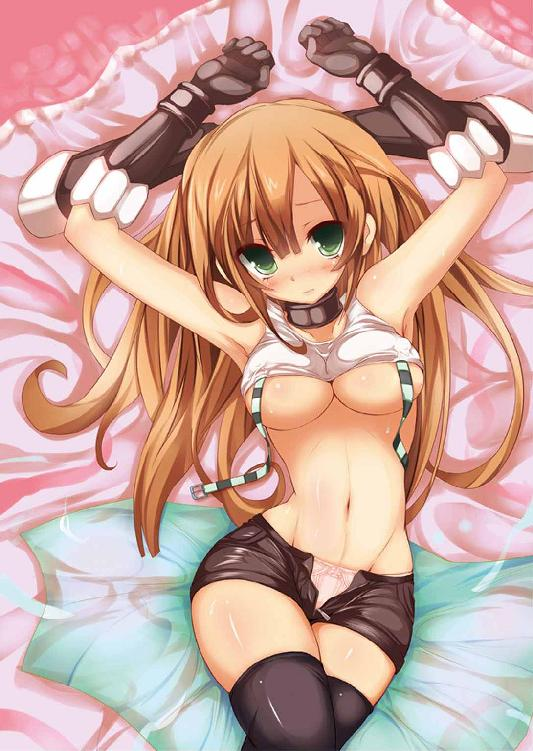
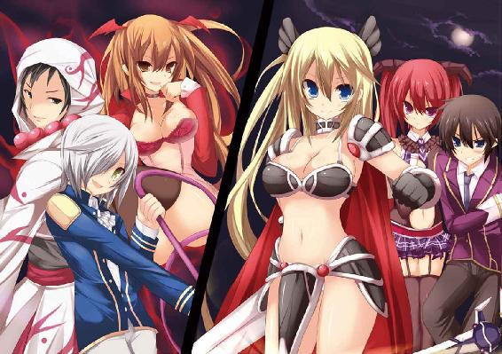
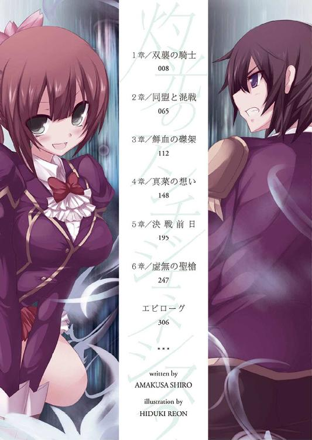
灼光のアンチジェネシス2
小説：天草白
挿絵：桐月れおん
あとみっく文庫
※本作品の全部あるいは一部を無断で複製・転載・配信・送信したり、ホームページ上に転載することを禁止します。本作品の内容を無断で改変、改ざん等行うことも禁止します。また、有償・無償にかかわらず本作品を第三者に譲渡することはできません。
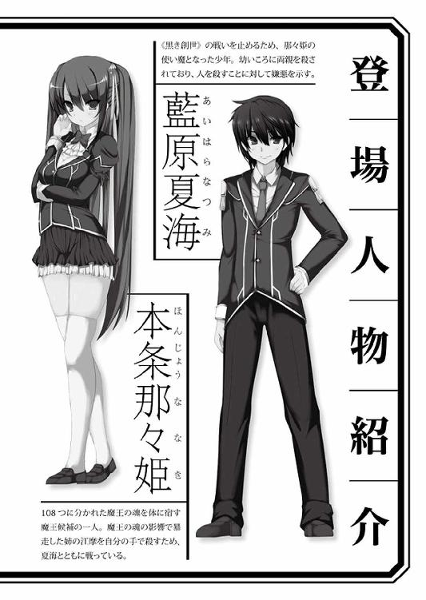
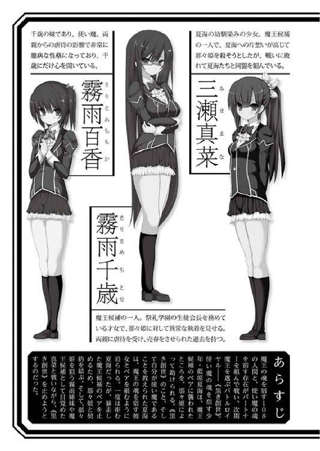
祭礼学園に続く長い坂道を、二人は腕を組んで歩いていた。
むぎゅっ、むぎゅぅぅぅっ。
右腕に、制服越しにもはっきりと分かる柔らかな感触が当たる。
一度ならず肌を重ねた相手とはいえ、朝っぱらから二の腕に弾力のあるバストを押しつけられるのは、やはり刺激が強い。
「な、なあ、那々姫。あんまりくっつかないほうがいいんじゃないかな」
藍原夏海は腕を組んでいる相手におそるおそる提案した。
「敵はいつどこで襲ってくるか分からないでしょ？ つべこべ言わないで、もっとこっちに寄りなさいよ」
提案されたツインテールの少女は、しかし腕を組んだまま離してくれない。恋人同士もかくやというべったり具合だ。
本条那々姫。
成績優秀、文武両道、容姿端麗。さらに実家は大金持ち──と三拍子も四拍子もそろった完璧美少女。
そして夏海のパートナーである《魔王候補》だ。
（言い出したら聞かないもんなぁ、那々姫は）
あらためて視線を向けた。
燃えるような真紅の髪が勝気な美貌によく似合う。
全体的にスラリとしていながら胸や尻など出るべきところはきっちりと出ている、女性として理想的なプロポーション。美しいボディラインは紫紺のブレザーに身を包んでいても隠し通せるものではない。
「何よ、人のことジロジロ見て」
「い、いや、なんでも」
見とれていた、などと言えるはずもなく、慌ててごまかした。
──夏海は現在、那々姫の自宅に居候しており、毎日一緒に登下校していた。
時折、同じように登校途中の生徒がこちらをチラチラと見る。
当初は毎朝のように周囲から好奇の視線を浴びたものだが、さすがに今では落ち着いてきていた。
といっても、学園でも指折りの美少女と腕を組み、毎朝登下校している夏海に対して、特に男子生徒たちからのやっかみの目線が肌に痛い。
彼らの視線を避けるように早足で進み、やがて校舎にたどり着いた。
腕を組んだまま、二年四組の教室へと向かう。
「ここまでくっつかなくても大丈夫だと思うんだけど。っていうか、かえって動きにくいし」
「むー、いちいちあたしの言うことに逆らうわね......。あなた、あたしの使い魔でしょう。魔王候補の言うことには絶対服従っ。違う？」
「周りの目があるところで魔王とか使い魔とか言わないほうがいいと思う」
「どうせ周りはゲームとかアニメの話だと勘違いするでしょ」
「でもさ......」
「うるさい。口答え禁止。夏海はあたしの傍にいればいいの。分かった？ 返事ははいかイエスよ」
「はいはい......」
速射砲のようにまくしたてる那々姫に、ため息混じりにうなずいた。どのみち口で勝てるはずもない。
「......そ、それから」
ちょうど教室の前に着いたところで、ふいに那々姫が足を止めた。伸びをして耳元でささやく。
先ほどまでの勝気な怒声とは一転して、今にも消え入りそうなほどか細い声で。
「放課後に、例のアレ......お願いね」
「例のアレ......」
その言葉を反芻し、夏海の意識がかあっと灼熱する。那々姫と顔を合わせるのが急に恥ずかしくなった。
「わ、分かったよ」
視線を逸らしながら、教室のドアを開けた。
「おはよ、夏海」
教室に入ると同時に一人の女子生徒が元気よく走り寄ってきて、那々姫とは反対側の腕にしがみついた。
栗色をしたポニーテールが勢いよくひるがえる。
幼なじみの三瀬真菜だ。
「真菜、おはよ──」
「ちょっと、何くっついてるのよ、三瀬さん」
夏海の挨拶をさえぎって、不機嫌そうな声を上げたのは那々姫だ。
「いいじゃない、幼なじみなんだし」
「どういう理屈よ」
「ね、夏海も本条さんよりわたしのほうがいいよね？」
真菜はにっこりと邪気のない笑みを浮かべ、体を擦りつける。
少し前まで、彼女とは単なる幼なじみであり、異性の親友といった間柄だった。
だが先日、夏海に告白したことで開き直ったのか、最近は何かにつけて迫ってくる。
「い、いや、別に二人を比べるつもりは......」
夏海は朝っぱらから二人の美少女に挟まれ、すっかりタジタジだ。
──真菜との死闘から、すでに二週間あまりが経っていた。
休戦協定を結んで以来、彼女とも、もう一人の魔王候補である霧雨千歳との戦いもなく、今は小康状態。
「そもそもあたしと夏海が一緒に登下校しているのは、敵の襲撃に備えてのことよ。三瀬さんは割りこんでこないで」
「休戦協定を結んだんだし、敵が襲ってきたら共同戦線だよ。だから、わたしも一緒にいていいよね？」
「どうなのよ、夏海？」
にこやかにたずねる真菜と、怒気をあらわにする那々姫。
しかし幼なじみの少女のほうも笑みを浮かべながら、瞳は笑っていない。
どこか狂的な光をたたえ、夏海をまっすぐに見据えている。
「だいたいあなた、また夏海を襲うつもりじゃないでしょうね。この間だって、もう少しで夏海の貞操が──」
那々姫が眉間にしわを寄せて真菜をにらんだ。
恋心を告白してきて以来、幼なじみの少女の行動はエスカレートするばかりだった。
この間などは『剣道部の練習に付き合ってほしい』などと夏海を誘い、武道場で逆レイプしようとしたくらいだ。
「襲うなんて人聞きの悪いこと言わないでほしいな？ わたしたちはちゃんと心の一番深いところで通じあってるんだもん。ね、夏海？」
「え、いや、その」
「夏海にとってあなたはただの幼なじみ。それ以上でも以下でもないわ。いいかげんに認めたらどうかしら」
「そんなはずないよ！ 夏海が本当に好きなのはわたしだけ。夏海が本条さんと、え、エッチなことしてるのは、あくまでも魔力補充のためだもん。ただの義務なんだから、そんなのホントのエッチじゃないよ。わたし、認めないからね」
一息にまくしたてる真菜は、つぶらな瞳もどこか虚ろで危ない雰囲気を漂わせていた。
「話の通じない女ね」
こうして二人の美少女が対立するのは、いったい何度目だろうか。さすがにため息をつくのも飽きてしまった。
「あなたはせいぜい体だけ提供すればいいでしょ。恋人はあくまでもわたしなんだからね」
「いつあなたが夏海の恋人になったのよ！」
「夏海はわたしのことが好きに決まってるもん！」
「フフン、この間思いっきり拒絶されてたくせに」
「されてないよ！ あれは照れてただけだよ！」
「......いや照れてたわけでもないんだけど」
「「うるさい、夏海は黙っててっっっ!!」」
ぽつりとつぶやいたとたん、那々姫と真菜から同時に怒鳴られた。
もはや当人である夏海すら眼中にないのか、魔王候補の少女同士の舌戦はさらにエスカレート。
「なんだ、またいつもの痴話ゲンカか」
かつ、かつ、と硬質の足音とともに一人の女子生徒が歩いてきた。
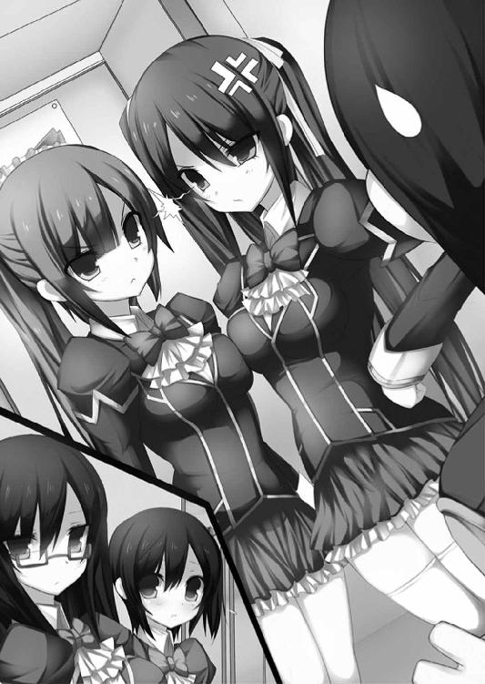
腰まで届く流麗な黒髪に眼鏡をかけた知的な美貌。
那々姫や真菜と同じ魔王候補、霧雨千歳だ。
その背には小柄なシルエットが見え隠れする。
引っこみ思案な妹、百香だった。
姉と同じ黒髪を肩のところで切りそろえた可憐な美少女。
「......災難だな、藍原」
クールな相貌に呆れたような表情をにじませ、不毛な口ゲンカを展開する那々姫と真菜を一瞥する。
「あの二人、徹底的にウマが合わないみたいで」
「単に君を取りあっているようにしか見えないが」
「そ、そうかな......？」
はっきりと恋心を告白してきた真菜はともかく、那々姫が夏海のことをどう思っているのかは、いまだによく分からない。
ただのパートナーなのか、あるいはそれ以上の──。
「しかし、こう毎日のようにケンカを繰り返されてはな。さすがの私も同情するよ」
「ありがとう」
「も、モテモテ......なんですね」
千歳の背中からひょこっと顔を出した百香が小さな声でつぶやいた。
人見知りを通り越して対人恐怖症に近い彼女から話しかけてくるとは珍しい。以前に共闘したことで、多少なりとも夏海に親近感を覚えてくれたのだろうか。
......夏海と目が合うと「きゃっ、恥ずかしい」と引っこんでしまうのはあいかわらずだが。
「それはそうと何か用でもあるの、千歳さん？」
「忠告に来たんだ」
千歳が無表情のまま言った。
「ここ一週間ほど、市内で続けざまに猟奇殺人事件が起きている。単なる殺人鬼の仕業かもしれないが、そうではない可能性もある。油断はするなよ」
その話なら夏海もニュースで知っていた。
犠牲者は老若男女問わず。夜道で突然襲われて殺されるだけでなく、死体の一部が持ち去られるという凄惨な事件だ。
近隣の町も含めると、すでに犠牲者は二十人を超えているという。
もしかしたら表に出ていないだけで、犠牲者の総数は何倍もいるかもしれない。考えただけでゾッとする話だ。
「そうではない可能性って......魔王候補が犯人だっていうのか」
「可能性の話だ」
「あなたがあたしにわざわざ忠告してくれるなんてね。フフン、どういう風の吹き回し？」
那々姫が真菜との口ゲンカを中断し、挑発的な態度で鼻を鳴らした。
「やめろよ、那々姫」
「......あなた、あたしよりも千歳の肩を持つわけ？」
「いや、理由もなくケンカを売るのはどうかと」
「夏海はあたしの使い魔でしょう？ あたしの言うことには絶対服従。違う？」
「絶対服従って......」
「勘違いするな。君を倒すのはこの私。つまらない相手に足をすくわれるな、と言っているのさ。......いくぞ、百香」
本当にそれだけを告げて、千歳は踵を返した。
「うん、お姉ちゃん♪」
妹と寄り添うようにして去っていく。
ふたたび視線を目の前に戻すと、那々姫と真菜は口ゲンカを再開していた。
当分終わりそうにない。
夏海は苦笑混じりに窓の外へ目を向けた。
「猟奇殺人事件、か」
千歳の話がどうにも気にかかる。
十年前、夏海の両親は通り魔によって殺された。
犯人はまだ捕まっていない。
そのときとは手口が違うし、別の犯人だとは思うが、理不尽な暴力によって大勢の人間が犠牲になったことに変わりはない。
胸の奥がチリチリと焼けるような、不安とも焦燥感ともつかない気持ち──。
（なんか、嫌な感じだ......）
六千年前、神との戦いで百八に分かたれた魔王の魂。その欠片を持つ者たちを、魔王候補と呼ぶ。
すべての魂の欠片をふたたび一つに集め、次期魔王を決めるための戦い──《黒き創世》が世界中で行われていた。
魔王候補は、魔王と同様に百八に分かたれた魂の欠片を持つ者......使い魔をパートナーにして、最後の一人になるまで他の候補と魂を奪い合って戦う。
いわば二人一組のバトルロイヤル。
那々姫は魔王候補の一人であり、夏海はその使い魔だ。
意見の違いからときにはぶつかりながらも、二人は幾度かの戦いを潜り抜けてきた。
そして──今も戦いは続いている。
戦うためには魔王候補から使い魔に魔力を供給する必要があった。その方法としてもっとも効率がよいのが性行為だという。
そこで、新たな敵の襲撃に備えて、夏海と那々姫は二、三日に一度の割合で肌を重ねていた。
那々姫はいまだに恥ずかしいらしく（夏海も恥ずかしいが）、彼を誘うときは「例のアレ、お願いね」などと、いつも婉曲的な言い回しを使う。今日も放課後になると、いつものように二人で那々姫の部屋に入り、今こうしてお互い全裸になったところだった。
「や、やだ、そんなにジロジロ見ないで」
魔王候補の美少女は恥じらいをあらわに、グラマラスな肢体を左右にくねらせた。
（那々姫のハダカ、綺麗だ......！）
夏海は感動の思いで目の前の裸身に熱い視線を注ぐ。
まるでメロンを縦に割ったように大きく、それでいて完璧な球形を保つ美しい乳房が、那々姫の息遣いに合わせてたぷたぷと緩やかに揺れていた。
そこからキュッとくびれた腰は折れそうなほど細く、魅惑的なカーブを描いてむっちりと張った臀部へと続く。スラリとした両脚はどこまでも長く伸び、付け根には淡い陰りがたたずむ。
対する夏海も一糸まとわぬ状態だ。
剣道部で鍛えられて引き締まった裸体をさらしていた。
目の前でつきたての餅のように柔らかく震える乳房を見ていると、たまらなく欲情を刺激される。
吸い寄せられるように手を伸ばした。
ドギマギとしながら手のひら全体で乳房を包みこむと、どくん、どくん、という心音が伝わってきた。
「那々姫の胸、ドキドキしてる」
「う、うるさいわねっ。まだ慣れてないんだからしょうがないじゃない！」
図星を指された那々姫は切れ長の瞳を吊り上げて怒った。
学校では文武両道で完璧な美少女が、セックスに対しては不安とも恐れともつかない感情を表すのがなんとも愛くるしい。
夏海は乳丘だけでなく頂上部にひっそりと息づく乳首にも指先を這わせた。人差し指でピンと弾き、プニプニとした感触を楽しむ。
「あっ......！」
先端部は特に敏感らしく、那々姫の上体がびくんと震えた。
「ここが弱いんだよな、那々姫は」
「言わないで......ああ、そんなに見ない、でぇ......恥ずかしいから......んうっ」
那々姫は眉間にしわを寄せ、苦悶に似た表情で喘いでいる。
片方の手を乳房から離し、張りのある太ももをツーッと撫でながら両足の付け根まで指先でたどっていった。
淡く生えそろった陰毛を指先でかき分け、奥に息づく二枚の花びらをさする。
「──んっ！」
引き締まった下半身がひときわ強く震えた。
すでに湿り気を帯びている柔らかなラヴィアの合わせ目に沿って、指の腹で上下にゆっくりと摩擦する。力を入れて押すと、ぐちゅっ、と淫猥な音を立て、内部から蜜液がにじみ出した。
指先に絡みつく陰毛ごとピンク色の肉裂を丹念に撫でさする。トロトロと流れ出た甘露が止まることなくあふれてきた。乙女らしいフルーティな愛液の香りが漂い、夏海の鼻腔を甘酸っぱく刺激する。
魔王候補の少女は白い裸身を左右によじり、やるせない喘ぎ声を漏らした。
「はっ、ああっ......な、夏海、そんなにしたら......あっ」
びく、びく、と小刻みに下肢を痙攣させる那々姫。処女のころに比べて格段に感度がよくなっている。
自分の指遣いが確実に相手に快感を与えていることを悟り、夏海は指の動きを少しずつ速めた。
鋭敏な肉裂をなぞり、上から下へ、下から上へ。さらに、唇の形をした生殖器官の上端にたたずむ淫豆にも摩擦愛撫を加える。
充血してぷっくりと膨らんだクリトリスは、指の腹で軽く押すと、それだけでムクムクと勃ち上がり、サイズを増していく。
「あああっ......！」
愛撫による反撃すらおぼつかないのか、那々姫は夏海になされるがままだ。
頃合いだと見て、クレヴァスの内部に指先を差しこむと、ヌルヌルとした感触とともに第二関節辺りまで一気に埋まった。
じゅくっ、じゅくっ、と愛液の飛沫を飛び散らせ、肉棒でのピストン運動さながらに勢いよく指を出し入れさせた。たちまち指の根元まで那々姫の垂れ流すラブジュースで濡れてしまう。
「はぁぁっ、あうんっ」
揺れる上体を追いかけ、もう一方の手でＤカップの肉丘を揉みしだく。こちらも指先に感じる乳首の硬さから快感の高まりが伝わってきた。
柔らかなグミのようだったニップルは、いつの間にか内部に芯が通ったように硬く、まっすぐ起き上がっている。
夏海は興奮に任せて両手の握力を強め、乳房が扁平に潰れるほどの勢いで左右の膨らみを鷲掴みにした。
マシュマロのように柔らかく、瑞々しい弾力にあふれた双丘の触り心地を存分に楽しむ。祭礼学園の男子生徒すべてにとっての高嶺の花を、自分一人が自由にしているという優越感と征服感。
たわわな乳房は揉めば揉むほど火照りを増し、令嬢が宿した欲情の熱を夏海の手のひらに伝えてくる。
「本当に気持ちよさそうだね、那々姫」
「み、見ちゃいやっ......見ないでぇ......！」
那々姫は両手で顔を隠し、悲鳴を漏らした。
羞恥の気持ちがさらに欲情を高めたのか、クレヴァスに沿わせた指先にはヌルヌルとした蜜の感触があふれてくる。女の泉はこんこんと甘露を漏らし、あとからあとから湧いて出るようだ。
（そろそろいいかな）
夏海は那々姫の背後に回ると、ゆっくり押し倒して四つん這いの体勢を取らせた。
乳房や秘所への愛撫で意識がポウッとなっているのか、勝気な少女はされるがままに、ベッドの上で這いつくばる。
夏海が張りのある双尻を抱え上げたところで、ようやく自らの体勢を自覚したらしく、慌てた様子で振り返った。
「や、やだ、こんな格好で──」
「顔を見られるのは恥ずかしいんでしょ？ だったらこれで」
グラマラスな肢体が羞恥に震えるさまを見下ろしていると、次第に嗜虐的な気持ちがこみ上げる。
眼前でぷるぷると揺れる白桃のような双尻を両手で鷲掴みにし、ギュッと揉みしだきながら、臀裂を左右に割り開いた。
まだ数度しか男を受け入れていない無垢同然の秘唇が夏海の眼下に息づいていた。
唇を縦に割ったような形をした薄桃色の花びらは、ひく、ひく、と小刻みな震動を繰り返し、わずかに口を開けて綻ぶ。
その上には美しい放射状の皺に彩られた菊穴が見えた。
排泄の器官だとは信じられないほど可憐なピンク色をしたホールは膣同様に小さく震え、那々姫の緊張を表しているかのよう。
「すごい。丸見えだよ、那々姫」
吸い寄せられるようにして、指の腹で窄まりを撫でた。
「ち、ちょっと、やだ......夏海、んっ」
「もしかして、気持ちいいの」
ごくりと喉を鳴らし、指に力を籠めて圧迫する。放射状の皺が伸びていき、今にも指先が窄まりの内部に飲みこまれそうだ。
実際、もう少し力を入れれば直腸に進入していきそうだった。
そのとき、びくん、とひときわ強く桃尻が跳ねて、夏海の指を押し返してしまう。
「やっ、だめぇ......それ以上、しないで......！」
嫌々をするように紅いツインテールを振り乱す那々姫。
恥じらいの仕草が愛おしくて、夏海は真っ白な首筋や背中に軽いキスを何度も浴びせると、ヒクヒクと震える秘孔に尖った亀頭をあてがった。
性器同士が接触し、ぐちゅ、と淫靡な水音が鳴った。これだけ濡れていればスムーズに挿入できるだろう。
「どうしても......この格好でするの？」
那々姫が背中越しに振り返り、抗議するようににらんだ。
夏海は小さく苦笑して、
「那々姫だって、嫌そうに見えないよ」
「あたしは別にっ！ ......ま、まあ夏海がそんなにしたいのなら、恥ずかしいけど......いいわよ」
「それじゃあ──」
承諾を得られたところで、夏海が荒い吐息混じりに腰を押し進めようとする。
が、那々姫はわずかに腰を引いて、挿入にお預けを食わせた。
「ま、待って。その前に......ちゃんとキス、してよ。ただ機械的に肌を合わせるだけなんてイヤ。今日はまだ一回もしてないし」
恥ずかしそうに目を逸らし、はあっと悩ましげな吐息をつく。
（那々姫、可愛い......）
年ごろの少女らしい可憐な仕草に心を高鳴らせ、夏海は唇を寄せた。薄桃色の唇に力強いキスを浴びせる。
恋人同士のように優しく、情熱的な口づけ。
「んっ」
憧れの美少女の柔らかな唇の感触に陶然となった。互いの舌を吸いあい、キスを堪能したところで、唇を離して一気に体重をかける。
ぬぷっ......ぐちゅぅぅぅぅぅっ！
熱く火照った切っ先でわずかに綻んだ花弁を割り開き、抵抗感の強い粘膜を、ずずずっ、と押し広げながら突き進んでいく。
「あああああっ！」
挿入の圧力で背中を弓なりに反らす那々姫。
すでに処女ではないが、あいかわらず膣孔は狭く、粘膜は肉棒を外部へ押し出そうと強烈に反発してくる。
夏海は下腹部全体にグッと体重を籠め、その抵抗に逆らってなおも押し進めた。
ずぶり、と最奥まで膣壁をかき分ける爽快感とともに、尖りきった亀頭が膣底にコツンと当たる。
「あふ......は、入ってくるぅ......太くて、大き......ああんっ！」
すでに期待感で感度が昂っていたらしく、挿入されただけで、那々姫は上体を左右にくねらせて気持ちよさそうに喘いだ。甘ったるいため息をついて、シーツの上に上体を突っ伏す。
「ううっ、那々姫の中っ......ウネウネして、絡みついて......ああっ！」
強烈な快感を得ているのは、夏海も同じだった。
初体験以来、那々姫と何度か交わっているが、体を重ねるたびに生硬な膣が少しずつほぐれ、肉悦が増していくような気がする。
蕩けるように熱い粘膜が蠢いてペニスの先端から付け根までを心地よくくすぐってくる。粒々の多い襞肉が不規則に波打っては、肉棒のいたるところに巻きつき、搾る。
腰骨が甘痒く痺れた。
まだ挿入しただけだというのに、体の芯に電流が走ったかのよう。
「くうっ、が、我慢できないっ、動くよ、那々姫！」
夏海は天を仰いでうめいた。
これ以上腰を動かさずにいると、何もしないうちに精を搾り取られてしまう。
荒々しく息を吐き出すと、細くくびれた腰を両手でガッチリとつかみ、下腹部を動かし始めた。
ぱんっ、と太ももの肉と尻肉とを打ち鳴らし、バックから抽送を浴びせていく。
「あ、ううっ、ふぁぁぁっ」
那々姫は断続的な息を漏らし、綺麗に反った白い背中を痙攣させた。
一打ちごとにその痙攣が大きくなり、上体を仰け反らせたかと思えば、またシーツの上に突っ伏す。
非の打ちどころのない完璧な美少女を四つん這いにして、背後から貫いている──この格好で繰り出すストロークは、正常位や騎乗位にはない、獣の体位ならではの征服感をもたらしてくれた。
オスの本能そのままに、がつっ、がつっ、と最奥をえぐる。
「や、ぁっ......奥まで、届い......はぁんっ」
出し入れのたびに、真紅のツインテールがリズミカルにひるがえり、綺麗なＳ字ラインを描く女体が艶めかしく揺れた。
「う、くうぅ......あふっ......んん、声、出ちゃ、うっ......ああっ」
思いっきり声を出すのが恥ずかしいのか、那々姫は唇を噛みしめて喘ぎを押し殺している。それでも堪えきれない声が甘ったるい吐息とともに漏れ出した。グラマラスな裸体がひっきりなしに跳ね、踊る。
一突きごとに欲情をさらけだす少女の痴態に、下腹部がゾクリとなった。
背中から手を回し、下向きになってもほとんど形の崩れない二つの肉丘を、むぎゅぅぅぅっ、とつかむ。内部までみっちりと魅肉の詰まったＤカップの乳房が、手のひら全体にずっしりとした重みを伝えた。
鷲掴みにすると若々しい弾力感とともに指先を心地よく押し返してくる。
「んっ、むね、だめぇ......ヘンに、なっちゃ......あう、んっ」
さらに夏海の指先が淡い桃色をした乳首にまで到達すると、那々姫は背中をアーチ状に反らしてか細い喘ぎ声を漏らした。
ずっと憧れだった少女が指先の動き一つで高まっていく。夏海自身も興奮を昂らせ、狭苦しい秘孔の奥深くまで突き刺さった肉槍が充血を増す。
「やぁぁぁッ、夏海のまた大きく......あああっ、だめ、壊れちゃうっ！」
処女を奪って以来、肌を重ねるごとに那々姫の性感は開発され、より敏感になっているようだった。
抽送や愛撫に反応して女体が薔薇色に染まっていく。
もっと気持ちよくさせたい。もっと乱れさせたい。
こみ上げる衝動のまま、さらに膨張したペニスで内側から膣内の粘膜を押し返すようにして拡張した。
「あっ、そんなに深くっ......ああっ、いや、ぁ......！」
ふいに喘ぎ声が細く途切れた。
ふう、ふう、と唇を噛みしめたまま小鼻を膨らませて断続的に息を漏らしている。どうやら軽くイッたらしい。
「気持ちよさそうだったね」
いったん腰の動きを止めると、那々姫は慌てたように背中越しに振り返った。
「っ......！ し、仕方なくしてるんだからねっ。これはあくまでも魔力を補充するために......ちょっと、笑わないでよ。もうっ」
拗ねた顔が愛らしくて、唇を軽く吸いつけた。プリプリとした唇は驚くほど熱く火照っている。
たちまち那々姫の顔が淡いピンク色に染まった。
「......い、いきなりキスなんてしないでっ」
今度は照れとも怒りともつかない表情だ。
「さっきはちゃんとキスして、っておねだりしたくせに」
「それは、その......うるさい、ばか」
勝気な態度をあらわにする少女に、夏海はにっこりと笑った。ジンとした疼きが持続している下腹部を揺する。
あいかわらず膣の締めつけがキツく、射精感は高まりっぱなしだ。今度は那々姫と一緒にイキたかった。
「俺のほうはまだだから......もっと動くよ」
「えっ、ちょっと待っ......ああ、はぁっ......あ、うんっ」
相手の戸惑いを無視し、イッた直後の敏感な裸身に対してふたたびピストンを開始した。
ぱんっ、ぱんっ、ぱんっ！
勢いよく腰をグラインドさせて叩きつけると、弾力のある左右の尻肉が太ももにぶつかってリズミカルな音が響く。
一打ちごとに起伏の激しい膣襞とカリ首が摩擦し、甘い肉悦が下腹部に広がった。
相手に肉悦を与えるだけでなく、自分もフィニッシュまで高まって一緒に絶頂までたどり着くための動き。何度かセックスを体験する中で、夏海はそんな絶妙なコントロールを身につけていた。
「な、夏海、深すぎっ......ん、くぁぁっ、あたし、また......イク！ だめ、イクぅ！」
真っ白な上半身を左右にくなくなと揺らしながら、那々姫が悲鳴を漏らした。膣内が震動して中に咥えこんでいる肉茎をギュウッと食い絞る。細い喉を震わせてエクスタシーの絶叫を上げた。
「くうっ。う、ああっ！」
膣内の締めつけのキツさに、背筋から腰骨にかけて激しい灼熱感が一気に駆け上がる。腰の芯に電流のような愉悦がこみ上げ、あっという間に射精感が頂点に達した。
「お、俺ももうっ......イクよ、那々姫！ うああっ......あ、くぅっ！」
深々とペニスを打ちこんだ姿勢で正視すると、下腹部を小刻みに痙攣させながら絶叫を上げた。ふわりと全身が浮き上がるような射精時独特の浮遊感。
瑞々しい肉洞にはまりこんだ男茎が内部から膨れ上がり、たぎりにたぎった欲望の子種を一気に噴出した。
どくどくどくっ！ どびゅっ、どびゅるぅぅぅぅっ......！
「はぁぁぁぁぁっ、あ、熱いの、いっぱい......出てる！ やぁんっ、びゅくって......あたしの中、夏海の精液でいっぱいになるぅぅっ......！」
憧れの美少女の胎内に遠慮なく、勢いよくおびただしい量のザーメンをほとばしらせる。圧倒的な爽快感で意識が真っ白に焼き尽くされた。
最後の一滴まで放出し尽くしたところで、夏海はようやく脱力する。
そのまま体重をかけると、重ねあわせたスプーンのような体勢でベッドの上に体を沈ませた。
「はあ、はあ、はあ......二回も、イカされちゃった......」
背中越しに振り返った那々姫は涙目で、頬を真っ赤に上気させている。蕩けるように甘い表情だ。
美しい少女の肢体を思う存分に貪り、絶頂まで導いた事実が、征服感と充足感を同時に満たした。
「俺も、すごくよかった」
心地よい放出の余韻に浸り、ゆっくりと顔を近づけた。
那々姫のほうも心得たように顔を寄せる。
自然と唇が重なった。
「ん、ふっ......う」
互いに小鼻から甘い息を漏らし、恋人同士さながらにキスを交わす。
触れあう唇から那々姫の熱情が伝わってくるかのよう。
たっぷりと後戯代わりのキスを堪能してから、夏海は唇を離した。
「ふう」
目の前で那々姫が満足げに吐息をつく。
目尻を赤く潤ませ、頬を上気させた少女は、ついこの間まで処女だったとは信じられないほど艶めかしい表情を浮かべていた。
行為後の落ち着いた時間が、夏海は好きだった。
四肢に残る爽快な疲労も、胸を満たす充足感も、ともに心地よい。
なんだか恋人同士になったみたいで心が癒やされる。
「──あ、あのさ、前から聞きたかったんだけど」
夏海が上半身を起こして那々姫を見つめた。
二人ともまだベッドの中だ。
夏海はトランクスだけを身につけた半裸状態で、快楽の余韻が心地よい熱となって肌に残留している。
一方の那々姫は一糸まとわぬ姿で、シーツを胸元までかぶっているが、垣間見える美しい肩や鎖骨のラインがなんとも艶めかしい。
思う存分彼女の胎内に精を放ったというのに、ゾクリとした艶気を感じてトランクスの内部で若いペニスがむくりと起き上がりだす。
「那々姫は本当にこれでいいの？ やっぱり、その......好きでもない男と定期的にこういうことをするっていうのは......」
魔王候補の少女が不快げに眉間にしわを寄せたのを見て、ドキッとしながらも言葉を継ぐ。
「だって女の子なんだし、さ。いや、戦いに勝ち残るためにはしかたがないとは思うんだけど、でも──」
つい早口になりながら、一気にまくしたてた。
自分でも何を言おうとしているのか、どういう結論に持っていこうとしているのか、分からなくなってきた。
「だから、もし那々姫が苦痛に感じるなら、俺は」
「何を言い出すかと思ったら......もうっ。じゃあ他にどうしろというの？」
那々姫が怒ったような顔で叫んだ。
「だいたい、それを言うなら夏海だってそうでしょ。好きでもない女とこういうことして平気なの？」
「俺は、別に」
照れくさくて目を伏せたとたん、那々姫が表情をこわばらせた。
「ふーん、平気なんだ？ 好きでもない女が相手でも、関係なくエッチなことができるんだ？ そうだよね、男の子だもんね」
「ち、違うよ、そうじゃなくって」
夏海は大慌てで両手を振った。
「那々姫が相手なら平気だよ。その、毎回ドキドキするっていうか、えっと......」
言えば言うほど恥ずかしくなってきて、それ以上先の言葉を続けることができない。
「と、とにかく、俺は那々姫が相手なら......いいよ。これから先も、那々姫がよければしたい、って思うし」
「じゃあ、いいじゃない」
ふふ、と小さくほほ笑む那々姫。
「これからも続けましょ」
「嫌な思いさせてごめん。この戦いが終わるまでは──」
「......あたしはイヤだなんて一言も言ってないでしょ」
「えっ？」
「う、うるさいわねっ。独り言よ、独り言！」
那々姫が顔を真っ赤にして怒鳴った。
「ごめん、ヘンなこと聞いて」
いったい彼女が何に怒っているのか分からないが、謝っておく。
「そういえば、千歳さんが気になることを言ってた。猟奇殺人事件の犯人は魔王候補の可能性があるって──」
ふと昼間の話が脳裏をよぎり、夏海は話題を変えた。
「また戦いになるのかな。でも、魔王候補たちって世界中にいるんだっけ？ 同じ場所にそんなに魔王候補が集中しているのは、さすがに不自然かな」
「そうね。百八人の魔王候補は、日本だけじゃなくって様々な国で戦い、魂を奪い合っているわ。どの国に何人いるのかまでは分からないけど」
那々姫が遠い風景を眺めるような目で告げた。
「昔、姉さん......江摩に聞いたことがあるの。魔王候補同士は不思議な縁で惹きあうって。だから、どんなに遠く離れていても、いつかどこかで巡り合う。遅かれ早かれ戦うことになる──」
（いつかどこかで巡り合う、か）
心の中でその言葉を反芻する。
那々姫の最終目的は、魔物と化した姉を殺すことだという。
ならば、いずれどこかで彼女と出会うときが来るのかもしれない。
夜の路地裏に、むせ返るような血臭が漂っていた。
「ふうっ、いい音がしたわねぇ。それに断末魔もいい響き──ああ、たまらない」
架藤京香は艶めいた微笑を浮かべて、熱い吐息を漏らす。
足元の血だまりに映る自分の姿を見下ろす。
三十代後半の熟れた美貌。綺麗な茶色に染めた髪は腰の辺りまで伸びて、緩やかに波打っている。
むっちりと豊満なボディラインを包むのは、乳房と秘所を申し訳程度に隠しただけの妖艶なランジェリー風の衣装だ。上半身には赤いジャケット。スラリと伸びた美脚は黒いガーターストッキングと赤いハイヒールの組み合わせで覆われている。
頭部を飾る蝙蝠の羽の形をした飾りや、腰から伸びる悪魔の尾を思わせるアクセサリーもあいまって蠱惑的なシルエットを作り出していた。
そして肌もあらわなその体を包むのは、毒々しい紫色をした燐光。
魔力の、光。
百八の魔王の魂を受け継ぐもの──《魔王候補者》の証だ。
周囲には、様々な形をした肉片が転がっていた。
丸いもの、いびつな三角形をしたもの、棒状のもの......それらはいずれも、人間の体の一部だったもの。
合計で五人分のバラバラ死体だ。
先ほど絶命した五人目の犠牲者は、彼女自身が首をへし折った。心地よい感触がまだ両手に残っている。
「ああ......」
半開きの唇から艶めかしい吐息を漏らす。暴力と殺人......嗜虐の快感が欲情を激しく昂らせていた。
気だるく火照る腰の奥。誰でもいいから適当な男をホテルに連れこみ、今すぐ野太いモノを体の中に咥えこみたいほどだ。
「ひ、ひいい......」
残る二人......中学生くらいの男女が怯えた顔で後ずさった。
血の気を失って真っ青な顔を見ると、ますます嗜虐心をそそられる。
「ふうん......けっこう可愛い顔してるじゃない。好みだわぁ」
濃いルージュの塗られた唇を舌で舐めた。むっちりとした腰を左右に打ち振って少年に歩み寄る。
「んぐ......うっ!?」
しなやかな両手で両頬を挟みこみ、そのまま唇を強引に奪った。
おそらく少年にとって初めての口づけなのだろう、つぶらな瞳が呆然と見開かれていた。
ジンと腰が疼く。初物を奪うのはたまらない。
「ん、ちゅ......む、ん、れろっ......ちゅ、う」
京香は無垢な少年のファーストキスを盗んだ陶酔感に浸りながら、ぬめぬめとした舌をくねらせ、相手の口内に進入した。
相手の舌に舌を絡め、熟練したテクニックで吸いつける。
「ふう、ごちそうさま」
少年の唇を存分に堪能してから解放してやった。
怯えた顔で後ずさる彼を見ていると、ますます欲情が昂る。どうせ殺してしまうのだが、その前に未発達な少年の肉体を思う存分味わうのも悪くない。
想像しただけで、ショーツの奥の秘唇がジュンと濡れてくる。
「ひ、ひいっ、助けて......」
少年は恐怖にかすれた悲鳴を上げ、逃げだした。
バチィッ！
その足元が突然爆裂する。アスファルトの路面の一部が粉々に砕け散った。
「おいおい、どこ行く気だよ。あん？」
物陰から新たな人影が現れる。
粗暴な口調とは裏腹に、その手の趣味の人間が見ればよだれを垂らしそうなほど可愛らしい顔立ちをした少年だ。
長い前髪に右目が隠れており、露出した左目だけが鋭い眼光を放つ。
華奢な体つきを包むのは、祭礼学園中等部の制服。高等部のブレザータイプとは違い、こちらは青い学ランタイプだった。
右手には紫色をした鞭をだらりと下げている。
「み、未怜くん、あまり手荒なことはしないほうが......」
その傍で、三十歳前後の男がおずおずとたしなめた。
中肉中背の体格に、ＲＰＧの僧侶や司祭を思わせる白いローブ姿だ。
「あ？ どーせ殺すんだから一緒だろーが」
「で、でもねぇ......あんまり痛いのは見ているこっちも、なんだかね......」
「あいかわらずズレてんな、田原崎は。いいか、オレらがやってることは──」
未怜が手元の鞭を振るう。
「ひ、いっ......っ......」
少年の悲鳴は中途で消えた。
鞭の先端が音速を超え、その胴と首を一瞬にして断ち切ったのだ。
「コ・ロ・シ、だろーが。情けなんてかけてんじゃねーよ」
呆然とした表情を浮かべた生首が、ごろん、と未怜の足元まで転がる。
「で、あといくつ死体を集めればいいんだっけ、京香」
「ふふ、あと七つで九十九人分よぉ。今日はもう二つくらい持って帰ろうかしら。ああ、体が疼くわぁ」
「また血を見て興奮してんのかよ。つくづくリョナ趣味だな。ちっ」
「あ......うう......」
かすれたうめき声は、最後に残された少女のものだった。
地面にへたりこんだまま、京香たちを呆然と見上げている。スカートがまくれて、白い下着があらわなことにも気をやる余裕はないようだ。
ショーツの股間部が濃く変色していた。
「あらあら、お漏らししちゃったのねぇ。ふふ」
「よく見ると、けっこう可愛い顔してるじゃん。殺る前に犯っとくか。この前の女みたいに──」
未怜が舌なめずりをして、ゆっくりと少女に近づく。
「あら、犯しちゃうんだ？ お盛んねぇ」
「色情狂のテメェに言われたかねーよ」
ふいに京香が眉を寄せた。
「......！ ちょっと待ちなさぁい。大きな魔力が近づいてくるわ」
「魔力、だと」
「もしかしたら未怜くんより強いかもねぇ。これは──」
京香たちがいっせいに振り返る。
月明かりを背に、黒髪の少年と真紅の髪の少女が立っていた。
「ひ、ひどい......！」
思わず目を背けたくなるような凄惨な光景だった。
夏海の足元に広がる点々とした赤い血だまり。
むせ返る血臭に胃の内容物が逆流しそうだ。
周囲には腕や足、胸、腹、そして生首......バラバラに寸断された人間のパーツが転がっている。
恐怖に表情を歪めたもの、信じられない思いで呆然としたもの。泣き出しそうな顔のまま硬直したもの。
それぞれの死にざまを表現した、顔。
「どうして、こんなことを」
悲痛な思いがこみ上げる。
──夏海たちは日課であるパトロールの最中だった。
魔王候補者は使い魔の魔力を感知することができるため、那々姫がレーダー役となり市内各所を見回っているのだ。
もっともその精度は『町の一区画内に使い魔がいるかどうか』を探り当てられる程度のもの。雲をつかむような話ではあるのだが、それでも何もしないよりはマシ、と二人は夜な夜な巡回を続けていた。
そして今日もそんなパトロールの最中、那々姫が使い魔の魔力を感知し、慌てて駆けつけたのだった。
「......無関係の人間を巻きこむのはいい気分じゃないわね」
那々姫が苦々しい顔でうめいた。
その姿はすでに祭礼学園の制服ではなく、魔王衣装へと変化している。
均整の取れたボディラインがはっきりと浮き出るような、露出度の高いコスチューム。
頭頂からは二本のツノ、背中からは皮膜状の翼、腰からは尾が伸び、全体的に夢魔を連想させるシルエットだ。
「本条那々姫、か。へっ、そっちから出てきてくれるなんて好都合だ」
少年が野卑な笑みを浮かべた。
（こいつら、那々姫を知ってる......!?）
訝りながらも、夏海は相棒の少女を振り返った。
「那々姫、剣を！」
彼女の手から黒い輝きが弾ける。
光は収束し、長大な剣の形をとなって物質化した。
美しい白銀の刃に黒い柄。
魔剣《熾天の炎刃》。
実体化した剣を手に取り、青眼に構えた。
夏海の目的はあくまでも戦いを止めること。
しかし足元に転がっている何人ものバラバラ死体を見れば、彼らに口先だけの説得が通じるとは考えにくい。
まずは相手の戦闘能力を奪うことから考えたほうがよさそうだ。戦いをやめるよう説き伏せるのはそれからでいい。
「たった一人でオレたちとやろうってのか。状況分かってんの？ 二対一だぜ？」
鞭を手にした少年が嘲笑を浮かべた。青い学ランを見ると、どうやら祭礼学園中等部の生徒らしい。
「人数なんて関係ない。俺がお前たちを止める」
夏海はキッと少年を見据えた。紫紺のブレザーをまとった全身が、バチ、バチィッ、と青白い魔力の稲妻に覆われる。
「けっこう可愛い顔してるじゃない。ねえ、アタシたちの仲間にならない？ お姉さんがたっぷり可愛がってあげるわよ、ふふ」
「テメェはお姉さんって柄じゃねーだろ、京香」
「口が悪いわねぇ、未怜くんってば」
戦場とは思えないほど気楽な雰囲気の談笑。
「君、今のうちに早く逃げて」
「は、はい......」
夏海が促すと、少女はガタガタと震えながら走りだした。
「勝手に逃がしてんじゃねーよ！」
不快げに叫んだ少年が手にした鞭を振るった。長大な鞭は空中で大きくしなり、螺旋の軌道を描いて、無防備な少女の背中に向かい──、
バシィッ！
横合いから飛び出した夏海が、大剣を旋回させて鞭を弾く。
「テメェ......！」
「これ以上、誰も殺させない」
剣を構え直して敵の使い魔と正対した。
「へっ、やる気かよ。なら《煌鳳翼騎士団》序列五位──この井上未怜が相手してやるぜ。今度は──本気の一撃でな」
未怜と名乗った少年が、両手に持った鞭をパンと打ち鳴らす。
（なんとか懐まで飛びこまないと）
相手の得物は鞭。リーチではこちらが不利だ。
十メートルほどの距離を置いて、二人の間で緊張感が熱を孕んだ。
「本条那々姫はともかく、使い魔に用はねぇ。テメェはここで死ね」
──違う、と夏海は思った。
未怜は、自分とは根本的に違う。
人を傷つけることを。殺すことを。なんとも思っていない。
それどころか、圧倒的な力を振るうことに魅入られている。
以前に戦った本多や樹河と同じだ。
（野放しにしておけない。絶対に止めなきゃ）
夏海は剣を手にじりじりと近づいた。
タイミングを計り、力強く地面を蹴る。そのまま弾丸の勢いで走りだした。
「正面からだと──舐めるな！」
吠えて、鞭を大きく振りかぶる未怜。
「唸れ、《蠱毒の旋鞭》！」
緋色の魔力の稲妻をまとった鞭がまるで毒蛇のように波打ち、うねる。
ぎんっ！
耳障りな音は、鞭の先端が音速を超えた証。
視認すら困難なその一撃を、夏海は振り下ろした剣先であっさりと弾く。
「やっぱりテメェも《白兵型》か！」
夏海はなおもスピードを緩めず、加速。
（このまま一気に叩くっ）
全身から未怜と同じく稲妻状の魔力がほとばしった。
両足の力を最大限に解放し、爆発的な速度で未怜に迫る。
彼我の距離は約五メートル。
夏海なら一呼吸で踏みこめる間合いだ。
未怜もさすがに表情を引きつらせ、
「な、なら、これでぇっ！」
ふたたび魔の鞭を振るった。
夏海は先ほどと同じく迎撃しようと剣を振り上げ──、
「えっ!?」
鞭の先端部がいきなり五つに分裂する。
まるで一つ一つの先端部が生きているかのように──複数の首を持つという伝説の魔蛇の名前そのままに、バラバラの方向から襲いかかってきた。
正面から、頭上から、足元から、右斜め前から、左斜め下から。
五種類の軌道を描いて迫る鞭を、
「ちいっ」
夏海は舌打ち混じりに長剣を旋回し、一つ一つ叩き落としていく。
人間をはるかに超える反射神経、そしてスピード。
それでも五つの鞭をすべて迎撃することはかなわず、防ぎきれなかった分に浅く頬を裂かれる。
「くっ」
頬の辺りが熱い。皮膚が裂け、生ぬるい血が垂れ落ちてくる。
「へえ、今のを防ぐかよ」
絶対の自信を持って放った攻撃だったのだろう、未怜は驚きの表情を浮かべた。
一方の夏海も気を引き締めて、敵を見据える。
同じ近距離戦闘タイプのようだが、相手のほうが武器の射程が長い。
（まともな打ち合いじゃ不利か。だったら──）
柄を握り直した。どくん、と長剣が熱く脈動する。
刀身が中央から二つに割れ、より幅広く長大に。鍔が翼のように広がり、柄の中央部には美しい宝玉がせり出す。
ゴオオオオオオオオッ！
変形を終え、真の姿を現したレーヴァテインが紫色の魔力炎をまとった。
「いけるか、レーヴァテイン」
自らの愛剣に語りかける。
ゴウッ......！
刀身を覆う魔力の炎が、その火勢を増した。
空間を飛び越えて魔力の炎を射出、対象を破壊する──それがレーヴァテインの真の能力。たとえ物理的な射程が短くても関係ない。
ただし、この攻撃は膨大な魔力を消費するため、そう何度も放つことはできない。
ここぞというときの切り札──。
確実に、攻撃を当てる必要があった。
（一撃で──決める！）
夏海の瞳が強い輝きを放つ。
「へっ、そんな位置から攻撃が届くとでも思ってんのか」
未怜が嘲笑を濃くした。
余裕を見せる敵に対し、夏海はゆっくりと剣を振りかぶり──、
「お行きなさい、アタシの可愛い子猫ちゃん」
そのとき、京香の足元から漆黒の猫が飛び出した。
「なんだ、猫......？」
夏海は動きを止めて戸惑いの声を上げた。
戦場には不釣り合いな可愛らしい子猫が駆け寄ってくる。
「バカ、夏海！ 油断しちゃダメ」
那々姫が後方から警告した。
「えっ？」
「弾けなさぁい、《千変万化》」
黒猫の姿がぐにゃりと歪んだ。
「こ、こいつ、まさか使い魔!?」
動物タイプの使い魔──ヘパイストスは粘体状に変形すると、夏海の両腕に絡みついた。
そのまま手錠の形に変形して両腕を拘束してしまう。
「うっ!?」
柔らかいゴムのような感触のそれは、力を籠めても伸び広がるばかりで剥がすことができない。
「ふふ、アタシは《煌鳳翼騎士団》序列九位──架藤京香よぉ。で、この子はヘパイストス。なーんにでも姿を変えられる、可愛いペットなの」
「し、しまった......！」
夏海は痛恨の表情でうめいた。
戦場では一瞬の油断が命取りになる。しかしまだ殺し合いの場数を踏んでいない夏海には、どうしても心の隙があった。
いくら可愛いからといって敵が放った猫を見て、気を抜いてしまうなど──。
（なんて、バカなこと......くそっ）
「へっ、トドメといくぜ」
未怜が勝ち誇った笑みを浮かべて、鞭を振りかぶった。
「外れない......！」
夏海の両腕にはちきれんばかりの筋肉の束が浮かび上がった。
だがいくら力を籠めても、ゴム状の手錠は柔らかく伸びるだけ。
これでは自由に剣を使えない。
ブンッ！
音を切り裂き、緋色の輝きをまとった鞭が繰り出された。五つに分裂した先端部が別々の方向からいっせいに迫る。
「ちいっ」
自由の利かない腕で剣を振るい、一本、二本......なんとか三本目までは叩き落とした。
しかし──。
「うぐっ！」
迎撃をかいくぐった一本が夏海の首元に巻きつく。ぎりっ、ぎりっ、と締めつけられて気道が締まった。
「ぐっ......ううっ......っ......」
呼吸が詰まり、次第に気が遠くなっていく。両腕の自由を失った状態では抵抗のしようがなかった。
ドス黒い絶望感で意識が染まる。
（こんなところで終わるのか......！ 俺は戦いを止めるために戦うって決めたのに。那々姫を守るって誓ったのに）
悔しい。だけど、どうにもならない。
意識がどんどんと薄くなる。
視界が真っ白に靄のようなものに覆われていく。
（も、もう......ダメ......なの......か............！）
目の前が白一色に染まろうとしたそのとき、
バシュッ......！
突風にも似た衝撃が駆け抜けた。
急速に呼吸が回復すると同時に、視界も鮮明になる。
「ごほっ、ごほっ......えっ!?」
すぐ傍に赤と黒の輝きに包まれたシルエットがたたずんでいた。
夏海より一つか二つ年上だろうか、大人びた容姿の少女だった。
両手に二本の剣を携えているのを見ると、どうやら鞭を切断して夏海を救ったのは彼女らしい。
黄金の絹糸を思わせる髪は腰の辺りまで伸び、涼しげな瞳は透明度の高い青色だ。
動きやすさを優先した黒い軽装甲冑は胸の膨らみや引き締まった腹部、ミルク色の太ももなどが大胆に露出し、小柄ながらもグラマーな体型がくっきりと浮き出ていた。
背中には赤いマントが翼のように広がる。
「危なかったね。もう大丈夫だよ」
戦場には不釣り合いなほど爽やかな笑み。
「あとはボクがやる。キミは下がっていて」
凛々しい少年のような口調で、騎士少女が告げた。
「待って、戦うなら俺も──」
「そこで見てて。ボク一人で十分だよ」
形状の異なる二本の剣を、胸の前で十字に交差させて構える。
右手には幅広の刀身を備えた長剣。
左手には細身の刀身を備えた細剣。
「さあ、いくよ。ボクの剣は、外道を断ち切る剣！」
「いきなり出てきて、なんだテメェは！ 気取ってんじゃねェよ」
未怜が怒りの咆哮とともに鞭を振るった。
その先端部がふたたび五つに分裂し、四方から襲いかかる。
「──遅い」
分裂した五つの鞭を、そのことごとくを少女は軽やかなステップで避けていく。
まるで、旋風──。
音速の動きで鞭の群れをかいくぐり、未怜に肉薄した。
「ちいっ」
しかし音速で動けるのは、相手も同じ。
素早くバックステップして距離を取ると、ふたたび鞭を振るう。
「無駄だよ」
余裕の笑みを浮かべた少女が右手の剣を掲げた。
「《斬天剣》──砲撃形態」
ガシャン、と機械的な音がして刀身が中央から割れ、左右にスライドする。
その隙間から現れたのは──長大な銃身。
瞬く間に剣から銃へと変形したそれを構え、
シュゴォッ！
銃口からレーザーに似た光芒を放った。
まばゆい赤色の輝きが鞭を一本、二本、と薙ぎ払う。
が、五本すべてを撃ち落とすことはさすがにできない。
大きく弧を描き、銃撃から逃れた一本が襲いかかる。
「無駄だってば」
刹那、左手の細剣を跳ね上げ、不規則にうねる鞭の先端部を正確に斬り飛ばす。
「な、なんだ、この戦い方は......！」
夏海は呆然と少女騎士の戦いぶりを見ていた。
遠距離の敵は銃で攻撃し、近距離の間合いに入ってきたものは剣で斬り伏せる。
まるで《白兵型》と《砲撃型》の長所だけを合わせたような、理想的なバトルスタイル。
「《尖空刃》──砲撃形態」
掲げた左手の剣が、ガシャン、と機械音を上げる。
細身の刀身が真ん中から折れ曲がり、銃身が伸びて銃の形に。
その銃口をまっすぐ未怜に向けた。
「くっ......」
鞭を手に、使い魔の少年が後ずさる。
「ここは引きましょう。正体の分からない敵を相手に深入りするのは危険よぉ」
京香が静かな声音で告げた。
未怜のほうも、さすがに相手の手ごわさを悟ったのだろう。忌々しげに顔をしかめ、
「......ちっ、しゃーねえな。死体パーツを六つ集めたし、よしとするか。テメェもそれでいいよな、田原崎」
「み、未怜くんがいいなら、私は別に──」
白いローブ姿の男は自信のなさそうな口調で同調する。
「またね。君、可愛い顔してるし、今度はベッドの上で相手してあげてもよくってよ」
毒々しい投げキスをして、去っていく京香。
一方の未怜は中年男の手を引き、舌打ち混じりに去っていった。
「ボクは富士那汐。二人とも大きな怪我はないみたいだね」
汐と名乗った少女は爽やかな笑みを浮かべ、双剣を腰の鞘に納める。
二本の剣はあっという間にサイズが縮まり、手のひらに乗るくらいの大きさになった。
同時に、赤と黒の入り混じった輝きが弾ける。
魔王衣装が解除され、祭礼学園の制服である紫紺のブレザー姿に変わった。
胸元のリボンは黄色で、彼女が三年生であることを示している。
（祭礼学園の生徒に、那々姫たち以外にも魔王候補がいたのか）
夏海は驚きを覚えながら、あらためて彼女を見つめた。
「ん、しょ......っと」
少女は腰まである長い金髪を青いリボンでお下げに結び直した。戦闘のときの凛とした印象が、一転して可愛らしい雰囲気に変わる。
「......犠牲者を出したことは残念だけど、キミたちだけでも助けられてよかったよ」
と、周囲に散らばる死体のパーツを見つめ、痛ましい表情を浮かべた。
「俺一人じゃ危ないところでした......ありがとうございます」
夏海が汐に礼を言った。
「あ、俺は藍原夏海。彼女は魔王候補の本条那々姫です」
「......いちおう礼は言っておくわ」
那々姫が傲然と腕組みをする。
「だけど魔王候補は敵同士のはずよ。どういうつもりで、あたしたちを手助けしたの？」
「お、おい、那々姫。そんな言い方──」
「軽々しく他の候補を信用するほうがおかしいわよ」
「魔王候補っていっても、無闇に戦ったり殺し合うのが正しいとは思わない。ボクは、助けられる命は助けたいんだ」
汐はそんな態度を気にした様子もなく、穏やかな微笑を返した。
助けられる命は、助けたい。
そんなふうに考える魔王候補と出会ったのは、初めてだ。
なんとなく親近感を覚え、夏海もほほ笑みを返す。
一方の那々姫は険しい表情のまま、
「じゃあ、やっぱりあなたも魔王候補なのね。あの二本の剣は──使い魔かしら？」
「当たり。物質タイプの使い魔だよ。特性は近距離遠距離の両方をカバーできる《双襲型》」
ミニチュアサイズと化した二本の剣を制服のポケットにしまいながら、汐がうなずく。
「両方の距離を？ そんな便利な使い魔がいるのか」
夏海も遠距離攻撃の手段を持っているが、大量の魔力を消費するため、ここぞというときしか使えない。近距離での白兵戦が基本戦法となる。
「その代わり、近接戦闘での攻撃力は《白兵型》に一歩劣るし、攻撃の射程でも《砲撃型》には及ばないわ。万能だけど器用貧乏ってところね」
那々姫の説明はどこか辛辣で、表情も硬かった。彼女のことだ、汐を警戒しているのだろうか。
「で、あいつらの目的は何？ 《煌鳳翼騎士団》とか名乗っていたけど......あなた、何か知っているんじゃない？」
「ここ数か月の《黒き創世》は三つの勢力が拮抗状態になってるんだよ。北欧を拠点とする《煌鳳翼騎士団》はその一つ。十三人の魔王候補による戦闘集団」
汐が説明する。
「さらに南米を中心に活動する《Ｇ・Ｇ》。彼らについては詳しいことは何も分かっていない。どれくらいの規模なのか、何人いるのか。そして最後が──《不死の魔姫》」
澄んだ碧眼がまっすぐに那々姫を見据えた。
「世界中を転々とし、人間も魔王候補も使い魔も無差別に襲い続けるバケモノ」
「......！ まさか、それって」
那々姫の表情がはっきりとこわばる。
「本条江摩。最強にして最凶の魔王候補」
「姉さんが──」
もともと彼女が戦いに身を投じるようになったのは、姉との因縁が原因だ。
一年前、魔王の魂が暴走して魔物と化した江摩。
屋敷で働いていた大勢の人間を殺し、母の心を壊した姉を殺すために、那々姫は《黒き創世》を戦っている。
「......そうか、やっぱりキミが《不死の魔姫》の妹なんだね。噂で聞いたことがあるよ」
「噂......ね」
「他の魔王候補の情報を知っていれば、それだけ戦いを有利に進められるしね。情報収集は基本だよ」
ぴん、と人差し指を立て、邪気のない笑みを浮かべる汐。一見して素直な性格に思えるが、裏ではそれなりに抜け目なく動いているのかもしれない。
「話を戻すけど、騎士団の目的はたぶんキミだ」
「そういえば、あいつらは那々姫のことを知っていた......」
「最近この町で起きている猟奇殺人事件と考え合わせると、彼らは《鮮血の磔架》と呼ばれる儀式を行おうとしているはず」
「《鮮血の磔架》？」
「魔王候補の魂を武器に変化させる呪法だよ。儀式にかけられた候補は三日三晩の間魔力と精力を吸い取られて死ぬ。彼らは本条江摩の血縁であるキミを生贄に捧げて、無敵にして不可侵ともいわれる《不死の魔姫》を殺せる武器を創り出そうとしているんだ」
汐が苦々しい顔でうめく。
「確かに人間を無差別に襲い続ける《不死の魔姫》は止めなくちゃいけないと思う。だけどそのために何をしてもいいってわけじゃない。無関係な人間も平気で巻きこむ彼らのやり口を許してはおけない」
「那々姫を、生贄に......」
夏海は愕然とその言葉を反芻する。
背筋を、嫌な予感が這い上がった。
翌日の夜。夏海は那々姫、汐とともにファミレス『グストー』にいた。
「ボクは和風おろしハンバーグランチセットと明太子スパゲッティとカマンベールピザＬサイズ、ポテトフライとオムライスもお願い」
元気よく注文する汐に唖然となる。
「そ、そんなに食べるんですか」
「あと、デザートにフルーツパフェとプリンカフェと杏仁豆腐、ぜんざいもね」
「......聞いているだけでこっちが胸焼けしそう」
那々姫がうんざりした顔でつぶやいた。
「どうかしたの、二人とも」
しかし汐はきょとんとした顔だ。
「ず、随分頼むんだな、って......」
「ん、普通だよ？ 運動した後はお腹がすくしね」
──昨日の戦いの後、夏海たちは汐に協力することを決めた。
夏海は猟奇殺人を止め、《煌鳳翼騎士団》から那々姫を守るために。
那々姫は自分の身を守り、戦いを有利に進めるために。
それぞれ動機は違うものの、騎士団に対抗するという目的は一致した。
そして彼らの動向を探るため、三人でパトロールすることにしたのだが......。
今日は三時間ほど繁華街を回ったものの、結局空振りに終わった。
また明日パトロールをしようということで、とりあえず休憩がてらファミレスに入ったのだった。
しばらくするとメニューが運ばれてきて、三人一緒の夕食が始まった。
「もぐもぐ......あ、このハンバーグおいしいっ。うん、スパゲッティのほうも中々......ふふ、しあわせー」
うっとりと目を細める汐。小柄な体のいったいどこに入るというのか、まるで魔法のように大量のメニューを次々と平らげていく。
（す、すごい食べっぷり......）
夏海は半ば呆れた気持ちで、その食事風景を見つめた。
隣に目をやると、那々姫もポカンとした顔だ。
「......さっきから何ジロジロ見てるの？ はっ、まさかボクのごはんを狙ってるわけ？ あ、あげないからねっ」
「「とらないとらない」」
期せずして声をハモらせる夏海たち。
「いっぱい歩いた後だから、ごはんがおいしいね......はむはむ」
にっこりと笑う汐はドキっとするほど可憐で、愛らしくて──とても血なまぐさい戦いに身を投じている魔王候補の一人だとは信じられないほど。
（いや、それは那々姫たちも同じか。真菜にしても、千歳さんや百香ちゃんにしても......）
夏海は小さくため息をついた。
「ところで、あなたはなぜ戦っているの？ 《煌鳳翼騎士団》と協力して戦いを有利に進めるという選択肢もあるはずでしょう？」
「......ボクの弟は魔王候補同士の戦いに巻きこまれて死んだ。一年近く前にね」
汐が悲しげに顔を伏せた。
「殺したのは《不死の魔姫》本条江摩。キミの──姉さんだ」
「......！」
那々姫が表情をこわばらせた。
「いや、あくまでもボクが倒したいのは《不死の魔姫》だけだ。キミ個人に対して恨みはないよ」
汐は微苦笑を浮かべて首を左右に振る。
「ただボクは、ボクと同じ思いをする人間をこれ以上増やしたくない。大切な人を失う悲しみも、怒りも、絶望も──そんなものすべてをこの世界から無くしたい。だから戦う」
「富士那先輩......」
祭礼学園の制服や胸の黄色いリボンからも分かる通り、汐は夏海より一学年上の三年生だ。
一年ほど前に魔王候補として覚醒した彼女は、それ以来何人もの魔王候補と戦ってきた。
そして数日前に《煌鳳翼騎士団》が猟奇殺人事件を起こしていることを知り、それを止めるために動きだしたのだという。
ちなみに汐は、数週間前に本多と樹河──夏海たちの初戦の相手となった二人組──が校内を襲撃してきた事件も知っていた。
あの事件で那々姫が魔王候補であることに気づき、動向を探っていたということだ。だからこそ、昨日の晩都合よく助けに入ることができたのだった。
「堅苦しいから、ボクのことは汐でいいよ」
そう断って、汐は言葉を継ぐ。
「ただ、無益な戦いは避けたい。どんな手を使ってでも──それこそ無関係の人間を巻きこんででも目的を遂げようとする《煌鳳翼騎士団》みたいな人たちを許しておけない」
「それは、俺も同じだよ。関係のない人が傷つくのは、もうたくさんだ」
無意識に握り締めていた拳が震えた。未怜たちの傍に転がっていた何人もの惨殺死体を思いだす。
「そういう正義感の強いところ、弟とよく似てる」
「えっ」
「ボクの一つ下だから......生きていたら、ちょうど夏海くんと同い年だね」
薄いブルーの瞳を細めて夏海を見つめる。
死んだ弟の面影を重ねているのだろうか。
「せんぱ......汐さん」
「ボクは必ず《不死の魔姫》を倒す。二度と弟のような犠牲者を出さないために......それだけだよ」
「あなたの話がどこまで本当なのか、あたしたちには確かめるすべがないわね」
那々姫がフフンと鼻を鳴らす。
「っ......！ そんな言い方ないだろ」
「あいかわらず甘いんだから。あたしたちがやっているのは生き残りを懸けた殺し合いよ。相手の情に訴えかけて仲間になったふりをするなんて常套手段じゃない」
「汐さんの言うことが信用できないっていうのか」
「あたしはそうやって騙されて殺された魔王候補を見たことがあるわ。......姉さんと一緒に戦っていたころに。何人も」
「那々姫、やめろよ」
さすがに抗議の声を上げた夏海に、切れ長の瞳が鋭い眼光を浴びせる。
「協力しないとは言っていないわ。ただ信用もしない。戦いに生き残るために、利用させてもらうだけ。それを──忘れないで」
最後まで那々姫に笑顔はなかった。
次の日。昼休みになると、夏海は那々姫に見つからないよう、こっそりと教室を出た。
「で、私たちを呼び出したのはどういう用件なんだ？」
校舎の屋上に上がってすぐに、真菜と霧雨姉妹がやって来る。那々姫を除いたメンバーで待ち合わせをしていたのだ。
「......出てきていいですよ、汐さん」
夏海が声をかけると、給水塔の陰からブレザー姿の少女が姿を見せた。
陽光の下で、美しい金髪のお下げがよく映えている。
「彼女は富士那汐さん。魔王候補だよ」
「魔王候補!?」
「私たちの他にも学園の生徒に敵が──」
たちまち真菜たちの表情に警戒の色が浮かんだ。
夏海は慌てて両手を振った。
「ま、待ってくれ。味方なんだ」
「味方？」
「真菜や千歳さんたちも味方になってほしくて。それでみんなを呼び出したんだ。話がこじれそうだから、那々姫には内緒で」
昨日のファミレスで那々姫が席を外した際に、夏海と汐は今日のこの段取りを組んでいたのだった。
「実は彼女とは一昨日知り合って──」
真菜たちにかいつまんで事情を説明する。
──二日前の戦いのこと。
──《煌鳳翼騎士団》のこと。
──街で起きている猟奇殺人事件の目的のこと。
──そして、その儀式の生贄として那々姫が狙われるであろうことも。
「《煌鳳翼騎士団》......か。噂で聞いたことがある。十数人で徒党を組んでいる魔王候補集団、だったかな」
千歳が腕組みをして唸った。
「勝利のためなら手段を選ばない連中だよ。今回も無関係な人間を殺して回っている」
嫌悪感をあらわにうめく汐。
「で、今回の彼らの目的は三大勢力の一つ──《不死の魔姫》を倒す武器を創り出すこと、か。確か本条那々姫の姉だったな」
「......うん」
汐の表情がますます曇った。無理もない、江摩は彼女にとって弟の仇なのだ。
「それで私たちや三瀬と手を結び、その騎士団とやらを迎え撃とうという腹か」
「一昨日少し戦ったけど、ヤツらは手ごわい」
夏海は表情を険しくした。
「共同戦線でいくべきだと思うんだ」
「うーん、まあ手を組んでもいいんじゃないかな。見たところ、富士那先輩は悪い人じゃなさそうだし。夏海が協力するなら、わたしもするよ」
「悪い人じゃない、か。お気楽なことだ」
真菜に向かって嘲笑を浮かべる千歳。
「......何、その言い方。カチーンときたんだけど」
「私たちがやっているのは生き残りを懸けた殺し合い。相手の情に訴えかけて仲間になったふりをするのは常套手段だ」
昨日の那々姫そっくりの台詞だった。
「それに本条と同じ陣営になるのも御免だ。私たちは私たちで勝手に動かせてもらう」
「え、ちょっと待ってよ、千歳さん。話を──」
「聞いたうえで判断した。私は君のように簡単に他人を信用したりはしない」
「っ......！」
「いくぞ、百香」
「......うん、お姉ちゃん」
姉に対しては常に付き従うイメージのある百香だが、珍しく歯切れが悪い。
「どうした、気になることでもあるのか？」
「あ、藍原......先輩が言ってることも、少し分かる......から」
童顔を赤らめて、ちらり、ちらり、と夏海を見やる。
「その......この間、先輩に助けて......もらったし、えっと」
「百香、お前の味方は私だけだ。私の言うことに従っていればいい」
「うん、お姉ちゃん......」
どこか納得のいっていない様子ながらも、百香はこくんとうなずき千歳の傍に寄り添った。
「では、私たちはこれで。あまり簡単に他人を信じないことだ、藍原。君の人の好さは、いずれ君自身を殺す」
そう言い捨てて、千歳と百香は去っていった。
眉間に皺を寄せ、その後ろ姿を見つめる夏海。
「......どうして分かりあえないんだ」
苦々しい思いがこみ上げ、胸の奥をざわつかせた。
「交渉決裂かー。うーん、残念」
汐は意外にさばさばとした表情で、今度は真菜に向き直る。
「えっと、真菜ちゃんだっけ？ キミはボクらと共闘してくれる、ってことでいいんだよね」
「あ、はい。わたしは夏海の味方ですから。夏海が味方だって認めた人なら、わたしにとっても味方です、先輩」
「堅苦しいから、汐でいいってば」
にっこりと笑う汐。
「なんだか仲間が増えるのって嬉しいね。よろしく、真菜ちゃんっ」
言って、汐はいきなり真菜に抱きついた。
「きゃっ!?」
「あ、ごめん。ボク、外国暮らしが長かったから、つい......」
「外国？」
「お母さんがスウェーデンの生まれで、一年前までずっと向こうにいたの。......って、言ってなかったっけ」
初めて聞く話だった。
「へえ。汐先輩、帰国子女なんですか」
「そうそう、嬉しくなるとつい抱きついちゃうんだよね、えへへ」
驚く真菜に、汐は照れたように頭をかいた。
「夏海くんも。真菜ちゃんと引きあわせてくれてありがとね」
「まあ、俺も味方は多いほうがいいと思いまし──うわっ!?」
汐は、今度は夏海に抱きついてきた。
「感謝っ、えへへー」
胸元にぷにぷにとした弾力豊かな感触が当たっていた。
小柄な体格の割に、汐はかなりのグラマーらしい。
もしかしたら那々姫よりも巨乳かもしれない、と思わせるほど量感豊かな双丘が正面から夏海に押しつけられていた。
「う、うわわっ、汐さん、あの当たってますからっ......！」
「ん、当たってる？ なんのこと？」
当の本人は天然なのか、無邪気なだけなのか、きょとんと首をかしげている。
「......ねえ、汐先輩」
怒気の籠もった声にビクッと振り返った。
真菜が、今にも火を噴きそうな目で夏海と汐を両方にらんでいる。
「ここは日本ですからね。人の彼氏に気安く抱きつかないでくれますか......？」
「え、夏海くんって真菜ちゃんの恋人？」
「いや、俺は──」
「何、まさか本条さんのほうがいいって言うんじゃないよね？」
真菜の表情がこわばった。
「ち、違うって！ 俺は那々姫とはそういうんじゃ──」
「じゃあ、やっぱりわたしの恋人じゃない」
「それも違う」
「なるほど。真菜ちゃんと那々姫ちゃんは恋のライバルで、夏海くんを取り合っているわけだね。夏海くん、モテモテだねっ」
「何納得してるんですか、汐さん。違いますからっ」
「じゃあ、どっちを選ぶの？ わたし？ それとも本条さん？」
「だー、話が収拾つかなくなるだろ。今はそういうことじゃなくって」
「はっきりしてよ、夏海っ」
「うーん......これがじゃぱにーず修羅場なんだね」
汐が二人を交互に見て、唸った。
放課後──。
祭礼学園二年四組の教室はざわめきに包まれていた。
颯爽とした足取りで教室に入ってくる、一人の女子生徒。
外国人の血が半分入っている証である美しい黄金の髪がひときわ目立つ。
「こんにちは、夏海くんのクラスまで来ちゃった。えへ」
汐はお下げ髪を揺らしながら、夏海の席までやって来た。
「どうしてここに？ 校門の外で待ち合わせのはずじゃ......」
「一人で待ってるのも退屈だし。それに夏海くんに会いたかったから。いてもたってもいられなくなって」
「ち、ちょっと汐さん!?」
思わず呼吸を詰まらせ、金髪碧眼の美少女をまじまじと見つめる。
「あはは、冗談だってば」
汐がぺろりと可愛らしく舌を出した。
どこまで本気なんだか......と、夏海は少し憮然とする。
「おい、いつの間に富士那先輩と仲良くなったんだ」
背後からぼそりとした声が聞こえた。
振り返らなくても、クラスメイトであり小学校からの腐れ縁でもある徳野守一が怨念に満ちた表情を浮かべているのが手に取るように分かる。
「あれ、汐さんのこと知ってるのか、守一」
「俺の情報網を甘く見んなよ、藍原」
さすがは『四十八の情報網を持つ男』と異名を取るだけのことはある。
学内のめぼしい女子生徒の情報は、すべて彼の頭に入っているのかもしれない。
「富士那汐。三年一組。日本人の父親とスウェーデン人の母親の間に生まれ、一年ほど前に転校してきた帰国子女。身長百五十五センチ。バスト八十六のＥカップ、ウエスト五十六、ヒップ──」
「わわっ、ち、ちょっと待って！」
夏海が大慌てで遮った。
「......なんで汐さんのスリーサイズまで知ってるんだよ」
「ちなみに本条と三瀬のも調査済みだ。本条はバスト八十五のＤカッ」
「わわっ、本気でまずいよそれっ！」
ふたたび夏海が遮る。
ちらりと横目を走らせたが、幸いにも今のやり取りは那々姫に聞こえていなかったようだ。
──もし聞こえていたら、守一など彼女に半殺しにされていたかもしれない。
（それにしても、いったいどこから調べてくるんだか......）
悪友の情報通ぶりには、いつもながら呆れるやら感心するやらだ。
「じゃあ、そろそろ行こっか。夏海くん」
言うなり、汐が夏海の腕にしがみついた。
「え、ちょっと!?」
制服越しにふくよかなバストの感触が二の腕に当たり、ドギマギとなる。
汐は、身長はそれほど高くないが、出るべきところがきっちりと出ている──いわゆるトランジスタグラマーだ。
「な、なんで気軽に腕なんて組まれちゃったりしてるんだよ、お前......！」
背後から、守一の恨みがましい視線を痛いほどに感じる。
「またか......またお前ばっかりモテるのか。何人に手を出せば気が済むんだよ......本条さんや三瀬、生徒会長を毒牙にかけただけじゃ飽きたらずに、今度はボクっ娘ルートまで......おのれ許さん地獄に落ちろ呪われろ」
いや、すさまじい呪詛を放っているのは守一だけではない。
なんだかクラス中の男子生徒がジト目で見ているような──。
「なんだか表情硬いよ、夏海くん？」
内心で焦る彼とは裏腹に、汐のほうは邪気のない笑顔のままだ。のみならず、空気を読まずに夏海の腕にしがみつき、その豊満な胸元をむにむにと押しつけてきた。
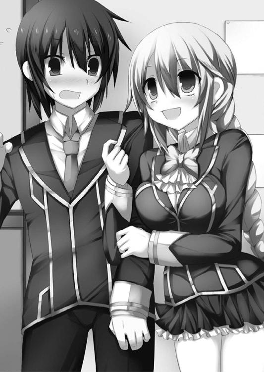
「......わたしの夏海に何してるのかな？ かな？」
ゴゴゴゴゴ......。
そんな擬音が実際に聞こえた気がした。
振り返ると、真菜が殺気もあらわな形相で汐をにらみつけている。
「ん、どうかした？ さっき話した通り、真菜ちゃんも一緒だよ」
「ねえ、汐先輩。パトロールにいく前にちょーっとわたしに付き合ってくれませんか？」
「待てよ、真菜。放課後はすぐみんなで──」
「付き合ってくれませんか？」
夏海の言葉を遮り、真菜がさらに前へ出る。
すさまじい眼光に背筋がゾクリとなった。
一方の汐はその視線を平然と受け止め、いつも通り爽やかに笑う。
「？ よく分からないけど、いいよ」
「お、おい、真菜どういうつもりだよ」
「ただでさえ本条さんがいるのにこれ以上ライバルが増えるなんて冗談じゃないよ夏海はわたしのものなんだから......そうだよ、わたしだけのものなんだから誰にも渡さないんだから出る杭は打たなきゃライバルがみんないなくなれば夏海はわたしだけのものでいてくれるもん、うふふふふふふふふふふふ」
「真菜？」
「うふふふふふふふふふふふふふふふふふふふふふ」
「おーい......？」
「うふふふふふふふふふふふふふふふふふふふふふふふふふふふふふふふふふふふふ」
なんだか、とてつもなく不穏な気配を感じる夏海だった。
──二十分後、なぜか夏海と汐は武道場に連れてこられた。
祭礼学園には体育館と武道場が一つずつ校舎の向かいに設置されていた。
武道場は放課後になると、主に剣道部と柔道部の練習に使用される。
「なあ、真菜。他の部員の邪魔になるしさ、やめたほうがいいんじゃ......？」
「うるさい。夏海は黙ってて」
剣道の防具を身につけた真菜は、頑として聞かない。
夏海と真菜はともに剣道部所属だ。
特に真菜は、県大会で優勝するほどの実力を持つ女子剣道部の二年生エース。
明るい性格と試合のときの凛々しい姿があいまって、女子部員からの人気が高い。
下級生からは『お姉さま』と慕われているほどだし、噂によると、女子部員から告白されたことも一度や二度ではないらしい。
「用意できたよ、真菜ちゃん」
汐のほうもすでに防具を借りて着替えていた。
（なんで剣道対決になるんだ？ わけが分からないよ......）
夏海は呆れた気持ちでため息をついた。
一緒に戦う以上、実力を見ておきたい、と言い出したのは真菜だった。
汐はそれを快諾し、なぜか剣道で二人が戦うことになったわけだが──。
剣道部のエースなのだから、普通に考えれば彼女の圧勝だろう。わざわざこんな勝負を提案した真菜の真意が今一つ分からない。
二人の美少女は互いに竹刀を手にし、三メートルほどの距離を置いて対峙した。
部員たちが何事かと遠巻きに見つめる。
「手加減しませんからね、先輩。これは女同士の勝負。わたしが勝ったら、二度と夏海にはちょっかい出さないこと」
剣道の面の下で、真菜がつぶらな瞳をぎらつかせた。完全に本気モードだ。
「汐さん、何も無理に付き合わなくても......」
「んー、実力を見たいっていうのはもっともだし、別にいーよ。それにボクも体動かすの、好きだしね」
一方の汐はのほほんとした調子。
夏海はそんな二人を交互に見ながら、
「本当にやるのか？」
「いいから。合図してよ。どっちが夏海にふさわしい女か、ここで決着をつけるんだから」
真菜がじろりとにらむ。
はあ、とため息混じりに夏海は片手を上げた。
対峙する二人の魔王候補を交互に見つめ、手を振り下ろす。
「──始めっ！」
合図と同時に動いたのは真菜だった。
だんっ！
勢いよく床を蹴り、一足飛びに汐の間合いへと飛びこむ。
真菜の竹刀が大気を切り裂き、唸る。
上段からの片手面打ち──。
夏海でさえも受けきれるかどうか、という強烈な一撃だ。
炎のように激しい打ちこみを、しかし汐は流水を思わせる緩やかな防御でいなしてみせた。さらに二撃、三撃。
一連の打ちこみを凌いだところで攻守が入れ替わり、今度は汐の攻撃。フェイントを交えた巧みな攻撃を、真菜は激しい竹刀捌きで弾き返す。
打っては払い、突いては避ける。
両者はめまぐるしく動きつつも、互いに決定打を与えない。
「お姉さま、すてき！ あー、でも富士那先輩もかっこいい！」
女子部員たちが歓声を上げた。
（二人とも、すごい）
夏海は感嘆の眼差しでその攻防を見つめた。
単純に剣の実力だけなら、真菜はもちろん、おそらく汐も彼より上だろう。
静と動──対照的な二人の剣技は、ともに女子校生のレベルをはるかに超越していた。
「はあ、はあ、はあっ」
真菜は荒い息をついて竹刀を構え直す。
対する汐は息一つ乱していない。
「......お、思ったより......ぜいぜい......やりますね」
「ふうっ......真菜ちゃんこそ。こっちは凌ぐだけで精いっぱいだよ」
「いちおう言っておきますけど、まだ本気じゃないですよ、わたし」
「あれ、その割には息上がってるよ」
「き、気のせい......はぁ、はぁ......じゃない、ですか？」
真菜もたいがい負けん気が強いよなぁ、と夏海は内心で苦笑する。
「夏海は渡しませんからね」
「ボクと夏海くんはそういうのじゃないってば。ただちょっと弟に似てるから可愛いな、って思ってるだけ」
「えっ、弟......？ なんだ、そっか......あはは、早く言ってくださいよ」
「真菜ちゃんが一人で突っ走ったんじゃない」
短い沈黙。
次の瞬間、二人の少女はどちらからともなく面を外して破顔した。
「ちょっとは認めてあげてもいいですよ、汐先輩のこと」
「ボクもできれば真菜ちゃんとは戦いたくないね」
がっちりと握手をする二人の美少女。
タイプは違えど、ともに剣を志す者同士──こうして死闘を繰り広げたことで、百万言の会話を交わす以上に理解を深めることができたのだろうか。
今ここに奇妙な友情が生まれた！
「......なんなんだ、このベタな展開」
夏海は呆れ気味につぶやいた。
まあ、仲良くしてくれるならそれに越したことはない。
せっかくできた仲間なのだから。
単純で都合のよすぎる考え方だと分かっていても、二人の様子を見ていると希望が湧いてくる。魔王候補同士が分かりあえるきっかけになるのは、意外にこんな単純な出来事なのではないだろうか──と。
武道場での一件を経て、夏海は那々姫、真菜、汐とともに駅前の繁華街にやって来た。
時刻は夕方の五時前。そろそろ人の流れが増えてくるころだ。
「そういうわけでパトロールに行きましょう、汐先輩」
「うん。がんばろうね、真菜ちゃん」
にっこりと笑い合う真菜と汐。
まあ、これから一緒に戦っていくのだから、仲たがいしなくなってよかったと言うべきかもしれない。さっきまでいがみあって（というか、真菜が一方的に汐に絡んで）いたのが嘘のようだ。
四人で並んで繁華街を歩きだす。さすがにとびっきりの美少女が三人もそろっているだけあり、通行人たちから注目の的だった。
夏海に突き刺さる男たちからの羨望と嫉妬の眼差し。
（うう、なんか歩きづらいなぁ）
内心でうんざりしつつも、怪しい気配を探して歩き回る。
そんなふうにして一時間が過ぎたころ、
「それにしても、いつの間に仲良くなったの、あなたたち？」
那々姫が訝しげに二人を見やった。
「ふふふ、わたしたちは固い友情で結ばれたんだよ」
えへんと胸を張る真菜に、汐がにっこりとうなずく。
「そうそう、ボクと真菜ちゃんは友だちと書いて『まぶだち』なんだよ」
「あ、でも夏海はあくまでもわたしのものですから。取っちゃダメですよ、先輩」
「いつからあなたのものになったのよ。コレはあたしのよ」
那々姫がわざわざ見せつけるように夏海の腕に自分の腕を絡ませた。
（コレって......また俺のことを物扱いして）
「あ、ちょっと何してるのよ！ 夏海から離れてっ」
「フフン、あたしの使い魔をあたしがどうしようと勝手でしょう」
「......やっぱり、あなたとは決着つけないといけないかな？ かな？」
「魔王候補同士は戦う運命。戦わなければ生き残れない......！」
「え、ちょっと殺伐とした会話はやめようよ!?」
夏海が慌てて二人の間に割って入った。
いいかげん、彼女たちも仲良くしてほしいものだ。
汐はなぜか興味津々といった感じでそれを見て、
「あ、やっぱり二人は仲悪いんだ？ 修羅場？ これって、修羅場だね？」
「べ、別に修羅場じゃないわよ。それに魔王候補同士だもの、仲がいいほうが異常でしょう」
那々姫がフフンと鼻を鳴らした。
「たとえ表面上は仲良く見えることがあったとしても、しょせんは見せかけ。心の内ではどうやって相手を出し抜くか、どうやって裏切るか、どうやって殺すか──そんなふうに考えてる。そういう考えの候補者だけが生き残れる」
「そんなことないよ。ボクらは分かりあえると思う。もちろん許せないことをしている候補者だっているよ。無関係の人間を殺めて、道具に使って......そういうのは止めたい。だけど」
「夏海と同じなのね、あなたも。聞いていると苛々するわ」
那々姫が汐をにらむ。
「なんだよ、もう仲間割れか？」
ふいに嘲笑が響いた。
人ごみを外れた路地裏に、夕日を背にたたずむ三つのシルエットがある。
秀麗な美少年、スーツ姿のサラリーマン、ボディコン衣装の美女──。
魔王衣装をまとってはいないが、いずれも見覚えのある姿だった。
《煌鳳翼騎士団》の魔王候補と使い魔。
夏海はごくりと息を飲み、彼らに近づいた。左右に目を走らせて地形を確認する。
ビルとビルに挟まれた路地裏。
決して広くない場所だが、剣を振り回せないほどではない。それに大通りから一本外れたここなら、注意して戦えば巻き添えを出さずに済みそうだ。
「また会えたわねぇ。今日こそはお姉さんのものしてあげるわぁ、坊や」
京香がねっとりとした視線を夏海に向ける。
「ちょっと。いやらしい目で夏海を見ないでよっ」
那々姫が不快感をあらわに魔王候補の美女をにらみつけた。
「あらあら、焼き餅なんて可愛らしいわ。なんならあなたも混ぜてあげましょうか？ アタシは女相手でもイケるわよぉ」
「うっ......」
嫌そうな顔で後ずさる那々姫。
「困った顔も可愛いわねェ......ふふ、お姉さんと楽しまない？ 女同士のエッチって奥が深いのよ。アタシなしじゃいられない体にしてあげるわよぉ。ああ、考えただけで濡れてきちゃう」
ボディラインもあらわな服の上から両手を這わせ、胸元や股間を自らまさぐる京香。そのまま自慰でも始めかねない勢いだ。
全身から強烈なセックスアピールを発散する魔王候補を、那々姫はキッとにらみつけた。
「男も女もおかまいなしってわけ？ この女、正真正銘の色情狂ね......！」
「ヘンタイだね......服装もなんかエッチな感じだし」
その隣で真菜が顔をこわばらせる。
「あら、初々しい反応ねぇ。ひょっとして、まだバージン？ ふふ、ますますお姉さんが気持ちいいこと教えてあげたくなっちゃうわねぇ」
唇の隙間からチロリと妖しく舌を出す京香。
「い、い、いきなり何言い出すのっ。わたしは、そのっ、だから、だって、初めては......夏海のために......あの、取って......」
「ちょっと三瀬さん、今そういう話してる場合じゃないでしょう」
「だ、だ、だって......」
真菜が恥ずかしそうにモジモジと両手の指を組み合わせる。
「いつまでもエロトークしてんじゃねェよ。触媒もそろえたし、こっちの計画は手順通り......後は仕上げだ。さっさとゲームを始めよーぜ」
カッ！
紫と白の魔力光が弾け、二人の魔王候補......京香と田原崎の衣装が変化した。
京香は凹凸の激しい肉感的な体つきを申し訳程度に覆った、妖艶なランジェリーを思わせるコスチューム。
一方の田原崎はＲＰＧに出てくる僧侶や司祭を彷彿とさせる純白のローブ姿だった。
魔王衣装──魔王候補が自らの魔力を物質化して創り出した防護服だ。
未怜は田原崎が魔力で生み出した鞭を受け取り、嗜虐的な笑みを浮かべた。
「ゲームだって？」
「《黒き創世》って名前の、な。相手を騙したり騙されたり。手を組んだり裏切ったり。しかも人間をはるかに超えた力で暴れまわることができるんだぜ。こんな楽しいゲーム、他にないよなぁ。へっへっへ」
中学生らしい無邪気な童顔に、罪の意識は感じられなかった。
人殺しをゲームだと断じる少年に、夏海は何度も首を横に振る。
「違う。ゲームなんかじゃない。こんなの、ただの殺し合いだ」
「だから殺し合うゲームだっての。おにーさん、オレの言ってることちゃんと聞いてる？ ったく、いい子ぶりやがってよぉ」
馬鹿にしきった顔でわざとらしくため息をつく未怜。
「だったら、俺がお前たちを止める。戦いなんてやめさせてやる」
隣の那々姫に目配せすると、相棒の少女はこくんとうなずいた。
祭礼学園のブレザーが夢魔を思わせる衣装に変化。右手から赤光が弾け、長大な剣を具現化させる。
魔剣レーヴァテイン。
那々姫から受け取った愛用の剣を八双に構えた。
「へえ、どうやって？ 止めるって殺すのかよ？ それじゃあ殺し合いと一緒だよなぁ？」
「戦えなくすればいい。殺さなくても、それなら──」
「あんまり自惚れないほうがいいぜ。戦闘力だけを無効化する、なんてのは実力差がかなりある場合にしか取れない戦術じゃん。一昨日オレたちに殺されそうになったこと、忘れたわけじゃねーよなぁ？ ん？」
未怜の構えた紫の鞭が、バチッ、バチィッ、と表面から緋色の稲妻を弾けさせた。
相手の武器のほうがレーヴァテインよりも間合いが長い。
距離を詰めて戦うのがセオリーだが、相手の鞭は五つに分身する能力を持っている。やみくもに突進しても、前回と同じく返り討ちだろう。
「真菜と汐さんは援護を頼む。その隙に俺がヤツを叩く！」
叫んで地を蹴る夏海。
「させないわよぉ」
にやりと笑った京香の足元から可愛らしい子猫が走り抜けた。
ファンシーな外見とは裏腹に、強力な戦闘能力と変幻自在の体を併せ持つ動物タイプの使い魔──《千変万化》。
黒い壁のように変化した使い魔が、夏海の進行方向に立ちはだかる。
「そっちこそ引っこんでてよね。夏海はわたしが守るんだからっ」
真菜の全身から魔力の輝きが弾け、タンクトップにスパッツ、手甲と足甲というデザインの魔王衣装姿に変わった。
「舞え、《桜花光芒》！」
桜の花を模した髪飾りが空中に射出され、無数の花弁となって分裂。
３３３機の子機が路地の間を飛び回る。
真菜の使い魔は物質タイプ。普段から身に着けている髪飾りに、その魂を宿していた。
そして物質タイプの使い魔は、装備した魔王候補がその力を振るうことができる。
《砲撃型》を操る真菜ならば遠距離射撃を。
《双襲型》を手にした汐ならば人間を超えた白兵戦能力に加え、同じく遠距離射撃を。
使い魔を装備することで、本来なら戦闘能力を持たない魔王候補は屈強の戦士へと変貌する。
「全方位射撃！」
降り注ぐ無数のレーザーがヘパイストスに撃ちこまれた。
決して広くないこの場所で、全方位の射撃から避けるすべなどない。直撃とともに轟音が鳴り響いた。
「えっ......？」
しかし、戸惑いの声を上げたのは真菜のほうだ。
ヘパイストスの体はまるでゴムのような性質を持っているのだろう。魔力のレーザーはその体表を窪ませこそするものの、貫くことはできない。
ぶよんっ、と間抜けな音とともに、すべてのレーザーがあっさり跳ね返された。
「使い魔には相性っていうのがあるのよ、お嬢ちゃん。あなたの使い魔はアタシの子猫ちゃんには通用しないわぁ」
「ボクもいるってこと、忘れないでよね！」
艶然とほほ笑んだ京香に、今度は汐が叫んだ。
ポケットから取り出したミニチュアサイズの双剣が、それぞれ武器サイズの長剣と細剣に変わる。同時に、制服も魔王衣装へと──肌もあらわなビキニアーマー型の黒甲冑をまとい、背中に赤いマントをたなびかせた。
「《斬天剣》《尖空刃》──砲撃形態！」
両手に構えた剣がそれぞれ銃の形に変化し、赤と黒の光弾を吐き出した。
──しかし、結果は同じ。
先ほどの真菜と同じく、ゴム状の体を貫くことはできず、跳ね返されてしまう。
「ふふ、何回やっても同じことよぉ」
「まだまだぁっ」
汐はなおも左右の光弾を連発。
確かにヘパイストスの体を切り裂いたり、貫くことは容易ではない。
が、光弾の爆圧そのもので不定形の魔物を後退させることはできる。
「夏海くん、今っ！」
ヘパイストスが退いてできた道を、夏海は一直線に駆けた。
「近づけさせるかよっ、唸れ、《蠱毒の旋鞭》！」
五つに分裂した鞭が襲いかかる。
「くっ──」
夏海が剣を掲げて防御態勢を取ったところで、上空から無数の光が降り注いだ。真菜の援護射撃だ。
次々と放たれるレーザーが五つの先端部を一つ一つ撃ち落ちし、消し飛ばす。
「ちいっ、あの女も厄介な使い魔を！」
未怜が忌々しげに舌打ちし、大きく跳び下がった。
先端が消失した鞭はその名の通り蛇のようにのたくり、淡い輝きとともにあっという間に再生する。
「自己修復能力......」
「オレのハイドラは不滅でね。何百万回千切れても、何千万回消し飛ばされても、そのたびに蘇る。そして最後には敵に食らいつき、切り裂き、殺す」
未怜は自慢げな顔で笑った。
「......殺すなんて、簡単に言うなよ」
夏海がぎりっと奥歯を噛みしめる。
「なんの関係もない人間を傷つけたり、殺したり、恨みがあるわけでもない相手と戦ったり──そんなの、おかしいよ。戦う必要なんてないじゃないか！」
「必要？ はっ、ズレたこと言ってんなよ」
必死に投げかけた言葉に対し、返ってきたのはあからさまな嘲笑。
「オレは楽しいから戦ってんの。誰が傷つこうが、死のうが知ったことじゃねェ。だいたい魔王候補の戦いは殺すか殺されるかだろ？ スリルがなくちゃ、このゲームは楽しめねーじゃん」
「殺し合いが楽しいだって!?」
「またいい子ぶるのかよ。いいかげんウザいんだよ、テメェ」
分かっていたことだが、やはり説得は難しいようだ。
だからといって諦めるつもりはない。
諦めたくも、ない。
戦いを止めるために、夏海はこの戦いに身を投じているのだから。
（まずは、相手の戦闘力を奪う）
レーヴァテインを握り直した。
「真菜、汐さん、もう一回援護頼むっ」
夏海は真菜と汐にそう呼びかけると、地面を蹴って突進した。
白兵型使い魔ならではの、超常の身体能力──音速機動。
コンマ数秒のうちに、未怜に肉薄する。
「任せて！」
背後からがしゃりと機械的な変形音がした。
汐が武器を剣から銃へと変形させたのだろう。赤と黒の光弾が虚空を切り裂き、さらに上空からは真菜の魔力レーザーが降り注ぎ、派手な爆炎をまき散らす。
「くっ」
京香がヘパイストスを防御壁に変形させ、それらを防ぐ。
黒煙で視界が一気に悪化した。
二人に敵を牽制してもらい、その隙をついて夏海が剣を打ちこむ──。
即席のコンビネーションだ。
（殺さずに止めなきゃ）
なんとか峰打ちを食らわせ、相手の戦闘能力だけを奪うつもりだった。
しかし、一歩間違えれば相手を殺してしまうこともありえる。
こみ上げる緊張を押し殺し、剣を握り直す。
刹那、背中に熱い衝撃が走った。
「えっ......!?」
何が起きたのか分からず、夏海は呆然としたままつんのめる。
どさっと地面に倒れると同時に、背中一面に広がる熱さが、あっという間に激痛へと変わった。
背後から、撃たれたのだ。
「が......ああっ......」
起き上がることもできず。うめき声をもらす夏海。全身の神経を焼き尽くされたかのような苦痛だった。
未怜と京香がニヤニヤと笑っている。防御壁に変形していたヘパイストスがふたたび猫の姿に戻り、主の足元に駆け寄った。
敵の位置はいずれも夏海の前方だ。後ろから攻撃されることはありえないはず。
（何が起こったんだ......!?）
夏海は首だけを無理やりねじ曲げて後ろを向いた。
黒煙がゆっくりと晴れ、かすむ視界の端にすらりとしたシルエットが映る。
風になびく金色の髪。
どこまでも澄んだ蒼い瞳。
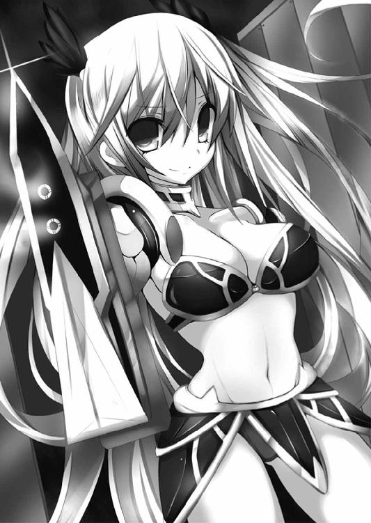
「どうして──」
夏海は愕然と目を見開く。
銃形態のエクスカリバーを構えた汐が、冷笑を浮かべていた。
「まだ気づかないの？ 鈍いのもここまでくると尊敬に値するよ、夏海くん」
今までとは別人のように酷薄な笑みを浮かべた汐が言い放った。
「まさか、君は......ぐ、うっ」
言葉を発しただけで背中から四肢に向かって焼けるような痛みが弾ける。
息をするだけで意識が千切れそうだ。
「夏海......なんて、ひどい怪我」
傷口を目にしたのだろう、那々姫が悲痛な声でうめいた。
「俺たち......を、だまし......」
「ここまであっさりと引っかかってくれるなんて拍子抜けだよ。キミ、そんなんでよく今までの戦いを生き延びてこられたね」
酷薄な冷笑があからさまな嘲笑へと変化する。
「ボクは《煌鳳翼騎士団》序列二位──富士那汐」
汐があらためて名乗り直した。
「ボクたちがやろうとしている儀式には手順が決まっているんだ。必要な触媒をそろえたうえで、核となるキミを神殿に迎え入れる必要がある──ベストのタイミングで襲撃するために、一芝居を打ってキミたちの側に潜りこんだってわけ」
──触媒もそろえたし、こっちの計画は手順通り......後は仕上げだ。
先ほどの未怜の言葉が脳裏をよぎった。彼らの計画の中には、汐が味方のふりをして夏海たちを騙すことも含まれていたのだろう。
「ううっ......」
血を失いすぎたのか、あるいは致命的な傷を受けてしまったのか、徐々に視界がかすんでいく。もはや、ぼんやりとしたシルエットにしか見えない汐は、くすくすと笑いながら説明を続けた。
「未怜くんたちに動いてもらって、今日ようやく触媒の数がそろったんだ。だから京香さんたちにこっそり連絡を取ったうえで、キミたちをこの場所におびき寄せた」
「ぜ、全部嘘だった......うう、くっ......のか。俺の同情を......はぁ、はぁ......ひ、引くために......」
「弟のことだけは本当だよ。キミが弟に似ているっていう話も、ね」
汐が悲しげに目を伏せた。
「ボクは魔王の持つ万能の力で弟を生き返らせてみせる。それが戦いに参加した理由」
「信じてた......のに......仲間、だっ......て」
「甘っちょろいこと言わないでよ。仲間？ 信じてた？ バカじゃないの？」
ゾッとするほど冷酷な言葉。
「この戦いは裏切り、騙し、相手を出し抜くことが基本でしょ？ ボクの真意を見抜けなかったキミが愚かなだけだよ」
夏海の中で暗い情念が燃え上がる。
許せない──。
薄れていく意識を無理やり揺り起こし、レーヴァテインを杖代わりによろよろと立ち上がった。力のない足取りで騎士少女に向かっていく。
「無駄だってば」
汐は銃形態のカリバーンを構え、黒い魔力弾を放った。
ドガァァァッ！
すさまじい衝撃を正面から浴び、ふたたび吹き飛ばされる夏海。
起き上がれない。もはや四肢に力が入らない。
「ふん、いいザマだね、夏海くん」
汐は夏海の傍までやって来ると、髪をつかんで無理やり上体を引っ張り上げた。爛々と輝く碧眼でまっすぐ彼を見つめる。
「魔王候補が死ねば、契約している使い魔も死ぬ。だけど使い魔が死んでも、契約している魔王候補が死ぬことはないんだ。だから邪魔なキミには死んでもらう。ボクたちの目的は那々姫ちゃんだけだからね」
暴力への歓びに満ちた眼光に、背筋がゾクリと粟立った。
先ほどまでの汐とは違う。別人のようだ。
あるいは、こちらが本性なのか。
「よ、よくも夏海を！」
真菜がポニーテールを振り乱して叫んだ。
「──雑魚め」
汐は冷徹に鼻を鳴らし、夏海の髪を離す。
どさり、と力なく地面に崩れ落ちた彼を見向きもせず、エクスカリバーとカリバーンを構え直した。
「うああああああああっ！」
真菜が絶叫とともにビットを操り、汐たちに一斉射撃を浴びせる。
上空から降り注ぐ３３３本の光条。
かつて夏海や千歳たちを追いつめた、逃げ場のない全方位射撃だ。
「無駄だよ。《斬天剣》《尖空刃》──斬撃形態」
しかしそのことごとくを、汐は素早く剣形態に戻した双刀を操り、弾いてみせる。
「《砲撃型》の使い魔に準ずる攻撃射程を備えながら、《白兵型》の使い魔に近い運動能力をも併せ持つ──それが《双襲型》だ。飛び道具でも接近戦でも、キミの戦闘能力じゃボクには届かない」
冷徹に告げた汐が地を蹴り、突進した。
「本来なら近距離でも遠距離でも《白兵型》や《砲撃型》に一歩劣る《双襲型》だけど、ボクは違う。何人もの魔王候補の魂を吸収して──」
「くっ......」
慌ててバックステップする真菜。
「どんな間合いでもアドバンテージを得られるだけの力を手に入れたんだ！」
ギンッ！
大気が、悲鳴を上げて軋む音。
亜音速にまで達した汐が瞬く間に真菜の懐へ侵入する。
《白兵型》に匹敵するほどの......あるいは、凌駕するほどの高速機動。
真菜がビットを展開し、迎撃する間もなく──。
ザシュッ！
十字に振り下ろされたエクスカリバーとカリバーンが彼女の体を切り裂いた。
鮮血とともに吹き飛ばされる魔王候補の少女。
「真菜ぁっ！」
夏海は背中の激痛も忘れて絶叫した。
真菜はうつ伏せに倒れたまま微動だにしない。
あふれ出した鮮血が地面に広がっていく。
四肢がぴくぴくと痙攣しているところを見ると、かろうじて息はあるようだった。
しかし出血量から見ても、決して軽い傷ではないはずだ。
「悪く思わないでね、真菜ちゃん」
右手に持った長剣を振りかぶる汐。
「や、やめろぉぉぉぉぉぉぉぉぉぉぉっ！」
夏海はふたたび絶叫した。
力が入らない体で無理やり這いずり、真菜のもとへ向かう。
「心配しなくても、キミもすぐに殺してあげる」
振り向いた汐が蒼い瞳をスッと細めた。
「──壱の弾《カイーナ》」
突然響いた声とともに、茜色の夕空を青い輝きが切り裂く。
「これは!?」
ハッと汐の動きがこわばった。
頭上という絶対的な死角からの、完全に虚を突いた一撃──。
しかし汐は振り仰ぎざま二刀を振るい、あっさりと光弾を弾き散らす。
「千歳さん、百香ちゃん......！ どうしてここに!?」
走り寄ってくる霧雨姉妹に、夏海は驚きの眼差しを向けた。
「まったく、こんなことだろうと思った......撃て、百香」
「うん、お姉ちゃん。弐の弾《アンテノーラ》」
今度は、手裏剣状の魔弾。
空中で何度もカーブし、複雑な軌道を描いて迫る光弾を、
「そんなものでっ！」
汐は銃形態に変形させた二刀から魔力光を放ち、迎撃した。
グゴォォッ......！
弾ける爆光が、夕闇を紅蓮に染める。
「今度はキミたちが相手ってわけ？」
「簡単に凌げるほど甘くはないぞ、私たちの魔弾は」
千歳が右手でまっすぐに汐を指さした。
それが合図になっているのか、素早くボウガンを構え直した百香が魔弾を放つ。
千歳が指示した方向に。寸分の狂いもなく。
姉妹ならではの、息の合った連携──。
カイーナ、アンテノーラ、トロメア。
防がれても防がれても、霧雨姉妹は新たな魔弾を放ち続けた。
「ちいっ、次から次に──」
汐は舌打ち混じりに光弾を剣で防ぎ、あるいは銃撃で撃ち落としていく。
が、完全に防戦一方だ。矢継ぎ早の攻撃で反撃の隙を与えない。
「さすがは百香だ。このまま一気に押しきれ」
「うん、お姉ちゃん」
百香がボウガンから新たな魔弾を放つ。
「きりがない......ここは生贄の確保が先決だね」
汐は剣を振るってその魔弾を防いだ後、いきなりバックステップした。
「ぐっ......!?」
そのまま那々姫の傍まで走ると、みぞおちに当て身を食らわせる。
がくり、と力の抜けた体を片手で支え、
「少し眠っていて、那々姫ちゃん。ボクらの神殿まで案内するよ。──京香さん」
「了解よぉ」
京香の足元から駆けだした黒猫が、巨大な壁に変形した。
「何!? これは──」
千歳たちの視界が完全に塞がれる。
汐も、京香や未怜たちも壁の向こうだ。
「百香、撃て！」
「参の弾《トロメア》」
長大な槍の形をした魔弾が、黒い壁を直撃する。
さすがに巨大な壁は、一撃では破壊できない。
さらに二撃、三撃──。
四撃目で使い魔の変身した壁は砕け散り、ふたたび視界が開けた。
「なっ......!? しまった！」
その向こうに広がる光景を目にして、千歳が痛恨の声を上げる。
響き渡る、派手なエキゾーストノイズ。
ちょうど汐たちが那々姫を連れて、あらかじめ用意してあったらしい乗用車に乗りこむところだった。
さらに、先ほどの攻撃で砕け散った壁は、破片が寄り集まってふたたび黒猫の姿へと戻る。猛スピードで車まで走り、飛び乗った。
「に、逃がすか」
霧雨姉妹が追撃の魔弾を放つ前に──。
汐たちを乗せた車は急発進し、あっという間に視界から消えていった。
富士那汐は日本人の父とスウェーデン人の母の間に生まれた。
金糸を思わせる美しい髪も、知性と気品にあふれた顔立ちも、貴族の出だという母親の容姿を色濃く受け継いだもの。
明るい性格の父と優しく穏やかな母、そして恋人同士と間違われるほど仲が良い弟、港に囲まれ、汐は幸せに暮らしていた。
──あの魔物が現れるまでは。
一年近く前の出来事だというのに、汐は今でも、まるで録画映像のように鮮明に思いだすことができる。
田園地帯の小さな町が燃え盛り、人々が阿鼻叫喚に包まれる様が。
迫りくる黒い影が、逃げまどう人々を一人、また一人と毒牙にかけていく様が。
そして──目の前で父が、母が、さらには最愛の弟までが襲われる様が。
当時、魔王候補として目覚めたばかりの汐は使い魔たる双剣を振るい、懸命に戦った。
しかし《不死の魔姫》は無敵にして不可侵。家族を失い、命からがら逃げだした汐は、やがて自分と同じ魔王候補たちの一団と出会う。
彼らはみずからを《煌鳳翼騎士団》と名乗った。
一人では、あの怪物に勝つことはできない──。
そう考えた汐は、彼らと行動をともにすることにした。
あれから一年。何人かの仲間を失いつつも、ようやくあの怪物を打倒できる道筋を見出した。
《不死の魔姫》の妹を生贄に捧げ、最強の武器を生み出すのだ。
（あと少しだよ、港。もうすぐキミの仇を──）
そのための鍵を握る真紅の髪の少女を見やる。
先ほどの戦いの後、汐たちは那々姫を連れ、市内の中心部にあるオフィス街へと向かっていた。
今は京香が運転する車の中。
助手席には未怜が、後部座席には汐と田原崎、そして使い魔《ヘパイストス》が変形したロープと猿ぐつわで拘束された那々姫が乗っている。
助手席から未怜の愉快げな声が聞こえた。
「いやー、あいつらのポカンとした顔、見た？ サイコーだよな。ここまではまってくれると、こっちも嬉しいぜ。ホント、サイコーのゲームだよ。《黒き創世》って」
「ふふ、汐ちゃんのこと、すっかり味方だって信じこんでたみたいだものねぇ」
運転している京香が同調する。
「目的のためには手段なんて選んでいられないよ。ボクたちのやっているのは戦いなんだ。騙されたほうが悪い」
汐がくすくすと笑った。
「儀式の触媒となる死体のパーツを集め終わったタイミングで、那々姫ちゃんを奪取する──疑いもせずにボクのことを信じてくれたおかげで、首尾よく計画を達成できたよ。夏海くんの人の好さに感謝だね」
ただ、最後に霧雨姉妹が乱入してきたことだけは計算違いだったが。
おかげで夏海や真菜のトドメを刺し損ねてしまった。
「あの子......夏海くんだったかしら？ 打ちひしがれた顔も可愛かったわぁ。やっぱり若い男の子っていいわねぇ。おねーさんが慰めてあげたいくらい」
「だから、テメェは『おねーさん』なんてガラじゃねぇだろ、京香」
「あら、失礼ねぇ。これでもまだ──ふふ、年齢は内緒だけどね」
などと雑談を交わしているうち、目的地にたどり着いた。
汐たちは那々姫を伴い、車から降りる。
「ようこそ、那々姫ちゃん。ここがボクたちの拠点だよ」
目の前には暗い灰色をした廃ビルがそびえていた。
「随分と手ひどくやられたものだな」
沈みかけた夕日を背に、千歳が近づいてきた。腰まで届く流麗な黒髪が風になびく。
さらにその背には百香の姿もあった。
夏海は地面に這いつくばったまま、美貌の姉妹を見上げている。
「ぐ......う、うう......」
「しゃべるな。傷口が開くぞ」
千歳は倒れたままの夏海の傍にしゃがみこみ、傷を負った背中に手のひらを当てた。
青い魔力光がポウッと夕闇を照らす。
「あ......」
同時に痛みが嘘のように引いていった。千歳の魔力を受けて《白兵型》使い魔としての高い再生力を刺激され、みるみるうちに傷口が塞がっていくのが分かる。
千歳はしばらく治療を続けた後、今度は真菜のもとに行った。気絶している彼女の傷口に応急手当てを施す。
「三瀬の出血はひどいが、命に別状はなさそうだ。彼女には君のような高い回復力はないから、しばらく気絶したままだろうが......」
「どうして......ううっ、こ、ここに？」
夏海は大きく息を吐き出して千歳を見つめた。
まだ痛みはあるものの、なんとか話すことくらいはできそうだ。
「使い魔同士の魔力のぶつかり合いを感じたからな。これだけ派手にやりあっていれば嫌でも気づくさ」
千歳が長い黒髪をかき上げた。
「残念ながら敵には逃げられてしまったがね」
「汐さんは、敵の仲間だったんだ。すっかり騙されて......俺が、もっとしっかりしていれば......」
悔しさと後悔と、自分自身への苛立たしさと。
負の感情が混じり合って夏海の胸を焼く。
「君が生きているということは、本条もまだ無事だという証拠。最悪の事態には至っていない」
「那々姫はまだ生きてる......そうか」
千歳の指摘に、灼熱しきっていた思考が幾分冷静さを取り戻した。
魔王候補は他の候補に魂を奪われると消滅する。
そしてその候補と契約している使い魔もまた同じ運命をたどるのだ。
逆に言えば、夏海がこうして消滅していないということは、那々姫も魂まで奪われてはいないということ。
「それなら......那々姫を助けに行かなきゃ」
痛む体に鞭を打ち、よろよろと立ち上がった。
「待て、藍原」
「どいてくれ、千歳さん」
「そんな体で行っても返り討ちに遭うだけだ。それに、本条がすぐに殺されることはない。少なくとも──」
「うるさい、どけぇっ」
何ごとかを言いかけた千歳を押しのけ、夏海は走りだした。
と、ふいに背後で強烈な魔力が膨れ上がる。
「っ......!?」
考えるよりも先に、体が動いていた。
とっさに横へ跳んで転がる。
ゴウッ......！
つい先ほどまで夏海がいた地点を、青い光弾が通過していった。
霧雨姉妹の操る《魔弾の射手》。
千歳の傍には巨大なボウガンを構えた百香が寄り添っている。
「......なんのつもりだ」
「君を行かせるわけにはいかない。そんな体で行っても無駄死にするだけだ」
「那々姫が危険な目に遭うかもしれないんだぞ！ 放っておけるわけないだろ」
確かに那々姫はまだ生きている。
しかし命が無事だからといって、それで安心できるはずもなかった。
これから殺されるのかもしれない。あるいは命を奪われていないだけで、ひどい目に遭っているかもしれない。
「彼らの狙いを考えれば、今のところは──」
「うるさい！」
千歳の言葉を怒声で遮った。
「悪いけど時間がない。邪魔をする気なら力ずくでも押し通る」
言うなり、霧雨姉妹に向かって突進する。
《砲撃型》である百香のバトルレンジは遠距離だ。近距離の戦いに持ちこめば、夏海の敵ではない。
あまり手荒なことはしたくないが、今は緊急事態。場合によっては多少乱暴な手段も、やむを得ない。
まずは攻撃能力のある百香の動きを封じようと距離を詰める。
と、その眼前に千歳が立ちはだかった。
「うっ!?」
ぶつかりそうになり反射的に立ち止まろうとした瞬間、体が泳いだ。
千歳が夏海の腕を取り、前方にいなしたのだ。合気道か何かの技だろうか、体勢を崩された夏海はそのまま放り投げられた。
「がはっ......」
空中で一回転。背中から叩きつけられ、一瞬息が詰まる。
「魔王候補の私に使い魔の君が格闘であしらわれてどうする」
傲然と腕組みをした千歳が彼を見下ろした。
「く、くそ！」
夏海はカッと頭に血が上らせて立ち上がった。早いところ霧雨姉妹の戦闘能力を封じ、那々姫救出に向かわなくてはならない。
「っ──!?」
そのとき、背筋に嫌な予感が走り抜けた。
慌てて背後に跳びさがる。
ゴウッ......！
一瞬遅れて通過していく青い光弾。先ほど避けたはずのザミエルだ。
「かわしても追ってくるんだったよな」
忌々しい気持ちで舌打ちする。
三種類あるザミエルの光弾。壱の弾《カイーナ》は対象をどこまでも追いかけていく自動追尾弾だ。
武器があれば魔弾を弾き返すこともできるのだが、那々姫がいない今の夏海は丸腰だった。避ける以外に手段はない。
今度は頭上から迫るザミエルを見据え、
「うおおおおおっ」
霧雨姉妹に向かってふたたび走る。
避けてばかりでは、いつまでたっても距離を詰めることができない。
一発食らうことは覚悟のうえで、魔弾を無視して突進した。
「ふん、耐久力の高さに任せた力押しか」
千歳が腕組みをしたまま余裕の笑みを浮かべた。
「俺は那々姫を助けに行かなきゃいけないんだ！」
「愚かだな。......百香」
「うん、お姉ちゃん」
うなずいた百香がボウガンをまっすぐに構えた。
だが夏海は止まらない。
以前、戦ったときにザミエルの特性は把握していた。
「覚えてるぞ。確か魔弾は一発ずつしか撃てないんだよな」
頭上に光弾がある以上、百香は連続して魔弾を放つことはできないはず。
「それが愚かだというのだ」
千歳の口角がさらに吊り上がり、笑みの種類が嘲笑へと変わった。
「魔弾消去、次弾装填──」
頭上から光弾の気配が消える。
ボウガンにふたたび青い輝きが宿る。
「なっ......!?」
一発ずつしか撃てないのが魔弾の弱点。
ならば魔力を解いて最初に撃った魔弾をいったん消してしまえば、次弾を放つことができる──。
そう気づいた刹那、
「弐の弾《アンテノーラ》」
手裏剣状の光弾が正面から叩きつけられた。
爆音とともに、すさまじい衝撃で吹き飛ばされる。
焼けるような激痛が全身を駆け巡った。
「な......な......き............！」
薄れる意識の中、夏海の脳裏にパートナーの美少女の姿が浮かび、そして消えていった。
どうやらここは廃ビルの地下らしい。
立ち並ぶ無数の柱に、石畳が敷き詰められた床。
古代神殿を思わせる造りのホール──その最奥。
無数の燭台に照らされた薄闇の中、制服姿に戻った那々姫は立ったままで両手両足に鉄の枷をはめられ、四肢の自由を奪われている。枷には鉄の鎖が取りつけられており、背後の壁とつながっていた。
足元に描かれた巨大な魔法陣が淡い明滅を繰り返す。
「くっ......は、放しなさいよ」
無駄だと分かりつつも、なんとか拘束を解こうと両手足を揺すった。ぎし、ぎし、と鉄鎖が鈍い軋み音を立てる。
「あたしをどうするつもりっ......！」
「とっくに理解していると思ったけど。この間説明したでしょ」
目の前で、汐が冷淡な口調で告げた。
その背後には京香や田原崎、未怜の姿。
京香はうっとりとした顔で、未怜は嗜虐的な笑みを浮かべ、田原崎はどこかオドオドとした態度で──三者三様の表情を浮かべ、磔状態の那々姫を見つめている。
「キミは生贄に捧げられるんだよ、那々姫ちゃん」
汐がくいっと顎をしゃくった。
暗がりの中にほっそりとしたシルエットがあった。同時に漂ってくる、むせ返るような血臭。
（あれは......？）
怪訝に思って目を凝らす。
嫌な予感がした。
暗闇に目が慣れ、次第にその姿がはっきりと見えてくる。
「っ......！」
その正体を悟った瞬間、全身から血の気が引いた。
高さは三メートルほどだろうか、尖塔のようにそびえ立つモニュメント。
いびつな形をしたそれは、人の腕や足、女性の乳房、男性のペニス、ピンク色をした内臓、苦痛に顔を歪めた生首......いびつに切断された人体のパーツの一部が折り重なって作られている。
「な、何!? なんなの、これ......なんなのよっ......!?」
那々姫は恐怖にかられて叫んだ。
汐からの返答は冷笑だけ。
「《鮮血の磔架》──起動」
石畳の隙間から粘液状の何かが染み出してきた。
半透明の薄緑色をしたそれは足元にまとわりつき、白いニーソックスの上をゆっくりと這い上がってくる。
「魔粘体だよ。そいつは魔力が大好物でね。体表から染みこんで、キミの魔力を吸い取っていく。三日三晩かけてゆっくりと、ね」
「あたしの魔力を......？」
「スライムが吸い取った魔力はすべてそこに送られる」
汐が指さしたのは、目の前のグロテスクなモニュメント。
──キミは生贄に捧げられるんだよ、那々姫ちゃん。
先ほどの言葉が脳裏に反響する。
「今日ようやくそろえた九十九人分の死体──そのパーツを組み合わせて作った儀式兵装の外郭だよ。この中でキミの魔力は精錬され、三日三晩を経て《虚無の聖槍》へと姿を変える──」
「きゃあっ、な、なに、これぇっ!?」
避けようにも、両手両足を拘束されていては逃げようがない。
ドロドロとした粘体は太ももを這い、腹部や胸元、両腕にまで伸び広がって、首から下をほとんど包みこんでしまう。
「くうっ、ヌルヌルして気持ち悪い......うっ、ふ、服が──!?」
首筋や太ももに触れた粘体のあまりの気色悪さに、那々姫は眉を寄せてうめいた。
しかも粘体が触れた部分はうっすらと白煙を上げ、布地がボロボロに腐食し始める。
肌のほうはなんともないところを見ると、布だけを溶かす性質があるらしい。
「ふふ、那々姫ちゃんのストリップショーねぇ。こんなの見てたら、アタシ濡れちゃいそう。オマ○コがウズウズするわぁ」
那々姫は汐を、そしてニヤニヤと笑って事態を見守る京香たちをにらみつけた。
グラマラスな全身からまばゆい赤光があふれる。
魔力の、輝き。
次の瞬間、那々姫は制服姿から魔王衣装をまとった姿へと変身していた。
このコスチュームは魔力を物質化させたもの。制服とは比べ物にならないほどの強度がある。
「フフン、あなたたちなんかの前で肌をさらす気はないわ」
勝気に顎をしゃくり、汐を見下ろす那々姫。
「これならいくらスライムが這い回っても──えっ!?」
衣装の表面からジュウッと白煙が上がった。
「あっ......う、ああああっ......！」
どろっ......どろり......どろぉぉぉぉぉっ......。
頭頂を飾る二本のツノが、背中から伸びる皮膜状の翼が、腰にうねる尾が、スライムが触れた端から溶け落ちる。
さらに那々姫の肢体を覆う露出度の高い衣装自体も、粘体が這い回った跡に沿って煙を上げながらボロボロに腐食していく。
「そ、そんな──」
「無駄だよ。このスライムは魔力を吸い取るんだ」
嘲笑する汐。
那々姫は衣装の残り部分に魔力を集中し、防御力を高めた。
こんな連中の前で全裸を披露する気はない。囚われの身になった今、それがせめてもの矜持だ。
「うっ......ああっ......はぐぅ」
しかし全身を覆うヌルヌルとした粘液の感触はあまりにも不気味で、つい集中力を削がれる。
気を抜くと魔力が弱まり、連動して衣装の防御力も弱まってしまう。
「ダメ......見られ、ちゃ......ああっ」
無我夢中で逃げようとするが、四肢を鉄枷で拘束されていては体を左右によじることくらいしかできない。
がしゃ、がしゃ、と鉄枷とつながった鎖が金属音を鳴らす。
（逃げられない......ああっ）
衣装の半ばまでが溶け、メロンを縦に割ったような形をした見事な乳房も、パンと張りだした腰回りも、その大半があらわになった。
「ほらほら。もっとしっかり魔力を込めて防がないと、全部見えちゃうよ」
「これ以上は......くぅっ、うう......！」
必死で気張るが、腐食を完全に防ぐことはできなかった。
少しずつ肌の露出面積が多くなり、ぷるん、と内側から弾けるようにして右の乳房があらわになる。
スカートの丈がどんどん短くなって、太ももの付け根や淡い恥毛が今にも見えてしまいそうだ。
「あらあら、意外に頑張るわねぇ。並の魔王候補ならあっという間にオールヌードをさらしているところよ。大した魔力量だこと」
京香が感心したようにほほ笑んだ。
濃い紫色の扇子を片手に、ぱたぱたと扇いでいる。
（あたしを、どこまでもいたぶるつもりね）
余裕たっぷりの態度が癇に障った。
どろり......どろぉぉぉっ......どろり。
気色の悪い薄緑の粘体はなおもアメーバのように全身を這いながら、残りのコスチュームを完全に溶かし去ろうとする。
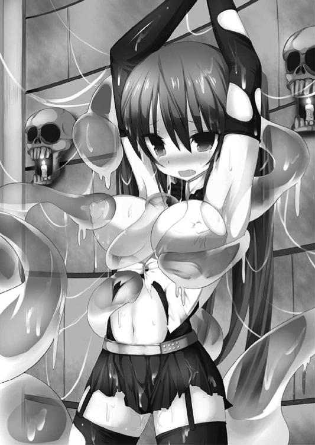
ふいに、急激な脱力感が那々姫を襲った。
「こ、これは......!?」
腕が、脚が、体全体が突然気だるさに襲われ、意識がぼんやりと薄れる。
「魔力は強いけど、コントロールが未熟そうだね。もう息が上がってるよ」
汐がにやりと笑った。
「っ......！」
確かに那々姫は強大な魔力を十分に制御できているとは言い難い。夏海と契約する前は、暴走気味の魔力に影響されて発情状態になってしまったこともある。
どくん、どくん、と心臓の音が異様に高鳴る。
スライムに対抗しようと魔力を使いすぎたのだ。
下腹部全体が甘く火照りだした。
女としての生々しい欲情が上昇を始めている兆しだ。
「目元がトロンとしてるよね。ふふ、楽しみだよ。その澄ました顔がどんなふうに変わっていくのか。一皮剥けばただの淫乱なんじゃないかな？」
「あ、あたしは淫乱なんかじゃ......！ 取り消し、なさ......はぁっ、はぁっ......」
「やせ我慢がいつまで続くか、見ていてあげるね。──やれ、スライム」
ただでさえ露出度の高い衣装は、スライムが這い回った跡に沿って無残に消失していき、まだ申し訳程度に乳房や股間を隠しているものの、ほとんど全裸同然にされてしまう。
乳首や秘所以外はほぼすべての肌をさらしている今の姿は、ある意味でオールヌードよりも扇情的だ。
（こんなヤツらに──）
悔しさで胸の奥が灼熱した。
もはや魔王衣装をもう一度具現化するだけの魔力は残っていなかった。
いや、仮に具現化させたとしても、今度は魔力の使いすぎによって今以上に欲情を呼び覚まされ、理性のほうが吹き飛んでしまうだろう。
こんな連中の前で、淫らにヨガり狂う姿を見せるくらいなら、全裸をさらしたほうがいくらかマシだった。
「いいザマだね」
汐が鼻を鳴らして真っ白な裸身に視線を送る。
スライムはあらわになった乙女の柔肌に直接まとわりついてきた。
「だ、ダメ、来ないで......ああっ、イヤ！」
女子校生ならではの張りと弾力を備えた豊満な肉丘の表面を、ヌルヌルとした感触が這い回っている。
おぞましさに肌が粟立った。
夏海の唇や指で愛撫されたときはあれほど幸せな気分に浸れたというのに、今は気色の悪さしか感じない。
それでいて乳房の頂点がゾクリと疼くような感覚は、悪寒などではなく──認めたくはないが、明らかに快感の類だった。
（あたし、魔物に嬲られて気持ちよくなってる......!? ち、違う、そんなことあるはずがないわ！）
内心の疑念を、理性で否定する。
スライムはこんもりと盛り上がった左右の膨らみにねっとりと絡みつき、乳房の球面やわずかに残った衣装に隠された乳首の周辺にまでまとわりついて、淫靡に濡らしていく。
「ふふ、那々姫ちゃんのおっぱい、すごくいやらしく光ってる。乳首もそんなに尖らせて......よっぽど気持ちいいんだね、この淫乱」
「あ、違っ......やぁぁぁっ......」
しかし那々姫の意志とは無関係に、豊満な双丘の頂点はジンジンと疼き、性悦の熱を増した。
衣装の下でひとりでに起き上がっていく薄桃色の乳首を見下ろし、悔しさに唇を噛みしめた。
「あらあら、乳首が勃ってきてるんじゃない？ 那々姫ちゃんったら、澄ました顔してエロいのねぇ」
嘲笑を送ったのは京香だ。
無理やりに性感を引き出され、その様子を逐一観察されている屈辱で、頭の芯がカッと燃え上がった。
（悔しい......こんな、いいようにされて......！）
「胸の次はお尻かな？ 体中のあらゆる場所から性感を引き出して、魔力を限界まで搾り取ってあげる。手を緩めるな、スライム」
汐は薄緑色の魔物に無慈悲な命令を下した。
ジュウッと白煙が上がった。
スカート状の衣装や股間を守る残りわずかな布地がどんどん腐食していくのを見下ろし、ゾッとなる。
「ダメ、これ以上は......ううっ」
やがて乳首と秘所を守る最後の衣装が水溶性の紙のように溶け消えた。とうとう敵の前で一糸まとわぬ姿にされてしまったのだ。
「へえ、ほんとに綺麗な体だね。乳首もアソコもピンク色だ」
汐が口笛を吹いて感嘆の声を上げる。
（ああ、こんな連中の前で裸を......！）
屈辱的なストリップに、那々姫は敗北感で打ちのめされた。
無防備になった下腹部をスライムが我が物顔に這い回る。ヌルヌルとした触感が双尻の辺りでのたくっていた。
「く、ああっ......イヤっ！」
尻の割れ目に沿ってヌルリとしたものが染みこんでいくのを感じ、那々姫は眉間にしわを寄せて叫んだ。
「ほらほら、もっとお尻に力を入れないと奥まで入っちゃうぞ」
「ふあぁっ、ダメ、そ、そんな場所っ......んん、くぅっ！」
これ以上侵入されないよう、臀部に力を入れて肛穴をキュッと閉じる。
が、アヌスを締めたところで完全に塞ぐことなど不可能だ。スライムは粘体という体の特性を活かし、わずかな隙間から侵入を開始した。
液体と固体の中間のような感触が肛門をじわじわと広げながら、内部に押し入ってくるのが分かった。
直腸の粘膜にくすぐったさにも似た心地よい疼きが広がる。
「あああ......あ、くぅぅ......何、これ、ぇ......あんっ！」
排泄の器官に魔物が侵入してくるおぞましさとは裏腹に、腹の奥がゾクゾクするような愉悦を意識しないではいられなかった。
「スライムにお尻を弄られて感じるなんて。いかにも清純派って顔なのに、意外とエッチなんだね」
「ふふ、分かってないわねぇ。こういう処女っぽいコのほうが実は淫乱な素質があるのよ。オマ○コもトロトロに濡れてるんじゃないかしらぁ」
京香が嬉しそうに口元を緩め、スライムにいたぶられる那々姫を見つめた。
薄くほほ笑んだ唇の下にある黒子がやけに蠱惑的だ。
「可愛いわぁ、ホント。肌なんてピチピチして......！ 儀式が終わったらおねーさんとベッドでたっぷり楽しみましょうねぇ」
「残念だけど、儀式が終わるころには魔力を吸い尽くされて干からびてるよ」
表情一つ変えずに告げる汐。
「簡単に殺されるわけには......う、くぅっ......い、いかないのよ、あたしはっ......！」
那々姫はキッとした顔で叫んだ。
そう、彼女はまだ《黒き創世》での目的を果たしていない。
姉をこの手で倒すまで、死ぬわけにはいかない。
それに何よりも──。
脳裏に浮かぶ、同級生の少年の顔。
「この期に及んで気が強いね」
汐はふんと小さく鼻を鳴らして那々姫を見返し、それから京香に視線を移した。
「亡骸でよければいくらでも可愛がればいい」
「ふふ、いくらアタシでも屍姦趣味はないわよぉ」
「好き勝手なこと。んっ......い、言ってぇ......はぐぅっ！」
浅いところを弄っていたスライムがヌルヌルと蠕動しながら、肛門の最奥にまで一気に潜りこんでくる。
乳房とアナルへの二重刺激──。
処女ではないが、まだまだ性的に初心な乙女にとって、拷問にも等しい責めだった。
アナルの奥深くまで押し入られても、スライムの体が柔軟なためか痛みはまったくなかった。腸粘膜を内側から押し広げられていく拡張感はあるものの、それは必ずしも不快なものではない。
ずるっ、ずるぅぅぅぅっ......ぬるり、ねとぉぉぉっ......じゅぷぅぅっ......！
夏海に弄られたときは、恥ずかしいのにどこか胸がときめくような陶酔を感じたが、今はただ気持ち悪いだけだった。
そう、気持ち悪くておぞましいだけだ。
なのに──菊穴から腸奥までを、ウネウネとした感触が出入りするのは、排泄の快感に似た快美を下腹部にもたらした。
（どうして......お尻、気持ちいい......!?）
腰の奥にこみ上げる甘痒い愉悦が初心な少女を戸惑わせる。
「やめて......！ やめなさいっ......！」
懇願の声は、自分でも驚くほど力が籠もっていなかった。
自分でも薄々と感づいていた。心の片隅で、肛門性感という未知の肉悦に対する好奇心と欲望とが顔を出しているのだ、と。
感づいていながらも、認めたくはなかった。
ゾクリと下腹や腰骨が甘く震え、内部から痙攣する。
「ダメ、これ以上、はぁっ......あうんっ」
おぞましい魔物によって絶頂まで導かれてしまう予感にうめき声を漏らした。
女として最大の屈辱が自分の身に迫っていることを悟り、グラマラスな裸体が激しくわななく。直腸の粘膜がひとりでに波打って止まらない。
ビクビクと細かい振動を繰り返す内壁をヌルヌルとした感触が通り抜け、心地よい摩擦感を染みこませた。
「ああっ、イイ！ イイのっ、うぐぅ、んっ！」
肛門の奥が甘痒い快感に浸され、熱い嬌声をこぼす。
もう耐えられない──。
理性が断末魔を上げると同時に、絶望と解放感の入り混じった奇妙な快感が脳天から爪先までを激しく貫いた。
「ダメ、こんなのって......ああ、イク！ イクうっ！ ふあぁぁぁぁぁっ......！」
魔物によってもたらされたオルガスムスによって意識を真っ白に塗り潰される。
信じられないほど鮮烈な絶頂感──。
嵐のような快感が初心な女体を荒れ狂わせた。
「はあ、はあ、はあ......」
那々姫は甘ったるい吐息を漏らし、オルガスムスの余韻に浸った。
心地よい痺れが下腹部に残留している。
つい先ほどまでは指一本入らなさそうに狭く窄まっていたピンク色の肛穴が、今ではぽっかりと開ききっているのが実感できた。
ごぽ、ごぽっ、と直腸に収まりきらなかったスライムが逆流し、丸いアナルから排泄物さながらにこぼれ落ちる。
「お尻を弄られてイッちゃうなんてね。あの女の妹らしく、キミも一皮剥けばだたの淫売だね」
「だ、誰が──ううっ」
汐の嘲笑にも言い返せなかった。
肛門への淫らな責めで達してしまったのは、まぎれもない事実だ。
ひく、ひく、とアヌスの皺の一本一本までが細かく痙攣しているのが、きっと汐たちにも丸見えのはず。
魔力を使いすぎて欲情が昂っていたとはいえ、一生の不覚だった。女としての自分の生理を呪わずにはいられなかった。
「許さない......から」
汐や京香をキッとにらんだ。
こらえきれない怒りと悔しさが涙となってあふれ、上気した頬を伝っていく。
たとえ囚われの身になろうと、バケモノにいたぶられようと、那々姫の意志は萎えていない。
それに諦めるのはまだ早い。
夏海が──那々姫のパートナーがきっと助けに来てくれる。
しかし、なおも肛門の内部で勢いよくのたくる軟体生物の感触に、思考がふたたびぼやけ始める。
ゾクゾクと直腸を駆け抜ける甘美な肉悦に、意識をさらわれていく。
（早く来て、夏海。でないと、あたし......）
奥歯を強く噛みしめながら、那々姫の視界は徐々に霞んでいった──。
「へっ、気絶しちまったのかよ、あの女」
「スライムに魔力と精気のあらかたを吸われたんだもの。むしろ発狂しないだけすごいと思うよ」
汐が微笑を浮かべる。
──磔にされた那々姫は、あれから数十分もの間スライムに嬲られ続け、とうとう気を失ってしまった。
可哀想だという気持ちがないわけではない。しかし目的のためには手段を選んでなどいられない。
これは戦いであり、殺し合いなのだ。
まして、敵はすべての魔王候補の中で最強と謳われるほどの相手。
「あらゆる物理・魔術攻撃をキャンセルする不死身の肉体を持つ《不死の魔姫》を殺すには......同じ血を引く那々姫ちゃんから創り出した武器しかない」
儀式兵装《虚無の聖槍》。
汐たちが引き起こした連続猟奇殺人事件によって集めた九十九人の人間の死体のパーツと、那々姫から三日三晩抽出した魔力とを撚り合わせ、特殊な儀式を施すことでこの儀式兵装は完成する。
「けど、儀式兵装って無敵の攻撃力なんだろ？ わざわざリーダーに渡しちまうのも、ちょっともったいねーよな」
両手を頭の後ろで組んで、未怜が小さく笑う。
「......どういう意味かな？」
「奪えばいいってこと。裏切ったり裏切られたりって展開のほうが、ゲームが盛り上がるじゃん」
「ボクはゲームのつもりはないよ。弟を殺した《不死の魔姫》に復讐する──そのためだけに騎士団に入ったんだ。それに裏切るつもりもない。いくら無敵の武器だからって、一人で立ち向かうには分が悪い相手だからね」
「ふーん、一人じゃ勝つ自信がないわけだ」
「ボクは万全を期すだけだ」
嘲笑にも動じず、汐が未怜を静かに見据えた。
「キミこそおかしなことは考えないほうがいいよ。ロンギヌスを奪ったとして──その後、リーダーに裏切り者として殺されない自信があるなら、好きにすればいいけどね」
「っ......！ そんな怖い顔すんなよ。冗談だって、はは」
一瞬表情を歪めた後、未怜は引きつった笑みを浮かべて首を左右に振った。
「まあアタシはなんでもいいけどねぇ。殺されたくないから、力のあるほうに味方するっていうだけで。まだまだ生きて、エッチも楽しみたいしね」
「エッチもっていうか、テメェはエッチできりゃなんでもいーんだろうが」
「そうよぉ。悪い？」
生粋の色情狂らしく、艶然と微笑する京香。
「アタシの願いは永遠の命と美貌を得て、世界中の男を性奴隷にすることだもの。魔王になれば男なんて選り取り見取りよぉ」
「ま、オレもこのゲームが楽しめりゃ、あとはどーでもいいけどな」
「はは、未怜くんらしいね......」
苦笑しているのは田原崎。
普段は地元の企業で商社マンをしている彼は、今もくたびれたスーツ姿だ。
このメンバーに囲まれると、どうにも影の薄い男だった。
実際、彼には戦いに勝ち残り、何か願いをかなえたいといった意志は感じられない。
使い魔である未怜に言われるがまま、行動しているようにさえ見えた。
（ま、ボクには関係ないか。今考えるべきなのは、儀式兵装を完成させることだけ）
死体を積木細工のように組み合わせたグロテスクなモニュメントに視線を向ける。
欲望のためだけに動く魔王候補の女。ゲーム感覚で戦う使い魔の少年。その傀儡に成り下がっている意志薄弱な魔王候補の男。
いずれも汐の眼中にはなかった。
「ううっ」
目を覚ますと、視界に可憐な美少女の顔が飛びこんできた。
「百香ちゃん......」
「っ......！」
オドオドとした態度で百香が目を逸らす。
小さな両手には濡れたハンカチがあった。どうやら魔弾の直撃を受けて気絶した夏海を手当てしてくれていたらしい。本来、他人に触れるだけで拒絶反応を起こす彼女が、いくらハンカチ越しとはいえ──。
「ご、ごめんなさい......痛かった、ですよね......？」
百香はどこか気まずげな顔だ。
その傍には、こちらは罪悪感など欠片も見せず、傲然と腕組みをした千歳の姿。
「いや、大丈夫......ううっ」
言ったとたん、肩や脇腹にずきりとした痛みが走った。
魔弾の直撃を受けた箇所は、使い魔としての回復力である程度治癒しているようだが、さすがにまだ痛みが強い。
心配そうな百香の視線に気づき、夏海は慌てて手を振った。
「あ、本当に大丈夫だよ。君が手当てしてくれてたんだよね？ ありがとう」
「はわわ、百香は、その、えっと......」
恥ずかしそうに顔を真っ赤にして、姉の背中に隠れてしまう百香。
千歳のほうは腕組みをしたまま冷然と見下ろす。
「謝る必要はない。あまりにも聞き分けがないから灸を据えただけだろう？」
「で、でも、藍原先輩は......百香たちを、助けてくれたよ......？」
百香がおずおずとした口調で反論する。先日真菜と戦ったとき、夏海が瀕死の霧雨姉妹を救ったときのことを言っているのだろう。
「......百香らしくないな。私以外の人間に関心を示すなんて」
「あ、えっと、その、ごめんなさい......百香は、べつに」
「ふふ、キツい言い方になってしまったかな。私こそすまない」
千歳は別人のように優しいほほ笑みを浮かべ、妹の頭を撫でた。
「うん、お姉ちゃん♪」
幸せそうに目を細め、姉のふくよかな胸元に顔を埋める。
「夏海......」
真菜がよろよろとした足取りで歩み寄った。
「真菜、大丈夫なのか？」
夏海の問いに、苦しげに顔を歪めながらもうなずく。千歳の手によって、胸元に白い包帯が巻かれていた。どうやら命に別状はなさそうだ。
「わたしは平気だよ。それより、本条さんは？」
「──敵に連れ去られた」
夏海は悔恨の表情でうめいた。
真菜にあらためて事情を説明する。
汐が裏切り、那々姫は捕らわれて連れ去られたこと。
霧雨姉妹が助けに入り、夏海と真菜は九死に一生を得たこと。
「《煌鳳翼騎士団》は強い。俺も真菜も歯が立たなかった」
ぎりっと奥歯を噛みしめた。
悔しいが、敗北は敗北として認めるしかない。
「本条那々姫は私の獲物だ。横からさらわれて黙っているわけにはいかないな」
千歳が小さくため息をついた。
「奪われたなら、取り戻す」
「協力してくれるのか」
「勘違いするな。本条は私が倒す。それだけだ」
ばさり、と長い黒髪をかき上げる千歳。
「わたしも戦うよ」
真菜が一歩進み出た。
「本条さんが殺されたら、夏海も死んでしまうんだよね？ そんなの、絶対ダメ。......恋敵がいなくなるのは歓迎だけど、しかたがないよね」
──最後に物騒な言葉が混じったような気がするが、とりあえずは聞き流しておく。
「共同戦線というわけだな」
戦闘要員は夏海、真菜、百香の三人。
相手も汐、未怜、京香の三人だから、数の上では互角ということになる。
「今度こそ負けられない。必ず那々姫を取り戻す」
「一つ忠告しておくぞ、藍原」
千歳が眼鏡の奥の瞳をスッと細めた。
「今回の敵は生易しくはない。今までのように『戦いたくない』なんていう甘い考えでは、勝ち残れない。本条那々姫を救うこともできない」
「でも俺は誰も殺したくない。戦いを止めたいんだ」
それは、戦いに巻きこまれたときからずっと変わらない思いだった。
自分の願いをかなえるために、戦いに勝ち残るために──。
なんの罪もない人を巻きこんだり、なんの恨みもない相手と殺し合ったり──。
そんなことは絶対に間違っている。
だから止めたい。
どうすればいいのか、まだ分からないけれど。それでも夏海は戦いを止めたい。
その思いだけは揺るがない。
「ならば君が殺されるだけだ。私たちが来るのがもう少し遅ければ、君は死んでいた」
千歳は夏海の反論を一刀両断にした。
「そ、それは......！」
確かに、あっさりと騙し討ちに遭って敗れたのは事実だ。間一髪のところで千歳と百香が駆けつけたから助かったにすぎない。
「《黒き創世》は殺すか殺されるかの戦いだ。次に彼らと戦うときまでに、覚悟を決めておくんだな」
敵を殺す覚悟を──。
千歳の瞳は言外にそう告げていた。
「でなければ、今度こそ君は殺される」
翌日の朝。放課後に真菜や霧雨姉妹と今後の対策について話し合うことになり、夏海はいつも通りの時間に登校した。
二年四組の教室に入ったとたん、強烈な違和感に襲われる。
（そっか、那々姫......いないんだ）
空席になったままの机を見つめて深いため息を吐き出した。力のない足取りで自席についた。
胸の中心部にぽっかりと穴が開いた感覚。
彼女がいない教室を目の当たりにしたことで、あらためて虚無感がこみ上げる。
（どうして、こんなことになったんだろう......）
出会ってまだ日が浅いが、汐のことを信頼していた。
同じように肉親を失い、同じように戦いを止めたいという志で行動していた彼女となら、仲間になれると思っていた。
（──なのに、汐さんは）
裏切られた事実がまるで鉄杭のように胸の奥に食いこんでいる。
重く、苦い痛み。
「なんだなんだ、今日は愛しの那々姫ちゃんが休みだから寂しいのかよ？」
いつも通りの気楽な口調で話しかけてきたのは守一だ。
「いや、その......」
「まあそんなに落ちこむなって。友だちなら俺がいるだろ」
「あらあら、やっぱり仲いいじゃない、二人とも～」
さらに担任教師の辻賀耶胡桃まで駆け寄ってきた。
「ねえ、ＢＬ展開？ どっちが受けで、どっちが攻めかな？ ねえねえ？」
期待に満ちた瞳で二人を交互に見つめる。
「塞ぎこむ少年を慰める級友。当初、友情から始まったその関係は、いつしかそれ以上のものへと変容し、二人の間には禁断の感情が......ああ、萌えるよねっ」
「ないです」
「そんなに大上段に否定しなくてもいいのに～。先生にも妄想する権利くらいあるんだからね、ぷんぷんっ」
そっけない夏海の態度に、胡桃は頬を膨らませて子どものように拗ねている。
「──俺、気分悪いんで保健室行ってきます」
がたん、と席を蹴って立ち上がった。
「お、おう？」
「藍原くん、元気ないんだねー......」
さすがに心配そうな顔をする守一と胡桃。
夏海は保健室に行き、空いているベッドで横になった。
とても授業を受けられるような心境ではない。教室にいても上の空のまま過ごすことになりそうだ。
いっそ放課後までここにいたほうがいいのかもしれない。
「あ、いたいた。先生から夏海が保健室にいるって」
横になったままボーッと天井を見ていると、真菜の声がした。ポニーテールを揺らし、ベッドの傍にやって来る。
「大丈夫、夏海？」
「ちょっと気分悪いし、しばらく休んでいくよ。ああ、放課後の話し合いにはちゃんと顔出すからさ」
「......昨日、あんなことがあったもんね」
真菜は心配そうな顔で夏海を見つめた。
「あまり一人で抱えこまないで。わたしが傍にいるから」
「真菜......」
「忘れないで。わたしはいつも夏海の傍にいる。どんなことだってしてあげる。あなたを守るために──」
真菜が頬を紅潮させる。
気遣いはありがたいが、しかし塞ぎこんだ気分まで復活するわけではなかった。
「......ごめん、心配かけて。真菜は戻ったほうがいいんじゃないか。俺と一緒に授業サボるの、よくないぞ」
「夏海はここにいるんだよね。じゃあ、わたしも一緒にいる」
ふいに真菜の顔が視界いっぱいに広がった。
息が触れそうなほど間近に、薄桃色をした可憐な唇が息づく。鼻先をツンと刺激する甘い香り。
「え、真菜......!?」
キスされようとしていることに気づき、慌てて顔を逸らした。
「......わたしが相手じゃイヤ？」
真菜が悲しげな顔でつぶやいた。
場の空気が凍りついたような錯覚。
さっきキスしようとしたのは、純粋に夏海を慰めようとしてくれたのか。あまりに驚いて、とっさに顔を背けてしまったのだが──。
幼なじみの少女を傷つけてしまったことを悟り、夏海は表情を歪めた。
「ごめん、真菜がどうとかじゃなくて。ただ、今は──」
「ううん、わたしこそいきなり変なことしてごめんね。落ちこんでる夏海を見たら、つい」
「......気遣いはありがたく受け取っておくよ」
ぽつりとつぶやく夏海。
「優しいな、真菜は」
「......もう、今ごろ気づいたの？」
悪戯っぽく笑う真菜に釣られて、夏海も小さく笑みを漏らした。
「あ、やっと笑ってくれたね」
「真菜とこんなふうに話したの、久しぶりな気がする」
「最近は色々あったしね。昔、クラスで夏海とばっかりしゃべってたら噂になったっけ......」
「ああ、あったな。そんなこと」
確か中学に上がったばかりのころの話だった。
同じクラスになり、毎日のように行動をともにしていたせいで『あの二人は付き合っている』とクラスの内外で噂になってしまったのだ。
おかげでしばらくの間、真菜と気まずくなってしまった。
今となっては笑い話で済ませられるが、当時はけっこう悩んだりもした。
「夏海は困ってたけど、わたしは嬉しかったんだよ？ このまま夏海とカップルになれたらいいな、って」
真菜が瞳を輝かせて語る。
「だから、あの後夏海がわたしを避けるようになってショックだった」
「まあ、ほら、周りから囃し立てられると照れくさいっていうか、恥ずかしいっていうか......そういう年ごろだったし」
ごめんな、と頭を下げた夏海に、真菜はにっこりと笑った。
「あ、ショックといえば、さっきキスを拒否されたのもショックだったんだからね。謝罪ついでに、今からでもさっきのやり直し──する？」
「それとこれとは話が別だろ」
「本条さんのこと、そんなに好きなんだ？」
突然悲しげな顔になって、ぽつりとつぶやく。
「え、それは......！」
「でも、わたし──夏海が振り向いてくれるまで諦めないからね。本条さんを助けることには協力するけど、恋は別だもん」
にっこりと笑う。
いつもの真菜の笑顔に、少しだけ心が軽くなった気がした。
いつまでも、落ちこんでいられない。
放課後の生徒会室。
「全員そろったな。じゃあ今後の方針を話し合うとするか」
テーブルに着いた夏海たちを見回し、千歳が淡々とした口調で告げた。
現在、夏海と真菜、千歳と百香がそれぞれ隣同士になり、対面に座っている。
室内にはこの四人だけで他の生徒の姿はなかった。
「俺たち、生徒会のメンバーじゃないんだけど......いいのかな？」
「大丈夫だ、問題ない。私が生徒会長の権限を発動して、他のメンバーは入室厳禁だと言い渡しておいた。生徒会の中で、私に逆らえる者はいないからな」
千歳の口元に浮かぶ酷薄な微笑が、やけに怖い。
那々姫に匹敵するほど成績優秀で品行方正な彼女は、二年生ながら上級生や教師からも一目置かれる存在だ。
昨年、一年生にして生徒会長に就任できたのも、そんな彼女だからこそ。
「霧雨さんって生徒会の専制君主って呼ばれるほど権力持ってるもんね。他のメンバーを追い出して生徒会室を占拠するくらいはお手のものってことかな」
真菜の口調がやけにケンカ腰だ。
考えてみれば、彼女と霧雨姉妹は二週間ほど前に死闘を繰り広げた間柄。
今回は成り行きで共闘することになったとはいえ、わだかまりが解けたわけではないのだろう。
「......まるで私が独裁者のような言い方だな、三瀬」
「ような、っていうか独裁者そのものじゃない？」
「ケンカを売られている、と解釈していいのかな？」
「わたしは事実を言ってるだけだよ、ふふふ」
「私には誹謗中傷にしか聞こえないな、くくく」
（い、イヤだ、こんなギスギスした空気......）
美少女同士の対立に、夏海はジト汗状態だ。
「み、みなさん、えっと、その......ど、どうぞ......」
いつの間にか席を立っていた百香が、絶妙のタイミングでお茶を運んできた。
盆に載せたお茶を、夏海や真菜の前におずおずと置く。
「ありがとう、百香ちゃん」
「っ......！」
にっこりと礼を言うと、とたんに可憐な童顔が真っ赤に染まった。
「きゃっ、えっと、その、は、恥ずかしい......」
あたふたと盆を取り落しそうになりながら、千歳の背後に逃げこむ。
「怖がらなくてもいい、百香。私の後ろに隠れていろ」
「......う、うん、お姉ちゃん」
こくこく、とうなずいた気配があった。
「あ、でも作戦会議だよね......？ えっと、百香も意見とか、その......出した、ほうがいいかな......お姉ちゃん......？」
「作戦や今後の方針は私たちで決める。お前は何も心配するな」
「............うん」
百香は千歳の背中からソッと顔だけを出し、夏海を見つめた。
「な、なに？」
百香は、実の姉である千歳以外の人間には極端な拒否反応を示す。
夏海に対しては、以前に共闘したことなどもあり、多少はその反応が薄れたような気がしたのだが......。
やはり、怖がられているのだろうか。
「よ、よろしくお願い......しますぅ」
か細い声でつぶやき、ふたたびサッと隠れる百香。小動物系の愛らしさが夏海の心を癒す。
（......可愛い）
萌えてしまった。
「そろそろいいか」
千歳が、こほん、と咳払いをする。
──グダグダながらも、こうして魔王候補と使い魔たちの混合チームによる『那々姫奪還作戦』の会議が始まった。
「今回の戦いにおいては、我々の陣営で唯一の《白兵型》である藍原の役割が特に大きい。戦いの際に最大の戦闘力を発揮できるよう、藍原には限界まで魔力を蓄えてもらう必要がある」
「魔力を蓄える......か」
「手をつなぐ程度でもある程度の魔力補給はできるが、本格的に魔力を蓄えるためにはやはり性行為か、それに準ずる行為が一番効率がいい」
本来ならそれは那々姫の役割だった。
定期的に彼女と肌を重ねていたのは、いつ戦いになっても夏海が十分な戦闘能力を発揮できるよう、魔力を貯めておくためだ。
「魔力を補給する方法って、他にはないのかな？」
「魔王候補から使い魔に魔力を受け渡す方法そのものは、いくつかある。そもそも性行為でしか魔力補給ができないなら、物質タイプや動植物タイプの使い魔などには魔力を受け渡せなくなってしまうからな」
千歳が説明する。
「一つ目は性行為──正確には粘膜接触によって互いの魔力を行き来させる方法だ。これは藍原も本条を相手に何度か実践しているだろう」
「じ、実践って、その、まあ......」
夏海は思わず口ごもった。あらためて言われると、なんとなく照れくさい。
「何回も、本条さんと......そういうことしたんだ......何回も......わたし以外の女が、夏海と......」
ちらっと隣に目を向けると、案の定真菜が不機嫌そうな顔をしていた。
「二つ目は儀式、呪術の類だ。候補者の中には魔王が操る呪術の記憶を持っている者もいて、そういった者ならばわざわざ性行為などしなくても魔力補給ができる。まあ、これはこれで儀式に必要な材料をそろえたり、色々と手間がかかるようだがな」
「儀式や呪術......」
「面倒な分、効果は絶大だと聞いている。性行為などよりもはるかに強大な魔力を蓄えられる、とも。儀式の種類によっては、使い魔の能力を強化したり、あるいは使い魔の通常兵装よりもはるかに強力な武器を創り出すことも可能だ」
「儀式兵装、ってところか」
騎士団の狙いも、おそらくはそれだろう。
「最後の一つは同調──魔王候補と強いかかわりのある器物や、あるいは動植物との間で行う魔力供給だ。これは三瀬がやっていることだな。身につけているだけで、ほとんど自動的に使い魔への魔力供給ができる」
「え、そうなんだ？」
キョトンとした顔の真菜。
「なんだ。三瀬は知らずにやってたのか」
「まあ、えっと、その本能、みたいな？」
「......気楽なヤツだ。候補者とかかわりが強かったり、思い入れのあるものほど魔力をリンクさせやすい。三瀬の場合は、その髪飾りというわけだろう」
「これは夏海が初めてわたしに買ってくれたものだから......わたしの宝物、だよ」
真菜はうっとりと息をつき、桜の花びらを模した髪飾りをそっと撫でた。
そんな彼女を一瞥し、千歳が夏海に向き直る。
「まあ言葉で説明するより、実践したほうが早いだろう。──藍原」
「......んっ!?」
ふいに唇を襲う柔らかな感触。
一瞬、夏海の脳内時間が完全にフリーズする。自分の身に何が起きたのかを理解した瞬間、本当の驚きがやってきた。
（ち、千歳さんに、キス......されてる!?）
熱い唇が夏海の唇をぴったりと塞いでいた。
那々姫以外の相手との、生まれて初めてのキス。
ぬめぬめとした舌が唇を上下に割って、口内に押し入ってくる。
「んんっ、はむっ、ん、ちゅぅ......れろぉっ......んんっ」
長い舌が蛇のようにうねり、驚くほど積極的な動きで夏海の口の中をまさぐった。
同じ口づけでも、那々姫と交わしたそれとはまるで違う。
（こ、こんなのって......うううっ）
口の中いっぱいにトロリと甘く蕩けるような愉悦が広がっていく。
ぎこちなく互いの想いを確かめ合うように唇を重ねた那々姫とのキスに対し、千歳が仕掛けてきたのは、キスだけで精を貪られるような激しく情熱的な、唇での交わり。
うねり、波打つ舌が夏海の舌に巻きつき、ギュウッと絞りたてた。
「んぐ、ううっ......んっ」
豊富な男性経験を感じさせる技巧に目を白黒させる。とろりとした肉塊を口いっぱいに頬張り、賞味しているような快感。
魔王候補の少女の舌が縦横に踊り、歯列をこそぎ、口蓋の裏を撫で、ふたたび夏海の舌をねぶる。
「ん、く......」
我知らず下腹部に血流が集まっていき、口づけを受けているだけで情けないほど勃起してしまった。
若いペニスは充血を増してカチカチに硬化している。
スラックスの前がテントを張っているのが分かったが、理性ではどうしようもないほど千歳とのディープキスが気持ちよくて、隠そうという配慮さえ思い浮かばない。
くちゅ、くちゅ、ちゅぷぅぅっ......。
たっぷり五分は唇と舌を吸い合っていただろうか、ようやくのことで魔王候補の少女は夏海の口を解放してくれた。
ハアハアと息をつく。
「ち、千歳さ......はぁ、はぁ......どうして......」
「ふう」
唾液で濡れた唇を手の甲でぬぐい、薄くほほ笑む千歳。
「どうだ？ 少しは魔力が充填されたはずだが」
言われてみれば、体内が熱く火照っているのは興奮のためだけではないようだ。
四肢を駆け巡る稲妻のような痺れは、魔力が高まった証。
先ほどのディープキスで千歳から受け渡された魔力が、夏海の全身に行き渡っているのを実感した。
「な、なななななな何やってるのよーっ！」
今まで呆然と立ち尽くしていたらしい真菜がいきなり絶叫した。
「何って......ただの魔力補給だが？」
「そうじゃなくって！ き、キスしたじゃない、夏海とっ！ わたしでさえ、したことなかったのにぃっ！」
「なんだ、まだ藍原のことを諦めていなかったのか。どう見ても脈はないだろう」
「なんですってぇぇぇぇっ！」
真菜の瞳は今にも火を噴きそうなほど燃え上がっていた。
「まあ、そんなことはどうでもいい」
「どうでもよくないよ！」
「とにかく今は緊急事態だ。私と性交して魔力を貯めろ、藍原」
こともなげに言い放つ千歳。
「え、千歳さんと？」
「明らかに処女の三瀬よりも、男を知り尽くした私のほうが魔力供給の効率がいい」
「ふざけないでよ」
怒声とともに真菜が割って入る。
「ん？ 処女ではないのか。三瀬には男性経験がないのかと思っていたが」
「えっ、だ、男性けいけ......!? いえ、あの、その、し、処女......だけど......」
あわわ、と悲鳴を漏らし、たちまち顔を真っ赤にする真菜。
「ならば、やはり私のほうが藍原の相手役として適任だ。セックスのテクニックなら自信がある。ベッドでは私が全面的にリードしてやろう。君は寝ているだけでいい」
「い、いや、いきなりそんなこと言われても──」
艶っぽい話題のはずなのに、千歳が口にすると淡々とした事務作業のように感じてしまうのはなぜだろうか。
「あなたが夏海と、え、エッチするなんて絶対ダメ！」
「なぜだ？ 君の言っていることはまるで理屈に合わない」
「理屈とかそういう問題じゃないよっ。とにかく、ダメなものはダメなの！」
ポニーテールを激しく振り乱し、敵意むき出しで千歳をにらみつけた。
「あなたなんかに夏海は渡さないんだからっ」
「何を言っているんだ？ ......まさか、この私が恋愛感情で動いているとでも言いたいのか。馬鹿馬鹿しい」
「え、エッチなら......わたしが、その、夏海と......するからっ......！ 引っこんでてっ」
「ふん、バージンのくせにか？ どうすれば男が悦ぶのか知っているのか？ なんなら私がレクチャーしてやろうか。まずは保健体育の教科書の講義から始めないとな」
「......ねえ、ケンカ売ってる？ 売ってるよね？」
一触即発の空気だった。
「まあ私は無理強いをする気はない。こういうのはテクニックだけでなく気持ちの入り方も重要だからな」
しかし、千歳が大人の態度で一歩退く。別に夏海が誰と交わっても、最終的に魔力補充ができれば構わないという考えなのだろう。
「幼なじみの君たちなら、未熟な技巧を補えるだけの情熱的な性交ができるかもしれないしな」
「い、いや、俺はまだＯＫしたわけじゃ......」
「この間の戦いで魔力がほとんど底を尽いているはずだ。そんな状態で決戦を挑めば確実に死ぬぞ、藍原」
千歳の表情が厳しくなった。
「別に君が死ぬのは構わないが、本条那々姫を救えなくなるのは困る。君も貴重な戦力だからな」
確かに戦術的な話で考えれば、どちらかの魔王候補を相手に魔力補給を──セックスをする必要があるだろう。
那々姫以外の、どちらかと。
「さあ、どっちにするの？」
「君が決めるんだ、藍原」
「わたしとエッチするよね、夏海？」
「私ならテクニックは保証するぞ」
真菜と千歳から同時に迫られ、夏海はタジタジとなる。
「え、えっと......」
タイプこそ違えど、ともに魅力あふれる二人の美しい少女──。
もし真菜を選んでも千歳は文句を言わないだろうが、逆の場合、幼なじみの少女は嫉妬で暴れるだろう。下手をするとモチベーションが下がってしまうかもしれない。
（......こういう打算的な考えは好きじゃないんだけど）
しかし今は千歳が言った通り緊急事態だ。どんな手を使っても戦力を万全に整える必要がある。
夏海はもう一度千歳を見つめ、
「じ、じゃあ......真菜。悪いけど頼めるかな」
はあ、と深いため息をついた後、幼なじみの少女に視線を戻した。
会合を終え、夏海と真菜はそろって生徒会室を出た。
なんとなく目を合わせるのが照れくさくて、お互いにそっぽを向いたままだ。
話し合いにより、夏海は魔力を充填するために真菜とエッチをし、その間霧雨姉妹は敵のアジトを探るという役割分担になった。
沈黙がやけに重い。
ごくりと息を飲み、夏海は真菜に向き直った。
「え、えっと、じゃあ......どこでしようか？」
「本条さんの家でするのは......なんかイヤだな。わたし、夏海の家のほうがいい。初めて、だし......」
今にも消え入りそうな声で、そう告げる。
「......そうだな。じ、じゃあアパートまで案内するから」
夏海は我知らず声を上ずらせながら、真菜を連れてアパートまでの道のりを歩き出した。
空気が、やけに重い。
「えっと、真菜......」
「......ん？」
「その、あ、いや、なんでも......」
何か話そうとしたが、話題が思い浮かばなかった。
いつもなら気軽に会話ができる相手なのに、今は何を話していいのかさえ分からない。
真菜と一緒にいて、これほど緊張するのは初めてだ。
それは彼女も同じらしく、先ほどからずっと無言のまま。
自宅までの数百メートルにすぎない道のりが、異様なほど長く感じられた。
ようやくアパートにたどり着き、真菜を伴って部屋に入る。六畳一間の室内は、荷物のほとんどを那々姫の家に運んでしまっているためガランとしていた。
「......夏海の部屋に来るの、初めてだね」
ぽつりとつぶやく真菜。
振り返ると、窓から差しこむ西日が幼なじみの顔に濃い陰影を作りだしていた。
（こ、これから真菜とエッチするんだよな......？）
あらためて緊張感がこみ上げてきて、何度も喉を鳴らす。
真菜は頬を上気させ、うつむき加減にこちらをチラチラと見ている。
夏海から話しかけてくるのを待っているのだろうか。
「な、なあ、本当にいいのか？」
重苦しい沈黙を破り、夏海は口を開いた。
「嫌だったら、今からでも千歳さんに頼んで──」
「何？ 夏海はわたしより霧雨さんのほうがいいっていうの？ そ、それは、確かにあの人のほうがおっぱい大きいし......色々なテクニックとか知ってそうだけど......」
「ち、違うよっ。そういう意味じゃなくて......」
夏海は慌てて否定した。
もちろん千歳のスタイルがいいのは事実だし、男を蕩かせる手練手管も熟知していそうな雰囲気があった。
だからといって真菜の魅力が彼女より劣るというわけではない。真菜には真菜のよさがある。
「そ、それなら、いいでしょ。えっと、あ、あの、わたし、こういうことするの......初めてだから......優しく、してね？」
うっとりと頬を染めてこちらを見つめる真菜は、今まで見たことがないほど可憐だった。
十年以上幼なじみとして接してきて『友人』としての彼女はよく知っているつもりだったが、『女』としての顔を見る機会はほとんどなかった気がする。
「あのさ、その......本番はなし、ってことにしない？」
「えっ」
「いや、さすがにこういう事情で真菜の初めてを奪うのは気が引けるっていうか......」
「......本条さんとは最後までしたくせに」
「えっ」
首をかしげた夏海の前で、はあ、とため息をつく真菜。
「いいよ、夏海がそういうのなら。ホントのエッチはしない」
とりあえずは納得してくれたことにホッとする。
──真菜の双眸が妙に爛々としているのが気になるが。
「じ、じゃあ、服脱ごうか」
口に出したとたん、羞恥心が倍増する。
真菜は耳元まで真っ赤になって、こくん、とうなずいた。
「恥ずかしいから、えっと、むこう向いてて」
「あ、ごめん」
慌てて背を向ける。
ふうっと大きく息を吐き出してから、夏海は上着のボタンを外し始めた。
しゅる、しゅるり......。
背後から聞こえてくる衣擦れの音がやけに艶めかしい。
先に脱ぎ終わったのは夏海のほうだった。背中を向け合っているとはいえ、幼なじみの少女の前で何も身につけていないというのは落ち着かない気分だ。
そそくさと布団を敷き終わったところで、真菜が声をかけた。
「い、いいよ、こっち......向いても」
いつも快活な彼女が、珍しく声を震わせている。
夏海はゆっくりと振り向いた。
「あ......」
息を、飲む。
アスリート特有のしなやかに引き締まった裸体は、名工の手で磨き上げられた刀剣を連想させる。
筋肉質ではあるものの、ゴツゴツとした硬さは皆無で、肩も、胸も、腰も、尻も、腕や足も──あらゆる場所が女らしい魅惑的な曲線で構成されていた。もちろん美しいお椀型をした小ぶりな乳房も、意外に濃密な陰毛に彩られた股間も丸出しだ。
（これが真菜の裸なんだ）
生まれて初めて目にした幼なじみの全裸は、どこか背徳感を伴って夏海の胸を甘く陶酔させた。
「や、やだな、わたし、霧雨さんや本条さんほど胸大きくないし......恥ずかしい」
薄暗い部屋の中で、スレンダーなシルエットが恥じらいに揺れている。
「そんなことない、綺麗だ......」
確かに千歳や那々姫に比べれば、真菜のバストは幾分小さいように思う。
しかし剣道で鍛えられ、スラリと引き締まった肢体にはまた違った魅力があり、背筋がゾクリとするような感覚とともに腰の芯に血が集まってきた。
「真菜......」
かすれた声でつぶやき、ゆっくりと手を伸ばす。
「んっ」
頬にそっと手を触れると、真菜はこわばった顔でびくんと体を震わせた。
処女ならではの、初心な反応に我知らず胸の鼓動が高まる。
頬から顎、首筋、鎖骨......と指先をツーッとたどっていき、やがてお椀型をした乳丘へとたどり着いた。
もう一方の手も伸ばし、形よく膨らんだ左右の双丘を手のひらでギュッと包みこむ。
ちょうど手の中にすっぽりと収まるくらいのサイズで、指先を力強く跳ね返してくる弾力が心地よかった。
「あ......夏海に、おっぱい触られてる......」
真菜が悩ましげなため息を漏らした。
長い間幼なじみとして付き合ってきたため、女を意識することのなかった相手だが、こうして裸で向かい合い、乳房に触れるとさすがに興奮が昂ってくるのを抑えられない。
腰の下で若い肉茎が力を得て、むくり、と高角度に屹立するのが分かる。
（相手は那々姫じゃない。真菜なのに......）
ほとんど家族同然の少女の乳肉を軽く揉みしだいた。
まるで近親相姦のタブーを犯しているかのような背徳感がこみ上げてきた。
みちっ、みちぃぃぃぃぃっ......！
興奮に任せて乳房を揉む指先に力を籠める。
上質のゴムを思わせる弾性で、力を籠めたのと同じだけの反発力で指先を押し返してくる。ぷる、ぷる、と魅惑的に揺れながら、いったん扁平にひしゃげても、すぐに元の形に復元する。
「ねえ、もっと色んなこと、して。夏海となら──いいよ」
はぁっ、ともう一度悩ましげな息を漏らす真菜が愛らしくて、そのまま布団の上に押し倒した。
胸の下で、小ぶりながらも形のよい乳丘がいやらしく潰れる。
どくん、どくん、と真菜の心音が肌に伝わってきた。
夏海は体勢を入れ替え、相手の股間に顔を近づける。
「やぁ、こんな......格好......！」
幼なじみの裸身が恥ずかしそうに震えた。
夏海が上、真菜が下になっての、いわゆるシックスナインの体勢。
「す、すごい......真菜の、丸見えだ」
ごくりと喉を鳴らし、眼前に息づく楚々とした秘唇へ熱い視線を注いだ。
こんもりと盛り上がった土手には濃い陰毛が扇形に生え、かすかに揺れている。
唇を縦に割ったような形をした器官は、処女らしくぴったりと二枚の肉唇が口を閉じており、その奥に続く清らかな肉洞を封鎖していた。
（ほ、本当に真菜と、こんなエッチなこと──）
兄妹、あるいは姉弟同然の相手と一糸まとわぬ姿で絡み合っている現実を自覚すると、頭の中がカーッと燃え上がる。
これは愛情や欲望に任せての肉交ではなく、あくまでも戦いの準備のために魔力を供給する行為なのに──悪いと思いつつも、興奮が高まるのを抑えられなかった。
夏海は喉を鳴らし、幼なじみの性器に顔を寄せた。ぴっちりと閉じた未通の肉溝にそっと舌を這わせる。
無垢なクレヴァスは汗とは違う液体でかすかに湿っていた。
「ちゅ、れろぉ......ん、ちゅ」
甘酸っぱい味が舌先を刺激し、胸が高鳴る。
左右の花びらが重なって形成されるクレヴァスに沿って、舌先を上下に何度も往復させて唾液を塗りつけた。
「あっ、夏海に......はぁっ、アソコ、舐めら、れ......あうんっ」
引き締まった下腹部がくなくなと左右に揺れた。
舌肉の表と裏を使い、まだ口唇愛撫に慣れていない秘所を丹念に舐め、刺激を重ねていく。さらにクリトリスにまで舌を這わせ、尖らせた舌先でツンツンと突くようにして圧迫すると、とたんにスラリと引き締まった両脚が力強く跳ね上がった。
「んっ、ふあぁぁっ！」
下になっている真菜がびくんびくんと体を波打たせた。
どうやら夏海の舌遣いは処女の女体をそれなりに満足させられているらしい。那々姫との数度の交わりで多少なりとも磨かれた技巧のおかげだ。
「......そっか、本条さん相手にもこういうことしてたんだよね？」
ぽつりとつぶやく真菜。
「えっ？」
「ここも──あの女の体の中に何回も入ったんだよね？ あの女のぐちゅぐちゅのアソコに咥えこまれて、汚されちゃったんだよね？」
口調に暗い響きが混じる。
「お、おい、真菜......ううっ」
突然柔らかな感触が亀頭全体を包みこんだ。真菜がペニスの先端を口に咥えたのだ。
「ん、ちゅ......い、いつかこういう日が......れろっ......来ると、思っ......れろぉぉっ......本で読ん......べ、勉強、して......ちゅ、むぅ......」
鈴口から裏筋に沿ってツーッとたどり、さらにはカリ首に舌肉をキュッと絡みつける。
「くっ、ううっ......！」
思ったよりも巧みな舌の動きに、夏海の生殖器官は敏感な反応を見せる。
下腹部に電流のような痺れが走り抜けた。
熱い舌肉がねっとりと亀頭に絡みつき、キツく圧迫してくる。
少し力加減が強すぎる気はしたが、逆に言えば、それは初心な少女が懸命な舌遣いを見せている証でもある。さらにプリプリと弾力感のある唇が幹から付け根に向かって情熱的なキスの雨を降らせ、夏海の興奮を燃え上がらせた。
「すご......気持ちいい、よ......あぅ、真菜ぁ......んっ！」
心地よい嬌声を漏らしたそのとき、ふいに真菜の舌の動きが止まった。
「あの女に汚された場所は、全部わたしが綺麗にしてあげる。あの女の跡なんて全部消してあげる。わたしだけの夏海に染め直してあげる──」
深い吐息が肛門の周辺をくすぐった。
「え、まさか、そんな場所まで──あうっ」
アナルに甘く疼くような感覚が走り抜ける。
真菜の舌先が、尻の窄まりを彩る放射状の皺の一本一本を丁寧にほぐしては、唾液を塗りたくる。チロチロと踊る舌は時折、肛門の内部に先端部が潜りこみ、直腸を心地よく痺れさせた。
「ダメだよ、お、お尻の穴、なんて......那々姫には、そんなことまでされてな......あうっ、き、汚いよ......ううっ」
「夏海の体に汚い場所......れろぉ......なんて......ちゅ、れろっ......ない......はむ、ちゅ」
生まれて初めて受ける尻穴への愛撫は、快感と背徳感と混じり合った奇妙な陶酔をもたらしてくれた。
次第に真菜の舌は肛門の表面から、内部の直腸粘膜へと標的を移していく。生温かく濡れた舌肉が肛環を押し広げ、ゆっくりと差し入った。
体の内部を押し上げられるような圧迫とともに夏海は喘いだ。
「う、くっ......うあああっ！ アナル......ううっ、舐められ、て......くうっ、き、気持ちいいっ！ あああ、くぅっ！」
那々姫との数度の交わりでも味わったことのない種類の肉悦。
快感に応じて、充血しきっていたペニスがさらに容積を増し、雄々しく膨れ上がってはビクンビクンと上下動する。
「あは。嬉しい......ちゅ、ちゅぅ......夏海、気持ちよく......ん、れろぉ......なってくれてる......ちゅぅ、ちゅ、む......あの女じゃなく、わたしで......んっ」
夏海は沁みるような肉悦にうめきながら、負けじとヌルヌルと濡れそぼった肉溝に舌と唇を押しつけていった。
ぴちゃ、ぴちゃ、ちゅぷっ......。
互いの股間からいやらしい水音が響き、淫らに反響する。
「あ、はうぅ、アソコ、痺れ......くぅ」
先ほどまでぴっちりと閉じていた純潔の扉は、花弁と花弁の間がわずかにほころび、その奥に連なる赤々とした肉層が顔を覗かせていた。
夏海は舌先を尖らせ、膣孔の奥へと押し入っていく。
甘酸っぱい蜜を吸いつけ、まだ感触の硬い襞肉を舌裏で思いっきり圧迫してやった。
「んっ、ダメっ、そんなにされた、ら......あうっ！」
引き締まった下腹部がビクビクと痙攣する。
愉悦の高まりを感じ、夏海は尖らせた舌を付け根まで勢いよく押しこんだ。生硬な膣粘膜をかき分け、舌先に力を籠めてこそぐ。
「く、はぁぁぁっ、ダメ、ダメェ！ わ、わたしだって......夏海に、ちゅ、はむぅっ......！」
不意打ちのように真菜の舌が膨れ上がった亀頭の球面に沿って巻きつき、ギュッと絞ってくる。
「うぐっ!? お、俺も、もう──くはぁぁぁっ、あ、イク！」
唐突に訪れた射精感に戸惑いつつ、腰の芯から湧き上がったマグマのような衝動そのままに、硬く怒張したモノを真菜の口内深くへ突き入れた。
「んっ！」
くぐもった悲鳴を耳にしながら、頂点に達した欲望の引き金を一気に引き絞る。
どくんっ！ どくどくどくっ、どびゅっ、びゅるぅぅぅぅぅっ！
生温かい幼なじみの口の中で、夏海の分身が熱く爆ぜた。
温かな口内に思う存分、たぎるスペルマを注ぎこんでいく。
「あ......んっ、熱い......よぉ......んぐぐぅ......」
瑞々しい噴出を受けて、真菜が甘ったるい喘ぎを漏らした。
那々姫以外の異性を相手にした初めての射精で興奮していたためか、おびただしい量の精液が一気にほとばしる。
「くうっ、気持ちい......ううっ、まだ......出る、ぅ」
自分でも驚くほどの勢いで放出が続く。夏海は背中を弓なりに仰け反らせ、腰を細かく痙攣させて、口内射精の爽快感にうっとりと浸った。
「どう、かな......はぁ、はぁ......本条さんより、わたしのほうが......ふうぅ......き、気持ちよかったでしょ？」
シックスナインの体勢からいったん離れると、真菜は両目を爛々と輝かせて夏海を見つめた。
「ま、魔力の補給もけっこうできたみたいだ。ありがとう、真菜」
さすがに真菜と那々姫のどちらが気持ちよかったか、というのを告げるのはマナー違反な気がしたため、慌てて話題を逸らす。
体内を駆け巡る熱いマグマにも似た脈動。先日の戦いで使い果たし、ほぼ空になった魔力が五割から六割程度充填された感じがする。
さすがに一度で満タンというわけにはいかないが、今と同じことをもう一、二回行えば十分な魔力を蓄えることができそうだった。
「わたしの質問に答えてほしいな？ わたしと本条さん、どっちが気持ちよかったの？」
「いや、それは──」
しつこく問いかけてくる幼なじみに、夏海は言葉を詰まらせた。
真菜がすうっと目を細める。
「──舞え、《桜花光芒》」
ポニーテールを束ねる桜の花を模した髪飾りが、いきなり射出された。
花弁は３３３機のビットへと分裂。さらにいくつもの子機が重なりあい、Ｕ字形に変形して急降下する。
「えっ!?」
突然のことに、夏海はまったく反応することができなかった。ビットが変形した枷が両手両足首に嵌まり、動きを封じられてしまう。
「な、なんのつもりだ、真菜!?」
「なんのつもりって......ふふ、わたしの口から言わせる気？ やだなぁ、女の子からそういうこと言わせちゃ、ダメだよ？」
真菜が口角をにいいいっ、と吊り上げ、不気味な笑みを形作った。
器用にも使い魔の力だけを具現化させたらしく、真菜は魔王衣装をまとっておらず、艶めかしい裸身をさらしたままだ。
「よ、よせ......こんなこと、やめるんだ......！」
両手両足に力を籠めて枷を引きはがそうとする。
ギギ......ギギギ......。
さすがに《白兵型》使い魔の膂力に抗することはできないらしく、徐々にビットが結合面からバラバラに分解していく。
「──うぐっ!?」
ふいに力が抜けた。
しなやかな指先が射精直後でジンと痺れたままの肉棒を撫で上げたのだ。
「もう、せっかく捕まえたのにっ......おとなしくしてなきゃダメ」
爛々とした瞳に見下ろされると、金縛りに遭ったような錯覚すら感じる。
真菜がゆっくりと顔を近づけてきた。
甘ったるい吐息で頬や耳元をくすぐられ、ゾクリとなる。
「お、おい、真菜......？」
「本条さんとはもうキスしたんだよね？ 霧雨さんにも唇を奪われたんだよね？ わたしは初めてなのに、夏海は経験済みなんだよね......！」
「いや、その」
「二人でしたキスの回数なんて、わたしがすぐに追い抜いてあげる」
真菜はさらに顔を寄せると、いきなり夏海の唇に唇を重ねた。
「んっ!?」
すぐ目の前には、恥じらいで頬を林檎色に染めた幼なじみの顔が息づいている。
真菜と交わした初めてのキス──。
柔らかな感触が口全体を覆っていて心地よかった。
やはり初めての経験らしく、ぎこちなく唇を押しつけてくるあたりは、那々姫とファーストキスを交わしたときに似ている。
が、彼女と違い、真菜はもう少し積極的だった。
「ん、ちゅ......んうぅ」
小鼻を膨らませて喘ぎながら、ヌメヌメとした舌を夏海の口内にねじ入れる。
千歳が夏海に仕掛けたディープキスを参考にしたのか、稚拙ながらも熱烈な舌遣い。
熱い舌肉で歯茎や口の裏、舌の表裏までをねっとりとまさぐられる。
口の中全体に蕩けるような愉悦が広がっていき、夏海は塞がれた唇の隙間から甘ったるい吐息を漏らした。
「ふう、わたしのファーストキス、夏海にあげちゃった......えへ」
照れくさそうにはにかむ真菜は、今まで見た中で一番可憐で、ズキンと胸が疼いた。
（真菜って、こんなに可愛かったっけ......!?）
一瞬、ビットによって四肢を拘束されている現状さえ忘れてしまうほどに。
幼なじみの少女に見惚れていた。
「ねえ、わたし......夏海にエッチなことされて、こんなになっちゃったんだよ？ なんだか恥ずかしいな」
夏海の下腹部にまたがっていた真菜が腰を浮かせ、右手を股間に這わせると、人差し指と中指をＶの字に開くようにして、ヌルヌルに濡れそぼった二枚の花弁を開いて見せた。
ぬちゅっ、と粘液質な音を立てて、処女の秘唇が左右に割れ、その奥に連なるピンク色の肉層が垣間見える。
夏海はごくりと喉を鳴らした。
「しよ、夏海？ わたしの処女、夏海に捧げたいの」
羞恥の笑みを浮かべていた真菜は、その台詞を告げたとたん、今にも泣き出しそうなほど表情を崩した。きっと精いっぱいの勇気を振り絞った告白だったのだろう。瞳の端が痙攣し、赤く潤んでいる。
「わたし、いつかこうなる日が来ると思ってちゃんと基礎体温を測ってるんだよ。今日は危険日なの。二人の赤ちゃんを作って、他の女が寄りつかないようにしてあげるね」
「な、何言って......ううっ」
言うなり、真菜は中腰状態で腰を落とし、指で開いたままのヴァギナを尖った亀頭にあてがった。
「それに──お互いにアレを舐め合うよりも、こうして本当にエッチしたほうが使い魔に魔力を供給しやすい、って霧雨さんに教えてもらったよ」
「よせよ、真菜。は、初めてなんだろ？」
「初めてだから、だよ」
真菜の笑みが深まった。
「初体験するなら夏海と、って。ずっとずっと思ってたんだからね。なのに夏海は、あんな女と──」
「真菜......！」
「ううん、あれは本条さんのほうが誘惑してきたんだよね？ 夏海も年ごろの男の子だもん。あんないやらしい体をした女誘われたら、我慢できなくなるのも無理ないよね？」
幼なじみの少女は変わらぬ笑みを浮かべてはいるが、目はまるで笑っていない。
「でも、大丈夫。これからはわたしがいつでもしてあげるから。夏海がしたいときにいつでもしていいんだよ？ わたしが全部受け止めてあげる。いくらでも注ぎこんでいいよ。わたしのココは夏海専用だから──」
瞳の奥に宿る静謐な狂気を感じ取り、背筋がゾクリと粟立った。
もう少し力を籠めればビットを破壊して自由になれそうなのだが、真菜に見つめられていると、不思議なほど力が入らない。身動きもとれない。
「じゃあ、いくね？ わたしのバージン、夏海にあげる」
真菜はとびっきりの笑顔を浮かべ、ゆっくりと腰を落とした。
ずちゅっ......ずぶぶぶ......！
亀頭にかかる圧力が一気に増したかと思うと、熱く火照ったラヴィアを左右に割り開く感触が訪れた。
真菜が腰を下ろす動きに合わせ、秘肉がみっちりと詰まった処女の肉洞を張り詰めた怒張が少しずつ進んでいく。
「くうっ、キツ......い」
「ああ、夏海の、おっきいよぉっ......！」
真菜は細い顎を大きく仰け反らせて悲鳴を上げた。
ずずずっ、と少しずつ襞肉を割り裂く感じで進んでいく夏海の分身器官。
ただでさえ進むのがキツい膣洞の途中で、ひときわ狭まっている場所に行き当たり、そこで肉棒は進行を止めた。
「んっ、ここって......！ たぶん、処女膜......だよね」
真菜がハアハアと息を喘がせながらつぶやいた。
うっとりと目を細め、夏海を見下ろす。
「真菜、やっぱりこんなこと......よくないよ」
亀頭に触れているのは、真菜がいまだ乙女の純潔を保っている象徴ともいえる膜。
禁忌の思いが下腹部をゾワリとさせた。
「わたしのバージン、奪って。夏海......」
しかし真菜は夏海の言葉を無視してかすれた声で告げると、一気に腰の力を強めた。
ずぶりっ！
処女の印がカリ首で引っかかれ、ちぎれる感触が訪れる。より深い場所まで進入した感覚とともに、次の瞬間には亀頭にこつんと膣底が当たっていた。
「ああ......奥まで入ったんだね」
真菜が深い息を吐き出す。
それを見た夏海は、背徳も罪悪感も一瞬忘れ、胸を甘ったるく疼かせた。自分が真菜の初めての男になったのだと思うと、やはり感慨深い。
しかし痛そうに顔をしかめる幼なじみに、その感慨はすぐに心配へと変化する。
「ま、真菜、大丈夫なの......？」
破瓜したばかりの少女は薄く涙を浮かべた瞳を笑みの形にしてうなずいた。
「夏海にバージン捧げられて、嬉しい。ありがと......」
頬を林檎色に紅潮させて喘ぐ。
「ちゃんと夏海を気持ちよくさせてあげるからね......んんっ」
痛みに顔をしかめながら、真菜はゆっくりと腰を前後に揺らし始めた。
ぐちゅ、ぐちゅぅっ......ちゅぷっ......！
結合部からかすかな水音が鳴り響き、同時に敏感な亀頭や幹が粘膜で圧迫されて、甘美な痺れが走り抜けた。
さすがに初体験だけあってぎこちない動き。
油断すると膣からペニスが抜けてしまいそうで、おっかなびっくりといった感じだ。
真菜は妖しく息を漏らしながら、夏海を見下ろした。
「気持ちいいよね？ 愛する二人が結ばれたんだもの。すごく気持ちいいはずだよね」
「ま、真菜、あんまり無理しないほうが──」
「わたし、夏海のためなら......んっ、へ、平気だよ......ううっ、くふっ」
眉間にしわを寄せて、ぎこちなく下腹部を揺する。
処女を失ったばかりの膣粘膜はまだまだ生硬で、那々姫と交わるときのように襞肉が肉幹に絡みついてくる感じは少ない。
それでも健気に腰の前後動を繰り返す真菜を見ていると、胸にジンと熱いものがこみ上げる。
幼なじみの少女とセックスをしている背徳と処女を奪った征服感、そして鮮烈な肉悦──それらが渾然一体となって、夏海の下腹を甘く痺れさせる。
「は、あ......ふうっ......す、少し楽に......んっ」
一方の真菜も、動いているうちに、次第に表情の険しさが薄れてきた。
これなら夏海のほうからも少し腰を動かして、責めに転じてもよさそうだ。
そもそも一方的に責められるばかりでなく、こちらからも動いてもっと快感を味わってみたい。欲情の高まりが下腹部をゾワリと粟立たせる。
「な、なあ真菜、俺もそろそろ動きた──」
「夏海はそのままでいて」
彼の言葉を、真菜の妖しい笑みがさえぎった。
「たっぷりご奉仕してあげる......！」
「うっ!?」
四肢を拘束するビットが動きを阻害する。両腕も両足も完全に固定されてしまい、腰をわずかに浮かせることもできない。
「夏海は動いちゃダメ。わたしが気持ちよくしてあげるから」
真菜が甘ったるく息を乱した。
「あんな女のことなんてすぐに忘れさせてあげる。わたしとするほうがずっと気持ちいいんだって......分からせてあげる」
言うなり、腰を思いっきり前後にグラインドさせて、内部に咥えこんだ肉茎をこれでもかとばかりに締め上げる。
「ち、ちゃんとエッチな本で勉強してきたんだよ？ 夏海に気持ちよくなってもらおうと思って──」
真菜の動きはますます激しさを増し、熟練した娼婦さながらに前後左右自在に腰をローリングさせ、夏海の分身器官に変則的な刺激を送りこむ。
亀頭を甘く押し潰されて、夏海の下腹がかあっと燃え上がった。背筋から駆け上がった肉悦が脳髄を灼熱させる。狭苦しい膣に食い締められたペニスは、ずきん、ずきん、とひっきりなしに疼いていた。
那々姫との、互いの呼吸を合わせて二人一緒に気持ちよくなろうとするセックスとは違う、一方的に責められ、快楽を強制的に注ぎこまれるような攻撃的な交わり。幼なじみの腰が前後左右に蠢くたび、甘痒い愉悦が肉棒全体に蓄積していく。
「くああ、あっ......ま、真菜、俺もっ──」
夏海はあまりの快感に呼吸を激しく乱し、助けを求めるようにうめいた。このまま腰を動かさずに快感を享受しているだけなんて耐えられない。自分から動いて、処女の新鮮な膣をもっと味わってみたい。
歯を食いしばって息を漏らす夏海を、真菜は嬉しそうな顔で見下ろした。
「ふふ、わたしとエッチするほうが気持ちいいよね？ 本条さんよりわたしのほうが上だよね？ そう認めてくれたら、ビットを解除してあげる」
「え、それは──」
もちろん真菜とのセックスは信じられないほどの肉悦をもたらしてくれるが、那々姫との交わりだって決して負けてはいない。
甲乙つけがたい二人の美少女に、あえて順位をつけることなどできそうにない。
そんな内心が伝わったのか、真菜の表情が険しくなった。
「......そっか、本条さんとのエッチも同じくらい気持ちいいんだ？ 悔しい......。じゃあ、やっぱりビットは解いてあげない。わたしだけが動いて......一滴残らず搾り取ってあげるね。わたしとするほうが気持ちいい、って認めさせてあげる」
つぶらな瞳に浮かぶ狂的な光はさらに強まり、夏海を強烈に威圧する。
ぎし、ぎし、と床を軋ませ、真菜が腰をグラインドさせた。
じゅぷっ、じゅぽっ、ぐちゅぐちゅっ......ずぷ、ずぷぅぅぅぅぅっ......！
女としての本能のなせる技なのか、自在にうねる腰遣いは処女とは思えないほど巧みで、真菜が腰を蠢かせるたびに、狭苦しい膣に咥えこまれたペニスに稲妻にも似た鮮烈な快感が走り抜けた。
「ぐっ、ううっ......き、気持ちいいっ......！ すごい、真菜」
幼なじみの少女の胎内で、若い肉茎がびくんびくんと跳ね回る。
身動きを封じられ、騎乗位で征服されて一方的に快楽を与えられている──その状況が陶酔の入り混じった奇妙な敗北感をもたらした。
ジン、ジン、と亀頭が甘く疼く。先走りの液がひっきりなしに漏れ出しているのが分かった。今にも射精してしまいそうなほど気持ちいい。
海綿体への充血は最大限にまで達し、膨らみきった肉棒が内部から処女の秘洞を、みちっ、みちっ、と押し広げた。
「ああっ、すごい、わたしの中、夏海の形に......ひ、広がっ......ちゃ......ん、ふあっ！」
真菜はポニーテールを振り乱し、眉間にしわを寄せ、苦悶とも快楽ともつかない表情で喘ぎ続ける。
騎乗位の体勢のまま上体をゆっくりと前傾させ、
「ねえ、吸って──」
甘いため息をともに、ぷるぷると弾力感たっぷりに揺れ弾むお椀型の乳房を夏海の眼前に突き出した。
野イチゴを思わせる綺麗な薄赤色をした乳首が丸い肉丘の頂点で可憐に尖っている。
夏海は無我夢中でまずは右の乳首に吸いついた。
口の中にかぷっと咥え、舌先でチロチロとくすぐる。
「ああっ、痺れ、て......あんっ、もっと弄ってぇっ！」
乳首の愛撫で欲情が高まったのか、真菜は歓喜の叫びとともに腰のグラインドを再開する。張りのある下腹部が前後に揺れるたび、うねる膣壁が肉棒に絡みつき、新たな愉悦を送りこんできた。
「うぐぅぅっ、俺......俺、もうダメだ」
イキたい。イカせてほしい。
湧き上がる本能の衝動そのままに、目線で真菜に懇願する。
「わたしもイク！ イクよ！ あああっ......！」
幼なじみの少女の絶叫に、最後に残った理性がまとめて弾け飛ぶのを感じながら、夏海は全身を硬直させた。
ビクビクと震動する腰の付け根で、清らかな膣に深々と突き刺さった男根が絶頂の痙攣を起こす。
「出して、夏海！ わたしの中にいっぱい！ 夏海の赤ちゃん、孕ませてぇぇぇっ！」
「うああああっ、も、もう出るっ！ 真菜の中に、出すよっ......くうううっ！」
どくどくっ、どくんっ！ どくっ、どびゅっ、どびゅるぅぅぅぅぅぅぅぅぅっ！
おびただしい量のザーメンがほとばしり、津波のような勢いで胎内いっぱいにあふれ返った。
幼なじみの少女が願った通り、一発で妊娠してしまいそうなほど濃厚な精液をたっぷりと注ぎこむ。最後の一滴まで放出すると、射精後特有の虚脱感で夏海は荒々しい息を吐き出した。
「はあ、はあ、はあ......き、気持ちよかった」
射精を終えた後も、キツく締めつけてくる膣肉に男根を咥えこまれたまま、甘美な余韻に浸る。
「ふふ、たくさん出してもらっちゃった。夏海がわたしの中でイッてくれて嬉しい......二人の赤ちゃん、できるかな？」
真菜はうっとりと目を細め、下腹を手でさすった。
結合部から子宮に飲みきれなかったスペルマがじわりと滲み出し、二人の陰毛を白濁の色に染めていく。
「そしたら結婚しようね？ わたし、いいお嫁さんになるからね。家事もがんばるし、子どもだっていっぱい産んであげる。絶対、夏海を幸せにしてあげる......！」
翌日。
ちょうど日曜日だったこともあり、決戦に備えて英気を養うという名目で、夏海と真菜は町中を散策していた。
特にどこへ行くでもなく、駅前の繁華街を見て回ったり、公園の周囲を歩いたり。
恋人同士の穏やかなデートにも似た、平和な時間。
気がつけば、そろそろ日が暮れそうだ。広い公園には夏海たち以外に誰もいなかった。
「今日は付き合ってくれてありがとう、夏海」
真菜がにっこりと笑う。
「二人でゆっくり過ごしたの、久しぶりな気がする」
嬉しそうな幼なじみの顔を見て、夏海も嬉しくなった。
「そういえば、体の調子はどう？」
「ああ、全身に力がみなぎってる感じ。絶好調っていってもいいくらいだ」
シックスナインだけでなくセックスまでしたことで、夏海の魔力はすでに全回復していた。魔力量だけなら那々姫や千歳をも凌ぐ真菜から、たっぷりと供給してもらっただけのことはある。
これなら明日は万全の状態で戦うことができそうだ。
（全部真菜のおかげだ。でも......エッチしちゃったんだよなぁ）
昨日、夏海の腰にまたがり騎乗位で交わってきた真菜の痴態を思いだす。
苦痛と快楽の中間のような表情で淫らに顔を歪め、形のよい乳房をリズミカルに揺らし、締まりのよい膣で彼の分身を甘く食い締めてきた、昨日の鮮烈な体験を。
腰の辺りにじわりと熱いものがこみ上げ、若いペニスは急速に硬化を始めた。
（まずい、勃っちゃいそうだ）
幼なじみに目を向けると、彼女が妙にぎこちない歩き方をしていることに気づいた。
がに股気味の足運びで、時折眉をひそめて小さくうめく。もしかして、さっきからずっとこうだったのだろうか。
明日の決戦のことで頭がいっぱいになり、気遣いができていなかった。
「大丈夫か、真菜？」
「はうんっ!?」
「驚きすぎだよ」
「あ、えっと......えへへ」
ビクッと顔を上げる真菜。頬が少し赤い。
「どこか痛めたのか？ 体の調子でも悪いとか？ ごめん、俺今ごろ気づいて──」
「へ、へ、平気だよ。ちょっと、その......ヒリヒリするだけだから......」
「えっ？」
「......まだ杭が挟まってるみたいな感じがするの」
真菜が腰をモゾモゾとさせた。
なんといっても初体験の翌日なのだ。体に違和感があって当然だろう。
そういえば、那々姫と初めてセックスしたときも、翌日の彼女は似たような歩き方をしていた気がする。
「ごめん。俺がもっと気を遣うべきだったよ」
「あ、ううん。たしかにちょっと痛いけど、でも嬉しいの。この痛みは夏海に初めてを捧げた証みたいなものだし。体の中にまだ夏海がいるみたいで──ち、ちょっと気持ちいいっていうか......やだ、恥ずかしいな。幸せだよ、わたし。すごく幸せ」
うっとりとほほ笑み──ふいに、真菜が足を止めた。
「ねえ、夏海。やっぱり本条さんのことが......その、好きなの？」
「えっ」
「本条さんじゃなきゃダメ？ わたしじゃ代わりになれない......かな？」
頭一つ低い場所から、真菜が上目遣いに夏海を見上げている。潤んだ瞳が夕日を反射して美しい光沢を宿していた。
「わたし、がんばるから......夏海好みの女の子になるよ。夏海が望むならどんなことだってするし、え、エッチだって......がんばる、から」
「俺は──」
夏海は言葉を詰まらせた。
真菜に告白されてからそれなりに時間が経っているというのに、いまだに答えを返していない。
いや答えを考えることすら放棄していた。
ずっと幼なじみとして親友のように、あるいは家族のように接していた少女と──それ以上の関係に踏みこむのが怖かったのかもしれない。
「何度でも言うよ。わたしは......夏海が好き。大好き」
笑顔が、輝いて見えた。
真菜を──ずっと幼なじみとしか見ていなかった少女のことを今、一人の女として強烈に意識する。
いつまでも答えを保留することはできない。自分の気持ちに向き合い、真菜の気持ちに向き合い、きちんと答えを出さなくてはならない。
（俺は真菜のことをどう思っているんだろう）
自問自答が鋭い刃となって胸の中心部に突き刺さった。
「俺は──」
夏海がからからに渇いた声でうめき、一歩踏み出す。
「あらあら、随分と仲がいいのねぇ。那々姫ちゃんからその女の子に乗り換えたのかしらぁ？ 可愛い顔して隅におけないのね、夏海くん。うふふふ」
ふいに、揶揄するような声が響いた。
驚いて振り向くと、ランジェリー風の衣装をまとった美女が艶然とほほ笑んでいた。
その傍には青い制服姿の秀麗な少年と、白いローブを着た男。
《煌鳳翼騎士団》。
「どうしてここに──」
「テメェらがあの女を奪い返しに来るのを、ただ待ってるだけってのも性に合わねーからな。アジトを襲撃される前に、こっちから襲いに来てやったんだよ」
「覚えのある魔力を見つけて来てみれば──ビンゴだったわねぇ。ふふ、また会えて嬉しいわぁ。汐ちゃんに内緒でやって来た甲斐があったかしら」
未怜と京香がにやにやと笑う。
「でも、せっかく会えたのに残念ねぇ。あなたたちはここで始末させてもらうわ」
「この間のゲームの続きを始めよーぜ」
（こんなタイミングで──）
夏海は険しい表情で二組の魔王候補と使い魔を見据えた。
今の彼には、武器がない。
使い魔の兵装は、契約相手の魔王候補がその記憶を読み取り、複製する。つまり那々姫でなければ、夏海の《熾天の炎刃》を創ることができないのだ。
（どうする？ ここはいったん逃げるか）
カッ！
彼が迷いを見せたそのとき、真菜の全身から桜色をした魔力の輝きがほとばしった。スレンダーな体をタンクトップにスパッツ、メカニカルな手甲や足甲というデザインの魔王衣装が覆う。
「戦おう、夏海」
凛とした口調で告げる幼なじみの少女。
「ここには汐先輩がいない。あいつらだけを先に倒せば、本条さんを取り返すのが随分と楽になるよ」
「......各個撃破か」
ただし、こちらにも霧雨姉妹がいない。もともと三対三の決戦を挑む予定だったのが、二対二になるわけだ。
「へっ、あの女がいないと武器を出せないんだよな？ けど手加減はしねーぞ」
田原崎が創り出した鞭──《蠱毒の旋鞭》を手にした未怜が獰猛に笑った。
（やるしか、ない）
夏海は決意を固め、真菜に向かってうなずく。
拳を握りしめ、軽く腰を落とした。
真菜との交わりで魔力の補給は十分だ。淡い赤光が左右の拳を覆う。
「肉弾戦かよ。上等だ」
未怜の振りかぶった鞭が、緋色の魔力の稲妻をまとった。
「テメェの体を五つに断ち割ってやるぜ──唸れ、ハイドラ！」
振るった鞭の先端が五つに分裂し、バラバラの方向から殺到する。
ダンッ、と地面を蹴りつけて、夏海は走り出した。
「真菜！」
「分かってるっ」
背後にいる幼なじみの少女に、声だけで合図。それを汲み取って、真菜が無数のビットを飛ばす。
「《桜花光芒》、撃て！」
上空から降り注ぐ魔力のレーザーが、未怜の鞭を迎撃した。
前回戦ったときと同じ作戦だ。
真菜の援護を受けて、夏海が敵の間合いまで突っこむ──。
「へっ、舐めてんじゃねーぞ！」
吠えた未怜の全身から、さらに緋色の魔力が弾けた。それを受けて力を増した五つの鞭は無数のレーザーを弾き返し、なおも突き進む。
「が......あっ......」
音速を超えた先端部が夏海の肩や背中、太ももを直撃し、肌を裂き、肉を割った。
激痛で意識が飛びそうになる。
それでも、走った。
少々のダメージなど最初から覚悟の上。鞭を二、三発食らってでも、とにかく未怜に肉薄する──。
作戦とすら言えない、単なる力押し。
ほとばしる血煙すらも置き去りに、さらに加速。
四肢に赤い輝きを宿し、音の速度をも超越して──未怜の懐へと飛びこんだ。
「おおおおっ！」
雄たけびとともに繰り出した拳はまさに砲弾そのもの。鋼鉄すらも砕く、その一撃を、
「ちいっ！」
しかし未怜は、すさまじい速度でバックステップして避ける。
「甘く見るなよ。音速機動ができるのはテメェだけじゃねーんだ。......ん？」
その頬からツーッと血が伝った。
夏海の拳撃が生み出した衝撃波がかすったのだろう、肌がぱっくりと裂けている。
垂れ落ちる血を指先でぬぐい、ぺろりと舐めた。
「やるじゃねーか」
口元に笑みが浮かぶ。命懸けの戦闘をゲームとして楽しむ、狂的な笑み。
「今度は全力でいかせてもらうぜ。唸り狂え、ハイドラぁっ！」
未怜がふたたび魔の鞭を振るった。
夏海もまた、先ほどと同じく一直線に突進した。今度こそ未怜を戦闘不能に追いこむべく、さらに魔力を練り上げる。
鞭の先端部が五つに分かれ──、
「えっ!?」
さらに四つ──合計で九つに分裂する。
大気を切り裂き、音速を超えて襲いかかる九つの先端部。
上下左右斜め正面の九方向同時攻撃。
逃げ場は、ない。
「ぐ、あっ......」
全身を切り裂かれ、噴き出した鮮血が赤い霧となった。夏海はそのまま九つの鞭に連続して打ち据えられる。
「がっ！」
衝撃で吹き飛ばされ、地面に叩きつけられた。
「夏海！」
真菜がこちらに駆け寄ろうとする。
「だーめ、あなたの相手はアタシよぉ～」
その行く手に京香が立ちふさがった。
「どいてよっ、全方位射撃！」
天空から降り注ぐ一斉射撃。
京香はニヤニヤと笑いながら、防御壁──使い魔《千変万化》の変形したゴム状の盾を展開した。
３３３の光芒はすべて跳ね返されてしまう。
「その攻撃は通用しないって言ったでしょ。学習しないのねぇ」
前回の戦いと同じだ。
真菜の使い魔は、京香の使い魔に対して相性が悪すぎる。
防御壁から、今度は四足獣に変身したヘパイストスが真菜に迫った。
「くっ......！」
ビットを操り、それを迎撃する真菜。
ジグザグに動きながら、変形を繰り返し、攻撃の隙をうかがうヘパイストス。
巧みな牽制によって、真菜は少しずつ夏海たちの場所から引き離されていく。
「へっ、これで一対一だ」
一本に戻った鞭を構え直し、未怜が勝ち誇った。
傷の痛みにうめきながら弱々しく立ち上がる夏海。
「ハイドラの最大分裂数は九本。こいつをやるとオレの魔力もかなり消耗しちまうが......武器を持たないテメェに対抗策はねェ。ゲームオーバーだな」
──気がつけば、真菜は夏海から十メートル以上離れた場所まで誘導されていた。
横目で見ると、丸腰の夏海が鞭を構えた未怜と対峙している。ダメージが大きいのか、その動きは見るからに弱々しかった。
（早く助けに行かなきゃ──）
焦りつつも、目の前の敵から気を抜くわけにもいかない。
「ふふ、あなたみたいに可愛い女の子と二人きりだなんてゾクゾクするわぁ。捕まえて、色々とイケないことしちゃおうかしら？ 楽しませてもらうわよぉ」
京香が口の端を吊り上げ、妖しい笑みを浮かべる。
獣の姿をしていたヘパイストスが液体のようにどろりと崩れたかと思うと、不定形の姿に変化する。まるで特大サイズのアメーバだ。
うねうねと巨体を揺らし、緩慢なスピードで近づいてきた。
「このっ！」
３３３本の魔力光をふたたび放つ。
鋼鉄をも貫通するレーザーが続けざまに直撃し、
ずるっ、ぬるぅぅぅっ......。
しかし軟質な体表を滑り、あるいは跳ね返されるばかりでダメージを与えられない。
ヘパイストスの体の一部が触手状に変化し、両手両足に巻きついた。そのまま彼女の体を大の字の形に固定し、空中に釣り上げる。
「くぅっ、やだ、ぁっ......！」
力を籠めて引きちぎろうとするが、強靭な触手はビクともしない。
魔王候補として莫大な魔力を備えているとはいえ、彼女自身はあくまでも人間レベルの運動能力しか持ち合わせていないのだ。ぎりっ、ぎりっ、と締め上げられて、全身の骨が軋みを上げた。
「う、あああっ」
「ふふ、可愛らしいわぁ、その顔、その悲鳴......そそるわねぇ」
京香が舌なめずりをした。
使い魔の体の残り部分が新たな触手へと変化し、空中で磔にされた真菜へと殺到する。
バチィッ！
衣装を引き裂こうした触手が、ほとばしった稲妻に打たれて吹き飛んだ。
「えっ......!?」
「わたしの魔力を舐めないでよね」
魔力量だけなら、真菜は那々姫や千歳よりも上だ。
その圧倒的な出力で生み出した魔王衣装の防御力は、まさしく鉄壁。生半可な攻撃など弾き返してしまう。
「......なるほど。その服を破るのは、ちょっと骨みたいねぇ。アタシはそれほど魔力が高いわけじゃないし」
京香が楽しげに笑った。
「だけど考えてみれば、破る必要なんてないわよねぇ。もう一回行きなさぁい、ヘパイストス」
「何回やっても無駄──えっ!?」
新たに生み出された触手が、タンクトップ状の衣装の襟元や腋の下などから潜りこんできた。
「だ、ダメ......ああ、んっ」
慌てて魔力で弾き返そうとするが間に合わない。
むに、むにっ、と小ぶりな乳房の円周に沿ってぬめった触手が巻きつき、先端部が乳首の辺りを突いた。
「は......あうっ......や、やめて、よぉ......！」
ヌルヌルとした独特の感触が気持ち悪くて、真菜は眉間にしわを寄せてうめいた。
愛しい夏海に愛撫されるのとはまったく違う。ただ、おぞましいだけだ。触手にギュウギュウと締め上げられて、真っ白な乳肌が大きく窪む。
タンクトップの下で、小ぶりながらも形のよい肉丘は淫靡にひしゃげ、先端で揺れるニップルまでもが締め上げられる。
「だ、ダメ、そんなに搾られ......あ、はぁっ」
真菜は眉を寄せてうめいた。
むにっ、むにぃぃぃっ、と触手が蠢くたびに、Ｃカップの双丘は縦長や横長に変形させられ、刺激を受けた肌が薔薇色に染まる。
乳肌の上を這い回っていた触手が乳首にまでたどり着くと、
じゅぷぅぅぅぅっ！
針のように細くなって分裂した無数の小触手が、乳管を通って乳房の内部へと侵入してくる。
「んぐ、うぅぅぅっ!?」
一瞬、乳首に沁みるような痛みが走り、しかしその痛みはすぐに薄れて甘い疼きへと変化した。乳首の内部に挿入された触手がまるで男根の抽送運動さながらに、じゅぽっ、じゅぽっ、と出入りを繰り返す。
「く、はぁぁっ、ダメ、ダメェ！」
四肢の自由を奪われている真菜は体をわずかによじることしかできない。嫌々をするように首を左右に振り、嫌悪と拒絶の意志を示すのが精いっぱいだった。
じゅぷっ、じゅぷぅぅぅぅぅっ！
抽送のスピードは次第に速まり、ぱっくり開いた乳首の隙間に、電流に似た刺激が駆け抜けた。胸の奥が甘痒く痺れる。
「ん、くぅ......！」
生理的な反応なのか、敏感なニップルは刺激を受けてむくりと勃起を始めてしまい、瑞々しいバストもグイグイと締めつけられるほどに内側から熱を孕み、ジンと疼くような快楽がこみ上げた。
（ダメ、気持ちよくなっちゃ......ああっ！）
怪物に乙女の柔胸を弄られながら、肉悦を覚えてしまうなど信じられなかった。みずからの女体に起きた変化を、必死で否定する。
相手は愛しい夏海ではなく、気色の悪い触手だというのに──快楽を感じるなんてありえない。あってはならない。
理性を振り絞って自分自身にそう言い聞かせた。
なのに──。
「ああ、うっ......んはぁぁっ」
胸の先端がジンジンと甘ったるく痺れてしまう。
半開きの唇からツーッと透明な唾液が垂れていく。
気持ちよかった。
もはや理性で否定しても否定しきれないほどに乳房が疼き、その快感は電流となって四肢の先にまで駆け抜けていく。
下腹が気だるく火照り、処女同然のクレヴァスが綻んで愛蜜を垂れ流す。透明な液体の感触が太ももの内側をツーッと滴り落ちた。
（嘘、わたし、濡れてる......!?）
自分の体が快楽の証を垂らしていることをはっきりと感じ取り、愕然と瞳を見開いた。
真菜の女体の変調に気づいたのだろう、京香は楽しげな笑みを浮かべる。
「初心そうな顔して、淫乱の素質があるのねぇ。さっきからヨガりっぱなしじゃない。アタシまでオマ○コが疼いてきちゃったわぁ......うふふふ」
「ち、違うっ、わたしは──」
「中途半端に気持ちいいだけじゃつらいでしょう？ そろそろ本格的にイカせて、トドメを刺してあげるわねぇ。おやりなさぁい、ヘパイストス」
トドメというのが真菜の生命に対するものではなく、もっと別の──性的な意味合いを含んでいることを悟り、表情をこわばらせた。
ヘパイストスの体の一部が新たな触手へと変化する。
ニプルファックを行っているものよりも格段に太い、まるで男根のような形をした擬似性器。スペルマにそっくりの体液を先端から滴らせながら、ゆっくりと鎌首をもたげ、真菜の股間へとにじり寄った。
ぴちぴちとした太ももの表面を亀頭に似た先端部が撫で回し、白濁色の体液をなすりつける。
それだけで肌を汚された気分になり、軽い吐き気さえこみ上げた。
（イヤ、こんな......ヌルヌルしたのが、肌に......ああっ）
ペニス型触手は両太ももにたっぷりと汚液を塗りつけると、先ほど乳房を責めていた触手群と同じく、ショートパンツ状の衣装の隙間から潜りこむ。
「ま、まさか......！ ダメ、それだけはっ」
触手の真の狙いに気づき、愕然と叫んだ。
夏海にしか許していない──愛しい夏海以外には絶対に許すつもりのない、乙女の秘所に押し入ろうと近づいてくる。
ヌルリとした先端部が乙女の肉唇に触れた。ぐちゅっ、と淫猥な音が響く。
（嘘。わたし、こんなに濡れてる!?）
女の泉から愛蜜がこんこんと湧き出し、膣の縁にまで垂れていることを気づかされ、真菜は愕然と喘いだ。
「ん、くぅぅっ......」
ぐちゅ、ぐちょぉぉぉっ......。
亀頭に似た先端部が肉溝に沿って、上下に摩擦する。
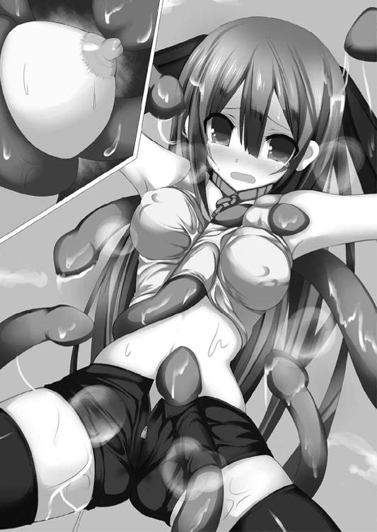
そのたびに膣奥から新たな蜜液があふれ、湿った音を立てながらスパッツの隙間から引き締まった太ももにまで垂れ、伝っていく。
「ダメ、こんなの......ダメ、ぇ......！」
真菜はギュッと目をつぶってうめいた。
立ち向かわなければ、と思いながらも、おぞましい触手から与えられる快感を体のほうが貪欲に受け入れてしまい、抵抗の気力が少しずつ萎えていく。
恋しい幼なじみの少年以外には決して侵入を許してはならない場所は、二枚の花弁がさらに綻び、ぱっくりと口を開けていく。自分の意志ではどうにもならない、牝としての生理的な反応。
開いた隙間から内部に侵入しようと、触手の亀頭が近づいてきた。
「イヤ......こないでぇっ！」
真菜は我を忘れて絶叫した。
すべてのビットをいっせいに起動、魔力のレーザーを所構わず撃ち放つ。
シュゴォォォォォォォォォォォッ！
視界がまばゆい閃光に染まった。
「こ、これは──」
さすがに京香も慌てた様子で後ずさった。
膨大な魔力によって生み出されたレーザー群が乱舞し、周囲一帯を薙ぎ払う。何本かの光条に串刺しにされ、消滅する男根触手。
さらにその他の光条が、真菜の周辺で次々と爆発を起こす──。
夏海と未怜のもとに、すさまじい轟音と爆発が押し寄せてきた。
「な、なんだ!?」
どうやら真菜がデュランダルのレーザーを乱発射したらしい。
デタラメに飛んできた魔力光の何本かが、ちょうど不意打ちのような格好となって未怜を襲う。
「くそっ、あの女！」
忌々しげに舌打ちし、使い魔の少年は跳びさがった。
（──今だ！）
その瞬間を狙って夏海が駆けだす。
両足に全魔力を籠め、初速からトップスピードへ。そのまま砲弾のごとき勢いで一直線に駆け抜ける。
着地した直後の、態勢に隙ができた未怜に向かって。
「し、しまっ......」
「終わりだ！」
渾身の力を籠めた右の拳撃が、使い魔の少年のみぞおちに食いこんだ。
小柄な体がくの字に曲がり、がくん、と崩れ落ちた。
一瞬の、逆転劇。
「くそったれが......！」
地面に倒れた未怜が恨めしげに夏海を見上げる。
「勝負はついた。これで退いてくれないか」
荒い息を吐き出して告げた。
すでに未怜は動くこともできないようだ。
「へっ、トドメを......げほっ、げほっ、さ、刺さない気かよ？」
使い魔の膂力なら首をへし折るくらいはたやすい。
だけど、やはり殺したくない。相手がこちらを殺す気でいても、夏海は相手を殺したくなかった。
「なんの恨みもないのに殺し合うなんておかしいよ。俺は、納得できない」
「......汐が言ってた通り、ほ、本当に......戦いを止めるつもりなんだな。なるほど......なるほどなるほど、へへへ......」
「負けを認めて、二度と他人を傷つけたりしないって──使い魔の力を悪用しないって誓ってくれ。そうすれば見逃す」
「......オレが断ったらどうする気だ」
未怜の口元に浮かぶ、あからさまな嘲笑。
見透かされているのだ。
たとえ彼がどんな返事をしようと、夏海には人殺しなどできない、と。
「くっ......」
言葉を詰まらせた。
分からない。どうすればいいのか。
だけど戦いたくはない。戦いを止めたい。
いくつもの思いが湧き上がり、しかし、それを自分の中で上手くまとめることができない。
どうすれば、未怜に自分の気持ちを伝えられるのか。
どう言えば、未怜に納得してもらえるのか。
「俺は──」
握った拳から力が抜ける。
その瞬間、未怜の瞳が異様な光を放った。
「バカが！」
いきなりその手から石つぶてが飛ぶ。砕け散った路面の一部を抜け目なく握りこんでいたらしい。
思わず避けた隙に、未怜は素早く起き上がり、ハイドラを繰り出した。
いったいどこにそれだけの力を残していたのか──。
「し、しまっ......」
刹那の出来事に夏海は反応しきれない。
気がついたときには、首筋に鞭が巻きついていた。
「が、はっ」
「へっへっへ、油断しやがったなぁ」
首をねじ曲げて振り向くと、未怜が悪鬼の形相で笑っていた。
「ハイドラは一度獲物に食いついたら絶対に放さねぇ。オレの勝ちだ」
ぎり、ぎり、と喉にかかる圧迫感が一気に増した。
気道を締めて夏海の呼吸を塞ぐ──などという生易しい圧力ではない。敵はこのまま気道を締め潰すつもりだ。
夏海は鞭に手をかけ、なんとか引き剥がそうとする。
「ぐっ、うう......」
息が苦しくて力が入らなかった。
両腕も、両足も、どんどんと力が抜けていく。
意識が薄れていく。
（俺は......このまま死ぬのか）
戦いを止めることも、そのための答えさえも見つけていないのに。
そして何よりも、大切な少女を助けなければいけないのに。
（ダメだ、まだ死ねない！ 俺は那々姫を──）
夏海がカッと目を見開いたそのとき、
「──参の弾《トロメア》」
ふいに、槍の形をした光弾が天空から降り注いだ。
「なんだ!?」
未怜の驚きの声をかき消し、
バシュッ......！
光弾がハイドラを半ばから切り裂いて、夏海を解放する。
「はあっ、はあっ、はあっ......」
前方にたたずむ二つのシルエット。
長い黒髪を風にたなびかせた少女と、その背に寄り添う小柄な少女。
「千歳さん......百香ちゃん......」
気道を確保したばかりで苦しい息の下、夏海は姉妹を見やった。
「まったく。戦場で敵に情けをかけるとは。そんな甘い気持ちでは必ず殺されると警告しただろう」
「......それでも俺は、人を殺すなんて」
千歳はふんと鼻を鳴らして夏海を見下ろした。それから踵を返し、未怜と対峙する。
「またテメェらか。オレたちのゲームを邪魔すんなよ」
「ゲームか。ならばプレイヤー交代といこう」
千歳が傲然と告げた。
「ここからは私たちが相手をする。いくぞ、百香」
「うん、お姉ちゃん」
恋人同士のように寄り添う美貌の姉妹。
千歳が百香の頬にちゅっと音を立てて口づけする。
「テメェら、いちゃついてんじゃねーぞ！」
野卑な怒声とともに未怜がハイドラを振るう。
半ばから断ち切られた魔の鞭はすでに再生を終えており、先端を九つに分裂させてしまいには襲いかかった。
「──無駄だ」
千歳が冷たい瞳を向けると同時に、百香のボウガンからふたたび魔弾が放たれた。
武器破壊に特化した魔弾──トロメア。
光の槍が迫りくる九つの先端を片っ端から貫き、消し飛ばす。
「くっ......」
「壱の弾──《カイーナ》」
間髪容れずに放たれたエネルギーボールが未怜を直撃した。
「が、あああっ......！」
苦鳴とともに中空高く吹き飛ばされ、地面に叩きつけられる。
いくら耐久力が高い《白兵型》使い魔といえど、直撃を受けたのだ。しばらくは立ち上がれないだろう。
「なんて強いんだ──」
夏海は呆然と姉妹を見やった。
「当然だ。私たちは相手を殺すつもりで戦っている。戦いを止める、などと甘いことを言っている君とは攻撃の威力も精度もまるで違う」
背を向けたままの千歳の、長い黒髪が風にひるがえった。
「次は、あいつか」
京香もちょうどこちらに気づいたらしく振り返る。
真菜がレーザーを乱発射したときに傷を受けたのか、赤いジャケットの一部が焼け焦げていた。
「あらあら、この間の可愛らしい姉妹じゃないの。アタシ好みの女の子が次々に現れて嬉しいわぁ」
艶然とした笑みが強くなった。真っ赤な舌で唇の周辺をチロリと舐める。
「姉妹丼っていうのも乙よねぇ。ふふ、アタシのテクで蕩かしてあげたいわぁ」
「生憎だがセックステクニックを競うつもりはない」
千歳がふんと鼻を鳴らした。
「つれないわねぇ。でもそういう跳ね返りを調教するのも悪くないわ──ヘパイストス」
真菜を拘束している黒い触手の一部が分裂し、新たな触手と化して霧雨姉妹に向かう。
もともと決まった形を持たないだけに、変形も分裂も自在なのだろう。一本が二本、二本が四本......みるみるうちに数十本の触手群へと増殖する。
四方八方から襲いかかるそれらを、
「弐の弾──《アンテノーラ》」
手裏剣型の光弾があっさりと吹き飛ばした。
京香の顔色が変わった。
「っ!? この威力は──」
「愚かだな。三瀬を拘束するために、本体の力を二つに分けているんだろう？ そんな状態で私たちの《魔弾の射手》にかなうつもりか」
千歳は勝ち誇るでもなく、淡々とした口調だ。
「ふん、こっちには人質がいるのよぉ。アタシを攻撃してきたら、この子を殺しちゃおうかしら？」
京香のほうは勝ち誇った表情だ。
「ぐっ......ううっ......！」
霧雨姉妹に見せつけるように、ヘパイストスに拘束を強めさせて真菜の全身をきつく締め上げる。
ぎし、ぎし、と細身の体から嫌な軋み音が聞こえた。
「この子の体をへし折られたくなかったら──えっ!?」
「この私に人質とはおめでたいな」
千歳は表情一つ変えず、人差し指でまっすぐに敵の魔王候補を指し示す。
さすがに京香も驚きの表情を浮かべた。
「ち、ちょっと、仲間を見殺しに──」
「やれ、百香」
「参の弾《トロメア》」
ボウガンから放たれる、槍の形をした光弾。
「くっ、ヘパイストス、アタシを守りなさぁいっ！」
真菜の拘束を解き、分割していたヘパイストスを元通りに融合。巨大で重厚な防御壁を展開する。
槍型光弾は螺旋状に回転しながら、黒い壁に激突し──。
あっさりと、貫いた。
「なっ!?」
グゴォォォッ！
激しくまき散らされる轟音と爆炎。
「トロメアは武器や防具を破壊することに特化した魔弾。その貫通力を甘く見てもらっては困るな」
「や、やってくれたじゃなぁい......はぁ、はぁ......！」
京香が弱々しく立ち上がった。
妖艶なランジェリー風の衣装はそのほとんどが焼け焦げ、全裸同然だ。真っ白な肌はあちこちに裂傷が走り、赤く爛れている。
「き、京香さん......それに未怜くんも......ここは退いたほうが」
後方で待機していた田原崎がオロオロと二人を見つめた。
完全に目が泳いでいる。今までの戦いでもそうだったが、基本的に彼は戦いにほとんど関与しないらしい。
未怜の鞭を創り出した後は、ずっと後方に引っこんだまま。あまりにも影が薄いために、その存在すら忘れるほどだ。
「せっかく、そこの彼も見逃してくれるようだし......」
夏海をチラッと見つめてから、気弱な口調で提言する。
「ま、アタシも未怜くんもボロボロだしねぇ。いったん退いたほうが賢いかしらぁ」
京香はふうとため息をついて、冷静な口調に戻った。
一方の未怜は、怒気に顔を赤らめている。
「ふ、ふざけんな......オレは逃げねーぞ。こんな雑魚どもに負けるなんて」
「ふん、カン違いするな」
千歳がゾッとするような酷薄な笑みを浮かべた。
「お前たちを見逃すと思うか。叩けるときに叩くのが勝負の鉄則。お前たちは全員──ここで殺す」
「えっ、そんな......！」
「藍原は黙っていろ」
その言葉に満ちた殺意に気圧され、夏海は動けなくなる。
「殺すか殺されるか、ってわけね。それじゃあこっちも本気で──ヘパイストス」
使い魔の一部が先端に長大な刃を備えた触手に変形し、まっすぐ伸びた。
その切っ先を迎撃しようと、百香がボウガンを構え──、
ズンッ！
「な、なに......？」
次の瞬間、驚愕と静寂が場を支配する。
刃付きの触手は途中で急カーブすると、あっさりと体の中心部を貫いたのだ。
京香の背後で戦いを見守っていた、田原崎を。
「っ..................！」
悲鳴を上げる暇さえない一瞬の出来事。
触手の刃が引き抜かれると、魔王候補の男は力なく倒れた。全身を包んでいた白いローブが消滅し、スーツ姿に戻る。
体の下に広がっていく、赤い血だまり。
「て、テメェ......何やってんだぁっ！」
未怜が鬼の形相で絶叫した。
「バイバイ、未怜くん。ふふ、一回くらいはエッチさせてあげればよかったかしら？ 好みのタイプだったのに残念だわぁ」
田原崎の体から魔王候補の魂の器である《宝玉》を取り出す。それを顔の前に掲げ、長い舌でねっとりと舐めしゃぶった。
男根への口唇奉仕を連想させる、卑猥な舌遣い。
次の瞬間、京香は口元に宝玉を持っていき、そのまま飲みこんだ。
「や、やめろ、助け......う......あああああっ......！」
未怜の顔が鬱血してどす黒く染まる。切れ長の瞳と真っ白な歯を剥き出す。
秀麗な美貌の面影もないほどの形相で断末魔の絶叫を上げる。
使い魔は契約相手である魔王候補と魂同士でつながっている。その候補が魂を奪われれば、使い魔もまた消滅の運命をたどるのだ。
「ああああああっ......あああっ......ち、ちくしょおおおおおっ......おお......！」
みるみるうちに全身が淡い燐光と化し、虚空へと溶け消えた。
井上未怜は──この世界に跡形も残さず、完全に消滅した。
田原崎のほうに目を向ければ、こちらも同じように無数の光の粒子となって消滅した後だった。
「どういうつもりだ......！ 仲間を手にかけるなんて」
夏海は険しい表情で京香をにらんだ。
「あぁら、生き残るためよ。当然でしょう？」
仲間の魔王候補と使い魔をまとめて消滅させた美女は、艶然とほほ笑んだまま罪悪感の欠片すら見せない。
「夏海くんはともかく、こっちの姉妹は本気でアタシたちを殺すつもりみたいだからねぇ。このまま戦ったら負けていたでしょうけど......田原崎さんの魔力を手に入れたおかげで、あなたたちを殺せるくらいにはパワーアップできたわぁ」
「だ、だからって仲間を──」
「《黒き創世》は殺すか殺されるかしかない。殺されるくらいなら......アタシは仲間を犠牲にしてでも生き延びるわよぉ」
美しい切れ長の瞳が狂気に似た光を放った。
「今のアタシの魔力なら可能なはず。来なさぁい、ヘパイストス。巨神甲冑・起動」
京香の全身から放射された毒々しい紫の魔力が光の柱となって立ち上る。
ヘパイストスが大きく伸び広がり、主の全身を包みこんだ。まるで防護服のように、魔王候補の美女の腕を、脚を、体を──あらゆる場所を覆い隠す。
「なっ......！」
出現したのは、漆黒の巨人。
体長は五メートルを超えているだろうか。ねじくれたツノを備えた頭部。重量感に満ちた体躯。力強い四肢。
そして、体の中心部からレリーフのように飛び出した京香の顔。
「これがアタシの切り札、巨神甲冑よぉ」
異形と化した魔王候補の美女が勝ち誇ったように笑う。
「ただ、この形態はバカみたいに魔力を消費しちゃうからあんまり使いたくないのよねぇ。ま、エネルギー使用量が高い分だけ攻撃能力もケタ外れだけど......ふふ、久しぶりに試してみようかしらぁ」
右腕を振りかぶる、黒い巨人兵。
ゾクリ、と背筋に嫌な予感が走った。
「あっははははははははは、潰れなさぁぁぁいっ！」
轟音──。
砲弾の勢いで振り下ろされた拳は、夏海の動体視力をもってしても視認するのがやっとだった。
反応しきれない。気がつけば、すでに拳が眼前に迫っている。
「──くっ！」
間一髪のところで、夏海は両手を前に突き出し、巨人のパンチを受け止めた。
両足がアスファルトの路面を易々と砕き、めりこむ。ギシギシと全身の骨が軋んだ。
「な、なんだ、このパワーは......！ スピードも、信じられないくらいに......くうっ」
両腕が千切れ飛びそうなほどの圧力。
「田原崎さんと未怜くんのコンビはすでに四つの魂を集めていたのよ。それを丸ごと吸収したんだから、これくらいのパワーアップは当然よねぇ」
巨人の胸元から浮き上がった顔は、返り血を浴びて赤く染まっている。その口元に凄艶な笑みが浮かんだ。
「っ......！」
両手にかかる圧力がさらに増す。
受け止めきれない──。
次の瞬間、夏海はすさまじい勢いで吹き飛ばされていた。
ドゴォォォォォォッ！
土煙を巻き上げ、背中から叩きつけられる。地面を十メートル以上えぐったところで、ようやく止まる。
「藍原！」
「夏海、大丈夫っ！」
真菜が血相を変えて駆け寄った。
「うう......」
全身の骨にヒビでも入ったのか、息をするだけで体中に激痛が走った。四肢に力が入らない。
油断したつもりはなかったが、たった一撃でこれほどまでのダメージを受けるとは思っていなかった。
「あいつのパワーが、し、信じられないほど上がってる......！」
「よくも夏海を！」
真菜の顔つきが変わった。
つぶらな瞳からすうっと光が消え、虚ろな闇を宿す。暗い視線を巨人兵に向ける。
「よくも夏海を......よくも夏海を......よくも夏海を......よくもわたしの大切な夏海を......よくもよくもよくもよくもよくもよくもよくもよくもよくもぉぉぉぉぉぉぉぉっ！」
天空を桜色の輝きが埋め尽くした。
３３３機のデュランダルによる全方位射撃──。
「ヤケになっても無駄よぉ」
しかし降り注ぐレーザーをものともせずに巨人兵は前進。
無造作に腕を払う。
その一撃が巻き起こしたすさまじい風圧が、
「きゃあっ......！」
真菜の体を冗談のように高く吹き飛ばした。
「真菜！」
《白兵型》の使い魔ならいざ知らず、魔王候補である彼女の肉体強度は普通の人間とそう変わらない。十数メートルの高さまで吹き飛ばされ、地面に叩きつけられれば無事では済まされないだろう。
よくて重傷、悪くすれば──。
「くっ！」
夏海は力の入らない体で無理やり立ち上がった。
地面を蹴ってまっすぐ跳び上がる。
空中の真菜を両手で抱きかかえ、一回転。器用にトンボを切って両足から着地する。
と、
「......あなたたちに構っている暇はなさそうねぇ。儀式が完成する前に──」
言うなり、京香は踵を返して走り出した。
「逃げた......？」
訝りつつも、夏海は大きく息を吐き出した。
「ありがとう、千歳さん。助かったよ」
「ヤツらの拠点を見つけたから知らせに行こうとしたら、複数の魔力がぶつかり合っているのを探知したからな」
千歳がふんと鼻を鳴らす。
「だが礼を言われる筋合いはない。以前の借りを返しただけだ」
この間真菜と戦ったときのことを言っているのだろう。
「用もなく二人だけで外を出歩くなど迂闊だな。ヤツらの襲撃を受けるかもしれない、とは考えなかったのか」
「デートくらいいいじゃない。戦いの前に英気を養ってただけだもん」
真菜がムッとした顔で言い返した。
「ほう、本条から三瀬に乗り換えたのか」
「ち、違うよっ」
反射的に声を上げる夏海。我知らず声が震えてしまった。
「なんで即否定なの！ わたしたち、もう他人じゃないのに」
「いや、それは魔力補給のためだろ」
「ひどい！ わたし、初めてだったのに──」
「え、あ、いや、その」
「わたしより本条さんを取るんだ......」
「そういう話じゃなくって！」
「ふん、当たらずとも遠からずか。これだから男は......」
なぜか千歳まで話題に乗って、呆れたようなため息をつく。
これでは四面楚歌だ。
ある意味、敵の魔王候補や使い魔と戦っているときより追い詰められた気分だった。
「千歳さんも話をややこしくしないでよ。俺はどっちを取るとか、そういうのじゃなくて......えっと」
夏海は大慌てで釈明する。
「私は本当のことを言っただけだ。君にやましいところがなければ慌てる必要は──ん？」
言いかけたところで、千歳が訝しげに眉を寄せた。
「架藤京香の魔力が向かっているのは......まさか、地下神殿か」
嫌な予感がする。
「あいつ、もしかして那々姫に......」
「私と百香で場所は突き止めてある。行くか？」
夏海は険しい表情でうなずいた。
乱立する無数の柱と石畳が敷かれた床。古代の神殿を思わせる装い。その最奥には、巨大な魔法陣が描かれた祭壇のようなものがある。
壁際の白いシルエットは那々姫だ。
その傍には、高さ三メートルほどの尖塔状のモニュメントがそびえていた。
どくっ、どくっ、とまるで生きているように表面が脈動を繰り返す。
「もう少しだ......もう少しで、儀式は完成する──」
汐がモニュメントを見上げて、つぶやいた。
ドゴォォォォォォォォォッ！
突然、爆音とともに天井が砕け散った。無数の瓦礫とともに巨大なシルエットが降下してくる。
「これは、巨神甲冑!?」
汐が驚いた顔で叫んだ。
それから表情をこわばらせて、黒い巨人と化した京香を見据える。
「まさか、京香さん......」
「悪いけど、アタシは抜けさせてもらうわよぉ。田原崎さんと未怜くんはもう始末しちゃったしねぇ。那々姫ちゃんを奪ってから、儀式はアタシの手で完成させてあげるわぁ」
「ロンギヌスを手にすれば、騎士団を抜けてもこの戦いを勝ち抜ける、とでも？」
汐は険しい顔でつぶやいた。
「前々から怪しいと思っていたよ。キミは自分本位な性格をしているからね」
「自分本位なのはみんな同じじゃないかしらぁ。誰だって自分の願いをかなえるために、この戦いに身を投じているんだもの」
黒い巨人が愉快げに笑う。
「《煌鳳翼騎士団》なんて御大層に名乗っても、しょせんは一時的に手を組んだだけ。仲間になったふり。アタシはね、裏切るチャンスをずーっと狙っていたのよぉ」
「......裏切り者は始末する。それが騎士団の鉄の掟だよ」
汐の全身から赤と黒の入り混じった稲妻が弾けた。
次の瞬間、祭礼学園の制服姿から露出度の多い黒の甲冑と赤いマント......魔王の衣装をまとった姿へと変化する。
「始末されるのはどっちかしらねぇ。ふふ、蹴散らしなさぁい、ヘパイストス」
五メートル超の巨体が汐に突進した。
「《斬天剣》、《尖空刃》──砲撃形態！」
すでにミニチュアサイズから実剣サイズに変化させていた双剣を、さらに銃モードへと変形。矢継ぎ早に二条の魔力光を放つ。
銃撃をものともせずに進撃する京香。
距離と詰められるや否や、銃を剣に変形させて迎撃する汐。
パワーと攻撃力で勝るのは京香だが、スピードと攻撃の手数では汐が上だ。
戦いは、一進一退。
と、ふいに二人の動きが止まった。
ハッと入り口に目を向ける。
「那々姫を......返してもらう」
神殿に駆けこんできたのは、夏海たちだった。
──霧雨姉妹の案内で、夏海たちは目的地へとたどり着いた。市内オフィス街にある古ぼけた廃ビルだ。
「敵の拠点はあのビルの地下だ。行くぞ」
夏海は真菜、霧雨姉妹とともにビルに入り、階段を下りて地下二階のホールへ。
神殿を思わせる地下室内部には、すでに先客がいた。
赤と黒の魔力光を派手にまき散らしてぶつかり合う少女騎士と黒い巨人。
汐と京香だ。
さらに二人の後方......尖塔のようなモニュメントの傍には、那々姫の姿があった。
「那々姫を......返してもらう」
告げて、夏海は走り出す。ここに来る前に千歳から魔力補給を受け、受けたダメージはある程度回復していた。
その背後から、
「ち、ちょっと、夏海──」
「三瀬、私たちでヤツらを引きつけるぞ。その間に藍原は本条を！」
「もうっ、なんであなたが仕切るのよ！」
霧雨姉妹がザミエルで、真菜がデュランダルで、それぞれ二人を狙う。
戦いは一気に混戦模様へ突入した。
爆炎と黒煙、そして破壊音。
急激に視界が悪くなった戦場を見回し、それぞれの位置関係を慎重に計った。
狙い通り、霧雨姉妹と真菜が敵の注意を引いてくれている。
（よし、今のうちに！）
魔王候補たちの戦いを横目に、那々姫のもとへ一直線に走っていった。
彼女は全裸に剥かれたうえに、四肢を鉄枷で拘束されている。真っ白い肌のいたるところにまとわりついているのは、薄緑色の粘体だ。
「な、那々姫──」
淫靡な光沢を放つ美しい裸身にゾクリとなった。
「なつ......み」
力のない声でうめく姿が痛々しい。
「今助ける」
夏海は鉄枷に両手をかけた。
鋼鉄をも引き裂く《白兵型》の筋力を全開にし、力任せに引きちぎる。両手両足の枷を順番に壊し、裸体にへばりついているスライムも追い払って那々姫を解放する。
「大丈夫か、那々姫」
「助けに来るのが......遅いのよ、ばか」
憎まれ口を叩いているところを見ると、まだ元気はありそうだ。
豊かに張った乳房がぷるんと揺れる。すらりとした両足の付け根には淡い陰りが揺れていた。
「ああ、ダメ......か、体が、熱い......はぁ、はぁ......」
那々姫はねっとりとした視線で見つめ、しなやかな指を夏海の股間に這わせてきた。ほとんど生理的な反応で下腹がビクンと跳ねる。
「ど、どうしたの、那々姫っ......？」
明らかに態度がおかしい相棒の少女を、戸惑いもあらわに見つめる。
「おねが、い......抱いてぇ......はぁ、はぁ......夏海の、おっきいの......んっ、ほ、欲しい......ああ、はぁぁっ......！」
スラックスの上から指で撫でられ、股間が熱くざわめいた。ここが戦場であることも一瞬忘れ、海綿体が充血する。ズキンズキンとペニスが脈打つ。
さらに那々姫は妖しく舌なめずりをしながらテントを張った股間部にゆっくりと顔を近づけ──。
「やめろっ......」
理性を振り絞って、なんとか離れた。
びくん、と那々姫が体を震わせる。
「あれ、あたし──」
憑き物が落ちたような、顔。
夏海はため息をつくと、ブレザーの上着を脱いで那々姫にかけてやった。肩を貸して立ち上がらせる。
「今のうちにここを出よう。千歳さんと百香ちゃんにも呼びかけて──」
言いかけたところで、彼女の表情がこわばっているのに気づく。
「逃がさないよ、二人とも」
双剣をだらりと提げた少女騎士が近づいてきた。
京香は霧雨姉妹と交戦状態のままだ。乱戦の中で汐だけが抜け出してきたのだろう。
「夏海、これを......はぁ、はぁ......つ、使って」
那々姫の手から黒い光があふれ、剣の形に実体化した。
白銀の刃に黒い鍔──愛剣レーヴァテイン。
「ありがとう、那々姫。そこで見てて」
夏海は魔力の炎をまとった剣を構えた。
「一緒に帰ろう」
「逃がさないと言ったはず。儀式はまだ終わっていないんだ。那々姫ちゃんには生贄になってもらう」
双剣を構えた騎士が言い放つ。
「あのバケモノを──弟の仇を殺すためにね！」
叫んで、稲妻の速度で突進した。
いくつもの魂を吸収したことで本来の《双襲型》の能力を超え、《白兵型》に匹敵するほどの運動能力を得た汐の音速機動。
黒い鎧を打ち鳴らし、赤いマントをたなびかせ、まさしくまばたきするほどの間に夏海の懐へと侵入する。
別々の角度から同時に打ちこまれる、長剣と細剣。
「くっ......！」
夏海は大上段から剣を振り下ろし、汐の二刀を迎撃した。
右の長剣を弾き、その勢いのまま左の細剣を打ち落とす。
返し刀をみぞおち辺りに打ちこもうとするが、汐の二刀がすぐさまひるがえり、夏海の反撃を封じた。
ギッギィィッギンッギィッ！
連続して生じる金属音。
長剣で薙ぎ払い、細剣で突く。
二刀の特性を活かしたコンビネーションが襲いかかる。
超人的な反射神経でそれらを捌き、反撃を繰り出す夏海。
二人の斬撃は華麗な舞いにも似て、一撃ごとに虚空を白銀の輝きで埋めていく。
「やるね、だけどキミたちに儀式兵装は渡さない！ あれはボクらの最後の希望なんだ」
「そのためなら何をしてもいいっていうのか！」
十字に振り下ろされた二刀を、夏海は長剣で受け止める。
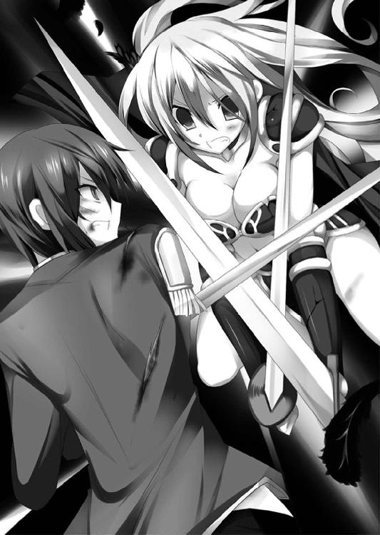
息が触れあいそうなほどの距離で鍔迫り合う。
踏みしめた両足が石畳を砕いた。
すさまじい膂力の激突で、ぎりっ、ぎりっ、と互いの刀身が折れそうなほどたわむ。
「ボクは目的のためには手段を選ばない。生半可なことでは、あの《不死の魔姫》は倒せない」
高まる魔力が稲妻となって二人の全身から弾け散った。
「人を殺すことを......人を恐怖させることを楽しむバケモノだ。あいつはボクの目の前で弟を」
汐の秀麗な美貌が悲痛に歪んだ。
「弟を、生きたまま食らったんだ！」
「──！」
剣圧がすさまじい勢いで増大し、夏海は大きく弾き飛ばされる。
「絶対に許さない。あのバケモノを殺すためならなんだってする。そのためにボクは騎士団に入った。そのためだけにだ！ うああああああぁぁぁぁぁぁぁぁぁぁぁぁぁっ！」
魂を振り絞るかのような、咆哮だった。
家族を無残に殺された悲しみ、怒り、無念、絶望。
それらすべてを背負って、汐は戦っている。
（だけど──）
夏海は剣の柄を握り直した。
大切なものを失った苦しみを背負っているのは、汐だけじゃない。
「ごめん、汐さん。俺たちだって譲れないんだ。だから──出会ったときに、君が言った言葉をそのまま返す」
夏海がゆっくりとレーヴァテインを振りかぶる。
青眼から上段へ。
「無関係な人を大勢巻きこむ騎士団を放っておくわけにはいかない。汐さんは、俺が止める──止めてみせるっ」
ガシャン、と音がして、魔剣が変形を開始する。
鍔が大きく広がって翼の形に。
刀身が中央から二つに割れ、スライドし、より長大に。
「そんな位置から何をっ」
汐の双剣が銃の形に変形した。
「この間合いならボクの勝ちだね！」
左右から放たれる、赤と黒の光弾。
「いや、勝つのは俺だ！」
汐の言葉を遮って、渾身の力で魔剣を振り下ろす。
刹那、刀身がまばゆい輝きを放った。
レーヴァテインの真の能力を発動する。
紫色に輝く魔力の炎が空間を飛び越え、汐のもとへ──。
間合いのはるか外から放たれた斬撃が、騎士甲冑の中央部を直撃する。
「なっ......!?」
驚愕の、声。
胸甲が粉々に砕け、白い豊かな乳房の膨らみをさらしながら、汐は轟音とともに吹き飛ばされた。
「はあっ、はあっ......」
空間を飛び越えた斬撃で膨大な魔力を消耗した夏海は、肩で激しく息をした。
視界がぐるぐると回るようなめまいと、脱力感。真菜との交わりであれだけ貯めこんだ魔力が一気に失われたのが分かる。
「うふふ、邪魔な汐ちゃんを倒してくれて礼を言うわぁ。後は那々姫ちゃんをさらって、アタシが儀式を完成させるだけね」
黒い巨人が、ずん、ずん、と地響きを立てながら近づいてきた。どうやら標的を那々姫一人に切り替えたらしい。
真菜と霧雨姉妹が背後から攻撃を浴びせているが、ものともしない。
「那々姫には手を出させないっ」
夏海がレーヴァテインを手に走った。
今の消耗度では、空間を飛び越える斬撃はもう撃てそうにない。残された手立ては接近戦のみ。
疲労はあるが気にしてなどいられなかった。超人的な運動能力で天井まで跳びあがり、その天井を床代わりに蹴る。
空中でさらに加速して、巨人の頭部に斬りかかった。
「無駄だってばぁ」
振り向きざま、京香がうるさげに振り回した腕が夏海を直撃する。
空中では避けようがない。
「がっ！」
大きく吹き飛ばされ、激しく地面に叩きつけられた。呼吸が、詰まる。
「夏海！」
那々姫が慌てて駆け寄った。
「パワーの差がありすぎる......」
そしてその巨体には似合わぬスピードを兼ね備えていることも確認済み。これでは近づくこともできない。
「壱の弾──《カイーナ》」
「デュランダル、全方位射撃！」
百香の青い光弾が、真菜の一斉射撃が、京香に叩きこまれる。
グゴォォォォォォォッ！
地下室全体が吹き飛びそうなほどの爆光。
しかし──漆黒の巨体は小揺るぎもしない。
魔法陣の前までたどり着き、すぐ傍にあるモニュメントを引き抜く。
煌──。
黄金の輝きがあふれ返った。
光の中で、いびつな形の尖塔がぐにゃりとひしゃげ、その姿を変えていく。
二股に分かれた長大な刃。紋様の描かれた柄。長さ二メートルほどの、まるで芸術品のように美しい金色の槍──。
「これが儀式兵装《虚無の聖槍》......。ものすごいエネルギーを感じるわぁ。ふふ、完全体とはいかないけれど、九割方完成しているみたいねぇ」
ぶんっ、と軽く振るだけで、黄金の粒子が周囲に飛び散った。圧倒的な魔力が槍全体からあふれ出しているのが分かる。
「──なるほど。これなら無敵の《不死の魔姫》にも通用するかもしれないわぁ」
ご満悦といった様子の京香が、夏海たちのほうを向いた。
「那々姫ちゃん以外は邪魔だから殺していくわねぇ」
彼我の距離は約五メートル。
京香の巨体なら、それこそ一足飛びの間合いだ。
「可愛い顔してるのにもったいないわぁ。あなたと一回くらいエッチしておくべきだったわね。本当に残念......」
黄金の槍をゆっくりと振りかぶった。
ただでさえ夏海たちを圧する膂力を誇る、巨人の形態。それがさらに無敵の武器を携えていては、対抗する手段などない。
「くっ......！」
夏海はレーヴァテインを手に、体をこわばらせる。
「夏海はやらせない──」
真菜がふたたびビットを飛ばす。
空中を飛び回るすべての子機が桜色の輝きを宿した。
しかし魔力のレーザーが、不定形の体を持つヘパイストスに対して無力であることは実証済みだ。
「だから無駄だって言ってるじゃなぁい」
余裕の笑みを浮かべる京香に、真菜は凛とした顔で叫んだ。
「わたしが夏海を守ってみせるんだからっ。デュランダル──一点集中砲撃！」
３３３機のビットが一斉射撃を放つ。
いつものような全方位に向かってバラバラに放つ射撃とは、違う。
すべてのレーザーが収束し、寄り集まり、京香の胸部に向かって一点に──。
「なっ......!?」
ドンッ......！
驚愕の声は紅蓮の爆発に呑みこまれた。
単純計算で通常のレーザーの３３３倍の威力を持つ、強大な一撃。
その爆圧は無敵の防御壁を貫通することこそできなかったものの、黒い巨体を大きく後退させる。
からんっ。
よろめいた拍子に、甲高い音とともに手から槍が落ちた。
「夏海、今だよっ」
「助かった、真菜っ」
幼なじみの援護に感謝しながら、夏海は両足に残りの魔力を注ぎこみ、床を蹴る。
ギンッ、と大気が軋む音。
音速を超えた加速でロンギヌスのもとまで到達し、拾い上げた。
「し、しまった！」
「これが、儀式兵装──」
レーヴァテインを床に突き立て、ロンギヌスを構える。
両手にしっくりと馴染む巨大な槍。
どくん、どくん、と柄から聞こえてくる心音にも似た脈動。手にしているだけで、強大な魔力が伝わってくる。
二股に分かれた刃が黄金の輝きを放つ。
「はぁぁぁぁぁぁっ！」
裂帛の気合いとともに一閃──。
袈裟懸けに振り下ろした聖槍が黄金の魔力をほとばしらせた。
音もなく、手ごたえすらもなく。
不可侵の防御力を誇る京香の黒い装甲を、いともたやすく斬り裂く。
「ぐっ、あああああっ......」
鮮血を滴らせながら巨人兵が後退した。
夏海が振るった刃は装甲の下にある京香の体にまで達していたらしい。黒い体表を毒々しい赤が彩る。
「未完成だっていうのに......はぁ、はぁ......と、とんでもない......破壊力じゃない」
苦痛に顔を歪める京香。
右肩から左腰にかけて斜めに切り裂かれた装甲は、今までと違って傷口が再生しない。物理的な破壊力だけでなく、ロンギヌス特有の能力なのか。
「色々と厄介な槍よねぇ。正面から戦っても分が悪いわ......だけど！」
ずしんっ、と地響きを立てて、床を蹴る京香。
巨体を利したジャンプ力で、長大な距離を一気に跳びさがる。
その先には、那々姫の姿。
「アタシの目的は戦いに勝つことじゃない。この女さえもらっていけば、アタシも儀式兵装を手に入れることができるんだからねぇっ」
ダメージを受けているためか、着地と同時に膝から崩れ落ち、それでもなお漆黒の腕を伸ばす。体ごと覆いかぶさるようにして。
「っ......！」
ほぼすべての魔力を吸い尽くされ、身動き一つ取れない那々姫に向かって──。
「那々姫は渡さないっ！」
夏海は槍を手に走った。
無我夢中だった。
どくん、どくん、と心臓が異様なほど高鳴っている。
魔王候補の少女に迫る巨大な黒腕が、まるでスローモーション映像のようにゆっくりと目に映る。
（今度こそ──那々姫を助ける）
もう二度と、奪わせない。
走る。
なおも走る。
「うおおおおおおっ......！」
滑りこむようにして、巨人の手と那々姫の間に体を入れた。右手で魔王候補の少女を横抱きにする。
次の瞬間。
ずぶり、と肉を斬り裂く不快な感触があった。
左手で逆手に持っていた槍の柄に赤いものが伝ってくる。
「えっ......？」
振り向いた夏海の視界に飛びこんできたのは、カッと目を見開いたすさまじい形相。
狙ったわけではなかった。
那々姫を守るために飛びこんだ夏海の──左手に持った槍の刃に、ちょうど自分から突っこむ形になってしまったのだろう。
ロンギヌスの先端は、鎧を壊されて露出した京香の胸元に突き刺さっていた。
「あ......」
驚いて、槍から手を放す。
「がはっ......！」
弱々しく立ち上がった巨人は、しかしそこで力尽き、仰向けに倒れ伏した。
全身を覆っていた黒いゴム状の装甲がドロドロに溶け、消える。
槍は、豊かに膨らんだ左右のバストのちょうど真ん中を貫いていた。背中まで刃が突き通っている。
「あ......あ......」
夏海は呆然と立ち尽くした。
那々姫を助けたいという一心だった。
敵を殺そうとは──いや、攻撃しようとも思わなかった。
ただ那々姫を連れて、いったん距離を置こうとしただけ。
「あああ......あ......ああ......」
口からこぼれるのは、意味をなさないうめき声。意識が白一色に塗り潰される。
「──これを渡すわけにはいかない」
どれくらいの間、呆然自失としていただろうか。
気がつくと、汐が京香の死体の傍に立っていた。甲冑が砕け、豊かな胸の膨らみがあらわになっているが、それを隠そうともしない。
「くっ......藍原、そいつを止めろ！ 何をやっている!?」
千歳の声も耳に入らなかった。
「回収させてもらうよ」
汐が、京香の胸に突き刺さったままの槍を一気に引き抜く。
噴き上がる大量の鮮血。
噴水のように降り注ぎ、黒い軽装甲冑が真紅に染め上げられた。返り血をべっとりと浴びながら、汐がぎらついた目で夏海をにらむ。
「いずれ、必ず......」
つぶやいて、踵を返した。
槍を手に出口へと駆けていく。
「逃がすか──百香！」
千歳が叫んで、青い光弾が放たれる。
汐は振り向きざまロンギヌスを一閃。迫りくる魔弾をあっさりと斬り散らし、そのまま去っていった。
夏海はその光景を虚ろな目で見ている。
夢遊病者のように力のない足取りで、京香のもとまで歩み寄った。
ピクリとも動かない。
夏海は無言で死体の傍にしゃがみこむ。
手のひらでそっと首筋に触れた。驚くほど冷たい肌は、すでに血が通っていないことを知らせていた。
脈拍や心音をあらためて確認するまでもなく。
架藤京香は死んでいた。
夏海が、殺した。
「俺が、この手で......」
全身が小刻みに痙攣する。
震えが止まらない。
殺すつもりなんてなかった。殺す必要もなかった。
京香は暴走していたわけではない。ただ彼女の手から那々姫を守りたかっただけなのに。
事故だった、などと何の言い訳にもならない。
あれほど嫌悪し、憎悪していた人殺しという行為を、自分自身が──犯したのだ。
嘘だ。
嘘だ。
嘘だ嘘だ嘘だ嘘だ嘘だ嘘だ嘘だ嘘だ嘘だ。
意識がぼうっと白熱していく。現実の出来事のはずなのに、遠い夢の中か、異世界で起きた出来事のように感じる。
「う、うわあああああああぁぁぁぁぁぁぁぁぁっ......あああぁぁぁぁぁぁっ......！」
嗚咽咽に似た絶叫が地下神殿の闇に溶け消えた。
長い一日が終わり──翌日の朝になった。
二年四組の教室はいつもと何も変わらず、生徒たちの喧騒に包まれている。
真菜はそんなクラスメイトたちが、どこか遠い世界の人間のように感じられた。
（ううん、違うよね。遠い世界にいるのは、わたしたちのほうだもん）
深々とため息をつく。
目の前を真紅のツインテールの女子生徒が横切った。
ハッと顔を上げると、那々姫は無言で顔を背ける。
「......本条さん、どうかしたの？」
どこか様子がおかしい。ハアハアと息が荒く、頬も紅潮していた。
同性である真菜から見ても、ゾクッとするほどの艶気──。
那々姫は問いかけに答えず、無言のまま自席まで歩いていった。
「どうしたっていうのよ」
眉を寄せてつぶやく真菜。
がらり、と教室のドアが開き、夏海が入ってきた。
幼なじみの少年を目にして、真菜は表情をこわばらせる。
──違う。
いつもとは、まとっている空気が別人のようだ。ゾッと背筋が冷えるほどの威圧感。
「あ、あれ、夏海......？」
守一が声をかけようとして、表情をこわばらせる。
お気楽な性格の彼も、さすがに普段の夏海とは違うことを感じ取ったのだろう。
それは他のクラスメイトたちも同じらしく、気圧されたようにいっせいに道を開けた。
夏海は一人、陰鬱な表情で自席に向かって歩く。
（やっぱり、昨日のことを引きずってるのかな）
いや、引きずっていないはずがない。
敵だったとはいえ、事故だったとはいえ、人を一人殺したのだ。
暴力を何よりも忌み嫌い、命を奪うという行為を心の底から憎む、あの夏海が。
人の命を、奪った。
それがどれだけ重いことかは、真菜にだって分かる。
だけど、だからこそ。
「おはよ。夏海」
真菜は夏海のもとに駆け寄り、ほほ笑みを投げかけた。
もちろん彼がショックを受けていることは分かっている。
それでも、あえて、いつも通りに明るい挨拶を送った。
「......おはよう」
こちらを向いた夏海の瞳は焦点が定まっていなかった。
どこまでも虚ろで、暗い瞳。
（やっぱり、いつもの夏海じゃない）
胸の芯がズキンと痛んだ。
「ねえ、夏海」
彼の視線はどこを見るともなく、泳いでいる。
「ん、ああ、何か......言った......？」
「夏海──」
「......心配そうな顔するなよ。大丈夫、だから」
思ったより張りのある、元気のこもった声が返ってきた。
きっと夏海は夏海で、なんとか立ち直ろうとしているのだろう。それが真菜の目には、かえって痛々しく映った。
（夏海、無理してる）
鬱屈したものを吐き出させてあげたい。
どんなことでもいい。彼の気が、ほんの少しでも晴れることを。
そのために、自分ができることは──。
「わたしたち、気分が悪いんで早退するね。徳野くん、先生に言っておいて」
考えるより先に、言葉が口をついて出た。
夏海の手を引き、驚く守一やクラスメイトたちを尻目に教室を出ていく。
「お、おい、俺は──」
「いいからついて来てっ」
怒声で抗弁を封じ、廊下を駆け抜ける。
そのまま屋上に出た。
朝の一限目すら始まっていない時間帯とあって、当然ながら屋上には誰もいない。
「いきなり......はぁ、はぁ、ど、どうしたんだよ、真菜」
「心配だったから」
お互いに乱れた呼吸を整え、あらためて向かい合った。
「......俺のことは放っておいてくれ」
夏海が顔を背ける。
真菜は両肩に手をかけて、彼の体を引き寄せた。
「放っておけないよ！ 夏海、昨日からずっと沈んでるもん。それは......あんなことがあったんだから、当たり前かもしれないけど」
「俺は──人を殺した」
「あれは事故だよ！」
真菜が叫んだ。
「殺したことに変わりはな──うっ!?」
皆まで言わせず、胸元に引き寄せ、抱きしめる。
「もういいよ」
優しくささやく。
「夏海はただ必死で守ろうとしただけなんだよね。偶然が重なって、あんなことに......でも、全部終わったんだよ。だから今は......ゆっくり休もう。ね？」
夏海は声もなく、ただ真菜の胸に顔を埋めている。
涙はない。
嗚咽もない。
だけど──彼の心が涙を流していることを、真菜は察していた。
だから真菜も、それ以上声をかけることなく。
ただ黙って抱きしめ続けていた。
結局その日は、放課後まで真菜と二人っきりで屋上にいた。
会話らしい会話はほとんどなく、ただ黙って抱きしめてもらっていた。おかげで沈みこんだ気分も、多少は落ち着いたのだが──。
（な、なんでこんなことに......!?）
那々姫の自室で、夏海は今、二人の魔王候補と向かい合っていた。
放課後になるや否や、真菜が強引ともいえる態度で彼と那々姫を伴い、この部屋にやって来たのだ。
いや、有り体にいえば無理やり押しかけたのだが。
「こ、こういうの......さ、さ、さんぴーっていうんだよね？」
真っ赤な顔で告げる真菜を、夏海は唖然とした顔で見つめる。
そう、彼女が提案してきたのは、
「三人で──エッチ、しよ？」
つまりは３Ｐだ。
この間まで処女だった少女がまさかこんな大胆なことを言い出してくるとは思わず、夏海も那々姫も呆気にとられていた。
「夏海はこの間の戦いでかなり消耗したでしょ？ だから、わたしが魔力を分けてあげようと思って。で、本条さんにも協力をお願いしたいの」
「えっ、あたしも......？」
那々姫のほうも戸惑いを隠せない様子だ。いつもなら戸惑うより先に怒りだしそうなものだが。
「っていうか、どうして三人で？」
「本当ならこんなこと、死んでも頼みたくないよ。でも、今は夏海が大変なときだもん。二人で一緒に立ち直らせたいの。それに本条さんも魔力がほとんど残ってないと思うし。三人で一緒にすれば、わたしの魔力を本条さんにも分けてあげられると思う」
真菜が珍しく那々姫を気にかけていることを訝しく思いつつも、提案自体は妥当なところだと思う。
もし今新たな敵が現れたとしたら、魔力をほとんど使いきってしまった夏海と那々姫はとても戦える状態ではない。
使い魔としての能力をまともに使うことができるかどうかも怪しいし、那々姫から魔力供給のサポートを受けることはほぼ不可能だろう。
「で、でも、いきなりそんなこと言われ......んむっ!?」
「ちゅ、れろぉ......好き、だよ......夏海ぃ......んんっ」
熱烈なキスで夏海の抗議は無理やり封じられた。
そのまま口内に押し入ってきたヌルヌルの舌肉が夏海の舌に巻きつき、ギュッと絞りたてる。うねうねと動き回る舌先が夏海の舌をくすぐり、口の裏や歯茎をこそぎ、心地よい刺激を送りこむ。
「んぐぐぐ......」
攻撃的な口づけに圧倒されながらも、夏海は下腹がカーッと火照るのを感じた。
いくら気分が沈んでいたとはいえ、男としての本能は幼なじみの少女から与えられる刺激によって高まっていく。本能は嘘をつけない。スラックスの下で熱を孕み、むくりと起き上がりだす分身器官。
「ねえ、今は何もかも忘れて──わたしが、忘れさせてあげるから」
唇を離した真菜は、耳元にねっとりとした吐息を吹きかけた。そうやって気にかけてくれる幼なじみの優しさが嬉しかった。ジンと胸が熱くなる。
那々姫がムッとした顔で詰め寄る。
「ちょっと待ってよ。夏海はあたしのモノなんだから。使い魔を立ち直らせるのは、あたしの役目よ」
「本条さんがいない間に、わたしたちは結ばれたんだよ。もうあなたの入る余地なんてないんじゃないかな、ふふ」
勝ち誇ったように笑う真菜。
たちまち那々姫が切れ長の瞳を吊り上げた。
「む、結ばれたってどういう意味!? あたし、聞いてないわよ」
「いや、それは──」
真正面から怒声を浴びて、夏海もさすがにタジタジとなった。
昨日はバタバタしていたこともあり、魔力補給のために真菜と肌を重ねたことを説明していなかったのだ。
那々姫とは恋人同士ではなく、あくまでも戦いのパートナーなのだから、他の女とそういうことをしても問題はないのかもしれないが......どことなく罪悪感を覚えてしまうのも事実だった。
「戦いのパートナーとしては本条さんが選ばれたのかもしれないけど、女としてはわたしを選んでくれたってことだよ。そうだよね、夏海？」
「お、おい、真菜......」
「今日もたっぷりサービスしてあげるね」
真菜はうっとりとした顔で制服の赤リボンに手をかけた。
するり、するり......。
衣擦れの音が妙に艶めかしく響く。一枚、また一枚と服を脱ぎ捨てていき、淡いブルーのブラジャーとショーツに包まれたほっそりとした肢体があらわになった。
「やだ、そんなにジッと見られたら恥ずかしいよ」
真菜がはにかんだ笑みを漏らす。
さすがに羞恥が強まったのか、指先を震わせながら、それでも脱衣を続ける。背中に手を回してホックを外すと、おずおずとブラジャーを取り去った。
さらにショーツの端に手をかけたところで、もう一度恥ずかしそうに夏海を見る。
いよいよ最後の一枚──。
気がつけば、幼なじみのストリップに目を奪われていた。こわごわとショーツを脱ぎ去る様を、息を飲んで凝視する。
すとん、と足元にショーツが落ちた。
「ぜ、全部......脱いだよ」
全裸になった瞬間、はあっ、と恥ずかしそうに深々と息を吐き出す。
真菜の鍛えられた裸体は、筋肉質ではあるもののゴツゴツとした感じはまったくなく、胸も肩も脇腹も腰も太ももも──すべてが女らしい丸みのある曲線で構成されていた。二日前にも目にした魅惑的なプロポーションに、あらためて見とれてしまう。
「今度は、夏海の番だよ」
頬を染めて恥じらう真菜の可憐さに胸がときめいた。
言われるがままに制服を脱ぎ始める。とにかく今は、この雰囲気に呑まれてしまうことにした。
体がフワフワとして落ち着かない。意識がぼうっとして、半ば夢の中の出来事のよう。
真菜が嬉しそうにこちらを見ていることも、那々姫が嫉妬を剥き出しにしていることも、どこか他人事のように感じていた。
やがて下着まで脱ぎ去って全裸をさらすと、幼なじみの少女は夏海の下腹にねっとりと絡みつくような視線を注いだ。
「夏海の、こんなに硬くなってる......わたしを見て、エッチな気分になってくれてるんだよね？ 嬉しい」
耳元を舌でくすぐり、頬をツーッと撫でると、そのまま夏海の唇にまで到達する。
尖った舌先でチロチロと唇をなぞられ、背筋がゾクッとするような快感とともに、怒張した器官がますます高角度に跳ね上がる。
「もうっ、三瀬さんばっかり......」
「な、那々姫!?」
那々姫が息を荒らげてしなだれかかった。
熱い肌の感触に驚いて振り返る。
二人がキスをしている間に、いつの間にか制服を脱ぎ去ったらしく、那々姫も全裸になっていた。
真菜のスレンダーな裸身とは違い、凹凸のはっきりとしたグラマラスな体つきは、肌のあちこちが薔薇色に紅潮していて、いつも以上に艶めかしい。
「あたしとも......き、キス、しよ？」
どこか不安げな表情を浮かべ、夏海の唇にむしゃぶりついてくる。
そのまま口内を割り、温かな舌を進入させてきたかと思うと、あっという間に舌を絡め取られ、強く吸われた。
「うくっ......んんんっ......！」
常ならず積極的な口づけに戸惑い、夏海は目を白黒とさせる。
「ちょっと！ 夏海とちゅーしていいのは、わたしだけなんだからっ」
「ううっ」
那々姫を押しのけるようにして、今度は真菜が唇を重ねてくる。
「夏海はあたしのモノよ。勝手にキスしないでっ」
その行為が気持ちに火をつけたのか、那々姫は横から唇を押しつけてきた。
「ん、ちゅ、むぅ......んんっ」
三人の唇が三角形を描くような形で熱烈なキスを交わし合う。
那々姫と真菜は女同士で唇をぶつけ合う格好だが、そんなことも気にならないほど夢中なのか、互いに相手を押しのけるようにして夏海の唇を吸いつづけた。
「んっ、れろ......三瀬さんには、渡さな......むぅ、はむ、んっ」
「れろぉぉぉっ、んちゅ......なつ、み、わたしと......もっと、んむぅ」
二本の舌が同時に唇をこじ開け、口内に押し入ってくる。
（ふ、二人とも、激しすぎ......うう）
那々姫と真菜が気落ちしている自分を精いっぱい慰めようとしてくれるの伝わってきて、それが何よりも嬉しかった。同時に、いずれ劣らぬ美少女から競い合うように口づけを求められるのは、男として光栄という他はない。
ただ、ここまで遠慮なく競われるとタジタジになってしまうのも事実だが。
「ふうぅぅぅっ」
長いキスをようやく終えると、三人とも息も絶え絶えだった。
「はあ、はあ......」
興奮に上気した顔で、視線の火花をぶつけ合う二人の少女。
夏海のほうも激しいキスの興奮で海綿体の充血がさらに増し、膨らみきった若茎はヘソにくっつかんばかりの雄々しい角度でそそり立つ。
「あ、夏海の......また大きくなってる。わたしがもっと気持ちよくしてあげるね」
それを目ざとく見つけた真菜が嬉々として跪いた。
「あ、ちょっと！ 何抜け駆けしてるのよっ」
「ふふ、恋人の義務、みたいな？」
「いつあなたが夏海の恋人になったのよ！」
「ちゅ......れろ、んんっ......夏海の味、あむぅ......濃くて、すてき......んっ」
真菜は那々姫の抗議を無視して、甘い吐息を幹に吹きかけながら、すでに先走りの液でヌルヌルと濡れ始めている亀頭にチロリと舌を這わせた。
「う、んんっ、ちゅ......んふ、もっと大きく、なって......れろぉ」
先端から付け根までを一通り舐めてから、口をＯの字に開けて赤黒い先端を飲みこむ。
たちまち鋭敏な亀頭が温かな口腔粘膜に包まれ、ペニスの芯に熱い愉悦が走った。
ぴちゃ、ぴちゃ、と猫がミルクを舐めるような音を立てて、真菜が丁寧に舌を走らせていく。尖った舌先で鈴口を押し広げ、くすぐったかと思えば、カリ首の溝に沿って舐め上げる。
唇で太幹を締めつけながら付け根まで飲みこみ、膣に挿入しているときに似た抽送の愉悦を送りこむ。性行為には縁遠そうな幼なじみが見せる、驚くほど巧みなフェラチオ。
「くううっ、こ、こんなの......真菜、いつの間に──」
「んちゅ......い、言ったじゃ、ない......れろ......夏海のために、予習し......ちゅう」
そういえば初体験のときに、いつかこうなるときに備えてエッチな本などで勉強していたと真菜が告白したことを思い出す。
この間のシックスナインである程度コツをつかんだのかもしれないが、それにしても熟練した舌遣いは見事という他はない。柔らかな舌肉が絡みつくたび、鮮烈な肉悦が下肢全体に燃え広がり、夏海は天を仰いでうめいた。
「三瀬さんにされるのがそんなに気持ちいいんだ？ あたしがしてあげたときよりも気持ちよさそうな顔して......もうっ」
それを横目で見ていた那々姫が、不満げな顔で口を尖らせた。
「な、那々姫、なんか拗ねてない？」
「拗ねてるわけないでしょ、ばかっ。あたしは、べつに、や、ヤキモチなんて......」
「いや、そこまで言ってないけど」
「う、うるさいうるさいっ」
息遣いがどんどん荒くなる。
那々姫の顔は今にも湯気を立てそうなほど真っ赤に染まっていた。
「なんだか、ときどき体が疼いて......へ、ヘンなの、あたしぃ......んんっ」
モゾモゾと下腹部を揺する。
「那々姫......？」
明らかに態度が変だった。初めて経験する３Ｐというシチュエーションに気持ちを高鳴らせているのかと思ったが、それだけではないらしい。
「あ、あたし、スライムに体を......そ、それで、あの......後遺症がまだ......あうんっ、か、体がエッチに......火照りっぱなしで......うう、くぅ」
恥ずかしそうに顔を伏せ、夏海に抱きついてくる。
裸身を薔薇色に染めて発情をあらわにする少女に、心臓が鼓動を速めた。ドギマギとしながら那々姫を抱きとめる腕に力を籠める。
そういえば、地下神殿から彼女を助け出したときも様子がおかしかった。戦場であるにもかかわらず「抱いて」などと言い出したのは、きっと後遺症のせいだったのだろう。それがまだ体に残っているようだ。
「ちゅ、れろぉ......んむっ......おっきい......あんっ、ビクンって......んんちゅ」
一方で足元では真菜が一心不乱に舌を蠢かせ、完全に勃起した肉茎の先から根元までを丁寧に舐め上げる。
「ふふ、わたしとするほうが......ちゅ......気持ちい......んんっ......よ、ね？」
フェラチオの合間に優越感をにじませる真菜。
「......なんだか見下されてるみたいに聞こえるんだけど？」
「だって夏海、わたしとエッチしてるときは本当に気持ちよさそうだったもん」
「あ、あたしとしたときだって......ううん、あたしとしたときのほうが三瀬さんよりもよかったよね、夏海っ？」
真菜の挑発に刺激されたのか、那々姫は頬をカッと紅潮させた。
「いや、えっと、その......」
正直言って、二人の美少女はともに魅力的すぎて甲乙つけがたい。どちらが上、などと簡単に決められる問題ではなかった。
「あたしのほうが、夏海を気持ちよくさせられるんだからっ......！」
憤然と叫んで、真菜の隣に跪く那々姫。
「え、ちょっと那々──うわっ!?」
柔らかな舌肉がペニスの中腹に巻きついてくる。真菜だけでなく那々姫までもがフェラチオに参加したのだ。とびっきりの美少女二人から同時に口唇奉仕を受けるという夢のようなシチュエーションに、頭がクラクラとなる。
那々姫の舌が鈴口の辺りをチロチロとくすぐったかと思えば、真菜の唇がねっとりと唾液の跡を残しながら幹を這い回った。
普段いがみ合っている割には絶妙のコンビネーションを発揮する二人のフェラチオによって、夏海の性感はいやが上にも高まっていく。
さらに那々姫は真菜よりもサイズで勝る二つの乳房を自分の手で持ち上げた。
むちっ、むにぃぃぃぃっ！
真菜のフェラチオを押しのけてペニスを独占すると、そのままパイズリを敢行した。
「くぅぅっ、那々姫のおっぱい、や、柔らかくて......あうっ」
先ほどまでのねっとりとした口唇愛撫から一転、乳肉奉仕特有の緩慢な圧迫感がペニスに一味違う刺激を送りこんでくる。
「あたしならこういうことも......んっ、く......し、してあげられるん、だから、ねっ」
那々姫が息を弾ませ、真っ白な双丘をいやらしくたわませながら肉棒を包みこみ、甘く摩擦した。
「ち、ちょっと、独り占めしないでよ！ ソレはわたしのなんだからっ。ち、ちょっとくらい、おっぱいが大きいからってぇっ！」
不満げに叫んだ真菜がふたたび恋敵を押しのけ、パイズリから解放された肉棒を貪るようにして咥えこむと、激しいフェラチオに戻る。
「夏海はあたしのモノよ！ 勘違いしないで......ちゅ、むぅ、れろぉぉぉ......」
那々姫のほうもムッと口を尖らせ、奪い返さんとする勢いで肉棒に顔を寄せて、二人がかりの口唇愛撫が再開された。
ちゅ、れろっ......ちゅぷ、じゅぷぅぅっ、ちゅぽっ！
美少女二人が桜色の唇と舌をペニスの全面に這わせ、淫らな水音を響かせる。
「すごい、二人とも、こんな......ああ、イイ！ 気持ちい......うあっ！」
ズキン、ズキン、と腰の奥がひっきりなしに疼き、甘ったるい快感が下肢全体を震わせた。膝の辺りはガクガクと笑いっぱなしで、気を抜くと快感のあまりその場にへたりこんでしまいそう。
「くうっ、こんなの......那々姫も、真菜も、気持ちよすぎ......あううっ」
夏海の昂りを感じ取ったのか、那々姫と真菜はますます発奮して唇と舌を怒張した器官に絡みつかせた。
「れろっ、ちゅぱっ......なつ、み......あたしに......出し、んっ......め、命令......ちゅ」
「んちゅ、夏海、イッ......て、れろ......わたし......んっ、口に......出し......んんっ」
柔らかな二本の舌がペニスの先端と付け根で同時に跳ね、這い回り、一人でのフェラチオよりもはるかに濃密に、いくつもの性感を連続して責めたてる。
下腹からこみ上げたマグマのような衝動は噴出先を求め、輸精管の中で荒れ狂った。
「ああっ、ダメだ、もうっ......うう、ぐっ」
急上昇する射精感に、夏海はあっという間に限界を迎える。
二人の美少女の唇と舌から強引にペニスを引き離すと、そこで絶頂に達してたぎりきった衝動を解放した。
どくどくどくっ、どびゅぅぅぅぅぅぅぅっ！
若さにあふれた勢いのある射精。
圧倒的な放出量によって、下肢全体が心地のよい浮遊感に包まれた。
「きゃっ、こんなにたくさんっ......!?」
「あんっ、熱いぃ......はぁぁ」
足元に跪いている那々姫と真菜の顔に向かって、おびただしい量の精液が吹きかかる。
鼻や口、頬、額、さらには綺麗な髪の毛にまで......清楚な美貌のあらゆる場所を淫らな白濁に染め、二人の魔王候補はともに満ち足りた吐息を漏らした。
「ふふ、いっぱい出して......くぅ、あふ......くれたね、夏海」
真菜がうっとりとした笑顔で口元に付着した白濁をぺろりと舐め取った。
「はぁ、はぁ、すごい......夏海の、せーし......なんて濃いの......んっ」
那々姫のほうも息を乱しながら、蕩けた表情で夏海を見つめている。
「ねえ、今度はこっちに──夏海の、欲しいな」
真菜はベッドに上がって四つん這いになり、引き締まった双尻を思いっきり掲げた。
大胆なポーズを取ってさすがに恥ずかしくなったのか、顔を真っ赤にして背中越しに振り返る。
「ね、夏海も一回くらいじゃ物足りないよね？ わたしの体、好きなように使っていいんだよ？ 全部受け止めてあげるから、何回でも出して......」
「引っこんでいて、三瀬さん。夏海はあたしの使い魔よ。こういうのは、あたしの役目なの」
トロンと瞳を細めていた那々姫が、ムッとした顔になって真菜の傍で同じように這いつくばった。
「え、ちょっと、那々姫まで──」
「さあ、どっちを選ぶの？」
むっちりと肉づきのよいヒップを掲げた様は、まるで性奴隷のよう。
真菜の行為を挑発と受け取ったのか、普段の彼女らしからぬ大胆な仕草だった。
四つん這いの二人を見下ろし、ムクムクと充血するペニス。
これほどの美少女二人を相手にしているのだ。欲望が膨れ上がるのは当然だった。
「ねえ、あたしよね？ 夏海はあたしと、え、エッチしたいよね？」
「わたしとするほうが気持ちいいでしょ？ いっぱい搾り取ってあげるからね」
真菜の言うとおり、一度くらいの射精では確かに物足りない。
もっと、もっと味わってみたい──。
我ながら現金なものだと思いつつも、今は自分の欲望に素直になろうと、二人のもとに歩み寄った。
まるで猫が伸びをするように上体を伏せ、尻を高く掲げたポーズを取った二つの裸身。
並べて見ると、那々姫は全体的に肉づきがよく凹凸の激しいプロポーションをしており、逆に真菜のほうはスレンダーで引き締まった感じだ。
それぞれに異なる魅惑的なボディがわずかに震えながら、ともに夏海が入ってくるのを待っている。
特に真菜はプリプリとした尻を小刻みに揺すり、露骨なほど誘惑していた。
逆に那々姫のほうはどこか恥ずかしそうに体をこわばらせ、背中の辺りは薔薇色に紅潮している。
先にどちらから挿入するべきなのか──。
二人の性格上、後に選ばれたほうが不満をぶつけてくるのは明らかだ。
夏海は逡巡とともに、どちらも勝るとも劣らぬ二人の美少女の裸体を見下ろしていた。
正直言って、後先考えずにどちらでもいいから挿入してしまいたい、と思えるほど二人とも魅力的だった。
先ほどから腹の下で分身器官が、びくん、びくん、と痙攣しっぱなしで、一度射精したばかりだというのに、新たな先走り液が亀頭をヌルヌルに濡らしている。
（そうだ、那々姫は──）
ふと、そのことに気づき、夏海は相棒の少女の臀部に向き直った。
むちむちとしたヒップを両手で鷲掴みにし、尻の合わせ目をグッと左右に開く。
「あ、んっ」
那々姫の上体がビクンと震えて仰け反った。
あらわになった秘所はすでに左右の花弁がほころび、大きく口を開いていた。濡れそぼった秘孔に亀頭をあてがい、一気に押しこんでいく。
ずちゅっ、ずちゅぅぅぅっ、みちみちっ、ずぶ、ずぶぶぶぶぶぶっ、ずぶりっ......！
「ああああっ、は、入ってくるぅぅっ、夏海の、太くて......あふ、お、おっきいっ！」
トロトロの内膜を押し割りながら最奥まで貫くと、相変わらずの心地よい締めつけとともに、ヌルヌルとした襞が不規則に蠢きながら男茎の表面に吸いついてきた。
「くうっ、絡みついてくるっ！」
肉棒を包みこむ蕩けるような粘膜の感触に、夏海はうっとりと息を漏らした。
「え、どうして本条さんから!? 夏海、わたしより本条さんを選ぶの!?」
「だって那々姫はスライムの後遺症が残ってるし......早く治してあげないと」
過剰な発情状態にある彼女を元に戻すためには、セックスが一番の特効薬──それは先の戦いで学んだことだった。
「......そうだよね。夏海、優しいもん。しかたないよね......」
ショックを受けたような顔をした真菜だが、すぐにスッと目を細め、みずからを納得させるようにブツブツとつぶやく。
「先に本条さんを選んだのは、愛情とかじゃなくてただの治療だよね。わたしより本条さんに魅力を感じたとか、そんなことないよね......」
「ああ、もっと突いてぇ......！」
真菜の言葉を遮るように、奥まで打ちこまれた那々姫が甘い嬌声を上げる。
夏海はとりあえず目の前の女体に意識を集中させ、ぱんっ、ぱんっ、と肉づきのよいヒップに太ももをぶつけるようにして抽送しながら、力を籠めてキツキツの肉洞をえぐっていく。
後で真菜のほうもたっぷりと可愛がれば、たぶん問題ないだろう。
隣で手持ち無沙汰にしている真菜が、眉をキッと吊り上げた。
「わたしの夏海で、そんなに喘いで......やっぱり我慢できない。は、早く代わってよ」
とはいえ、すぐ隣でクラスメイトが貫かれている様子は、年ごろの少女にとってかなり刺激的な光景なのだろう、興奮で顔を上気させている。
「あなたのじゃな......あうんっ......な、夏海は、あたしの......んんっ、あたしのモノなんだからぁっ......！ だ、誰にも......くぅっ、渡さないからねっ......はぁんっ！」
四つん這いの体勢で下向きになっている豊乳が、突きこみに合わせて、ぶるん、ぶるん、とダイナミックに揺れる。
瑞々しい裸身を卑猥にくねらせる那々姫の痴態に、夏海は欲情をますます高めながら、むっちりとした双尻の合わせ目に怒張した肉槍を思う存分突き入れた。
ずちゅっ、ずちゅっ、とさらに十数度ピストンを浴びせたところで、ぬめる膣からいったん肉棒を引き抜く。
「えっ、夏海？ やめちゃうの......？」
「ごめん、真菜にもしてあげなきゃ」
苦笑と微笑の入り混じった顔で那々姫に軽く謝ると、待ちかねていたように真菜がプリンとした臀部をくねらせた。
「よかった。わたしのところに戻ってきてくれたんだね」
「順番だってば」
夏海は微苦笑を浮かべたまま、幼なじみの下腹部を抱えこむ。
勃起状態を維持している肉棒は、早くこちらの肉洞も味わいたいとばかりに内側からズキンズキンと脈を打った。切っ先をあてがい、腰を進めると。蕩ける粘膜の感触を味わいながらまっすぐに押し入っていく。
ずずずっ、ずぶっ、ずにゅぅぅぅっ、ぐちゅ、ぐちゅり......ずぶぅぅぅっ！
「はぁぁっ、奥まで......来るぅ！」
濡れた花弁を内部に巻きこむような勢いで最奥まで突き入れた瞬間、真菜が歓喜の嬌声を上げた。
相変わらず締めつけがキツい。ずちゅ、ずちゅっ、と結合部から透明な飛沫を派手に飛ばしつつ、夏海は最初からトップスピードに乗って勢いよくスラストを繰り出す。
「あんっ、あうっ、突いてっ！ 本条さんより、もっと激しく──あっ、うくっ！」
抽送に合わせて、栗色のポニーテールが激しく揺れた。
引き締まった背中にはじわりと汗が浮かび、淫靡に濡れ光っている。
経験回数の差か、那々姫よりも幾分キツめの膣洞は内部に収まった男茎を容赦なく狭窄した。ペニスに貼りついてくる花弁を振り払うようにして抜き差しするたびに、亀頭にかかる圧迫が腰骨から脳髄にまでジンジンと響く。
「ううっ、こっちも気持ちい......うぐぅ！」
このまま心地よい射精感に身を委ねてしまいたくなる。しかし二人の少女をちゃんと満足させる前に、夏海だけが自分勝手にイッてしまうわけにはいかない。なんとか理性を総動員して踏ん張った。
ぱんっ、ぱんっ、と太ももと尻肉のぶつかり合うリズミカルな音が室内を満たす。
「ああ、いいよ。夏海......いっぱい突いて、くれて......はぁっ、う、嬉しい。やっぱり、わたしとするのが一番だよね......はぁっ、イイ！」
一打ちごとに肉茎がジンと痺れるような愉悦が高まった。
「何よ、夏海ったら。もしかして三瀬さんとするほうが......き、気持ちいいのっ？」
今度は、さっきとは逆に那々姫が不機嫌そうな顔をした。
キッとした顔で二人の行為をにらみ、
「夏海はあたしのモノなんだからっ。三瀬さんには彼を貸してあげてるだけなんだからね！ 勘違いしないでよ」
豊かに張った双尻を、ぷるっ、ぷるっ、と揺らし、早くあたしに入れてほしい、と言外にアピールする。
「じゃあ、また那々姫に......」
夏海は苦笑混じりにそれを横目で見て、真菜の中から出ていった。
幼なじみの膣内でさんざん出し入れさせたペニスは先走りの液と愛液が混じり合ってドロドロに濡れ輝いている。
「遅いわよ、もうっ。あたしより、三瀬さんと長くしてちゃダメ」
拗ねた顔をする那々姫が愛らしくて、軽く頬にキスをしてやると、ふたたびバックから突き入れた。
温かな粘膜が自在に蠢き、肉茎の包みこむようにして絡みつく。
「うっ、こっちも......すごくうねって、締ま......くうっ！ うあっ」
「あ、あたしのほうが気持ちいいでしょ、夏海？」
思わず、といった感じで叫ぶ那々姫。
対抗心からなのか、膣の締まり具合が先ほどよりも上がっており、亀頭の辺りを集中的に、痛いくらいに締めつけてくる。
「くうっ、で、出ちゃう、よ......うぐっ！」
先端部に走る灼熱が射精感を一気に押し上げ、夏海は慌てて腰の動きを止めた。
那々姫といい真菜といい、油断するとすぐにイカされてしまいそうなほど極上の膣の持ち主二人に対し、優劣など決められるわけがない。
夏海はさらに十数回、那々姫の胎内を思いっきりえぐると、ふたたびペニスを抜き取り、不満げな態度を見せ始めた真菜の体に入り直した。
後はその繰り返しだ。
「やぁぁっ、夏海の、おっき......ああっ、あうんっ......もっとぉ......！」
「夏海、あたしの中、いっぱい突いて......はぁぁぁっ、あうっ、どんどん気持ちよく、なって......ああああっ！ あんっ、突いて、突いてぇぇぇっ！」
那々姫を貫き、真菜に突き入れる。
甘く蕩ける二人の胎内に交互に挿入し、瑞々しい女体を存分に賞味する。
ヌルヌルと粘度が高く、肉棒の先端から根元にまで熱い粘膜が貼りつき、絡みついてくる那々姫の膣を楽しんだ後は、狭苦しい真菜の膣で締めつけの強さを存分に味わい、ペニスをキュウキュウと搾り取られる快美に酔いしれる。
「あんっ、夏海、早く入れてぇ......！ 本条さんより、わたしのほうが......ううっ、あふぅ......し、締まりとか、いいよね......？ んんっ！」
「あ、ちょっと、あたしにも早くぅ......三瀬さんよりも、あたしの中で......あああっ、感じてほし......はうんっ！」
個性の異なる二人のヴァギナを交互にえぐり、二種類の快楽を味わい尽くす。これほどの美少女たちを自由にしているという支配感と征服感がたまらなかった。
やがて那々姫に何度目かの挿入を果たしたとき、
「ああ、もうっ。本条さん、早くイッてよぉ。そしたら、今度はわたしが夏海にいっぱいエッチしてもらうんだからっ」
真菜が横から体を入れて、恋敵の少女の乳房に顔を寄せてきた。
体の下に潜りこむようにして、白い乳肌や乳首にまで口と舌を這わせていく。
「きゃんっ......ち、ちょっと三瀬さ......女同士で、そんな......はぁぁっ、ダメぇ！」
悲鳴を上げてグラマラスな裸身を揺する那々姫。
ちゅぱっ、ちゅぷっ......いやらしい水音を鳴らしながら、真菜の舌が自在に踊り、ピンク色の尖りを舐めしゃぶる。
舌先で突いて圧迫し、乳輪に沿って丁寧になぞる。乳房のどの部分を刺激されれば気持ちいいのかを知り尽くした、同性ならではの細やかな口唇愛撫。
バックからのピストンの勢いでぷるぷると揺れる乳首は、今や充血しきって完全に勃起状態だ。
「ああっ、こんな......おっぱいが、熱......あうんっ！」
ここぞとばかりに夏海は抽送の速度を上げた。
がつっ、がつっ、と亀頭を子宮の入り口にねじこむ勢いで連続して深々とえぐる。
「ダメ、あたしっ......ああああっ、イク......あっ......はうぅ......！」
最後に大きく揺り戻しが来て、那々姫は力なく上体を突っ伏した。
どうやら軽く絶頂まで達してしまったらしく、背中を緩やかに波打たせたままぐったりと脱力している。
「ふふ、今度はわたしの番だね」
真菜がその横で仰向けになり、みずからＭ字開脚のポーズを取った。
引き締まった太ももの付け根で、ヌルヌルに濡れそぼった秘孔が部屋の明かりの照り返しを受け、淫らに濡れ光って夏海を誘う。
「ちゃんと中でいっぱい出してね。わたしが夏海の赤ちゃんを孕むまで、何回でも。ふふ」
にっこりとほほ笑む真菜に戦々恐々としつつも、ぱっくりと口を開けた肉唇を目にすると、欲情のボルテージが一気に高まった。
ヒクヒクと蠢く那々姫の膣から肉棒を抜き取る。
幼なじみの細腰を抱えこみ、獰猛な息を吐き出しながら、ずぶりっ、と最奥まで突き入れた。
「はぁんっ、夏海の......奥まで、ああっ！」
生硬さの残る襞肉が歓喜にざわめく。真菜の内部は激しく波打ちながら、ペニスの先端から付け根にまでねっとりと絡みついてきた。
「あんっ、あうっ、突いてっ！ いっぱいエッチしてぇっ......！」
かすれた声で喘いだ真菜が上体を起き上がらせ、唇を突き出してくる。
キスをせがまれていることに気づき、夏海はプリプリの唇に吸いついた。
「あっ......！」
先ほどまでエクスタシーの余韻で微動だにしなかった那々姫が、その様子を見て小さな声を上げる。
嫉妬の視線を感じながら、なおも夏海は真菜の唇を強く吸いつけた。
「んっ、んんっ......ちゅ、う......夏海、すきぃ......んんっ」
小鼻を膨らませ、うっとりとした息を吐き出す真菜。
すらりと伸びた両脚を夏海の腰の後ろに回し、がっちりとホールドした。呼吸を合わせて下から腰を突き上げ、彼の律動を迎え撃つ。
二人のリズムが重なると同時に、狭くキツい膣内が激しくうねり、膨らみきったペニスをグイグイと締め上げた。
「う、ああっ......す、すご、い」
「わたし、も......んんっ、もうイキ、そ......！」
ヌルヌルの粘膜が亀頭に絡みつき、吸いついてくる。
早く射精してしまってはもったいない。この気持ちよさをできるだけ長く味わおうと、夏海は動きを緩め、挿入を浅くしようと腰を引く。
しかし真菜が両脚でがっしりと夏海の腰を固定しているため、これ以上引くことができなかった。
「だめぇ、逃がさない......わたしの中でいっぱい気持ちよく......んっ、はあっ、な、なってもら......ああっ、もっときてぇっ！」
がつ、がつ、と容赦なく腰を突き上げ続ける真菜の動きに、これ以上耐える余裕もなく、射精感は限界を超えて高まっていく。
「くうっ、うぐっ......真菜、これ、もうイキ......そ」
「あうっ、わ、わたしもぉっ！ ダメ、イッちゃ......ああっ、きちゃう、くるぅぅぅっ！」
栗色のポニーテールをひときわ激しく振り乱し、しなやかな裸身を弓なりに反り返らせた瞬間、真菜はオルガスムスの絶叫を上げた。
ただでさえキツキツの締めつけが最高潮にまで高まってペニスにギュウギュウと甘美な圧迫を加え、脳髄を快楽の電流に焼かれた瞬間、ほぼ同時に夏海も絶頂に達する。腰を深く繰りこんだ状態で固定し、最高点まで昂った熱情を解放した。
どくどくどくっ......どくんっ！ どびゅびゅっ、びゅるっ、どびゅっ、どくぅぅんっ！
力強く脈を打つ肉棒の先端から楚々とした子宮口に向かっておびただしい量の樹液を注ぎこむ。精を放ったというよりも、搾り取られた、という感覚。
「きゃあっ、あつ、い......夏海のドクドクいってるぅ......んっ、イク......！」
純白の裸身がビクビクと痙攣を繰り返した。はあっ、と甘く深いため息を漏らすと、脱力したように腰を締めつけていた両脚を離し、力なく四肢を投げ出す。
最後まで放出したところで、大量の精液でドロドロになった膣からゆっくりとペニスを引き抜いた。
真菜はしどけなく両脚を開いたまま、うっとりとした顔で夏海を見上げていた。
「ふう、やっぱり最後はわたしの中でイッてくれた......本条さんより、わたしとエッチするほうが気持ちいいっていう証拠よね、夏海......」
「......なんですって」
ムッとした顔で振り返る那々姫。
「幸せだよ、わたし。絶対夏海の赤ちゃん産んでみせるからね......ふふ」
にっこりとした真菜の微笑に狂的なものを感じ、夏海は慌てて口を挟む。
「お、おい、挑発的なことは言うなよ。那々姫も、えっと、今のは、その──」
「じゃあ、今度はあたしの中に出して」
那々姫は不機嫌顔のまま夏海を見据えた。
「いや、だから」
「不公平じゃない。あたしの中にも、三瀬さんよりたくさん出して」
まったく譲る気配すらない。ともに気の強い二人の美少女を両方とも満足させるのは、やはり一筋縄ではいかないようだ。
「どうなの？ あたしが相手じゃ、イヤ？ 三瀬さんのほうが気持ちいい？」
「え、そ、そんなことないよ！ あ、えっと、二人ともすごく......気持ちいい、から」
自分でも優柔不断だなと思いつつも、二人に順位をつけることなどできるはずもなかった。
それに、那々姫とのセックスも真菜とのセックスも同じくらい気持ちがいい、というのは本当だ。
甲乙つけがたい肉悦──だからこそ困るとも言えるのだが。
「ねえ、あたしにも......」
言いかけたところで、那々姫の表情が変わった。
「えっ!? な、何これ──うう、お尻が熱いよぉ、夏海......んっ、はぁ」
甘い息を漏らして抱きついてくる。
さらに、プリンとした張りのある尻の双丘にみずから手を這わせ、割れ目に沿って指先を上下させ、摩擦した。今にもアナルオナニーを始めかねないほど、物欲しげに双尻を揺する。
「ど、どうしたの、本条さん」
「那々姫、いったい──」
言いかけたところで、夏海はハッと気づいた。おそらく、スライムに嬲られた後遺症がふたたび強く出ているのだろう。
しきりに尻を揺すっているのは、スライムがそこを集中して責めたため、特に後遺症が強く残っているのかもしれない。ならばアナルの性感を中心に責めて、那々姫の欲情を発散させてやればいい。
「ダメ、なのに......お尻で、こんな......でも止まらな......ああっ」
悩ましげなため息が夏海の欲情に火をつけた。
「な、那々姫っ......！」
彼女の背後に回りこんで身を屈め、肉づきのよいヒップに顔を寄せる。尻の合わせ目をグッと左右に開くと、そこには排泄の器官とは信じられないほど可憐なピンク色をした窄まりが鎮座している。
（これが、那々姫のお尻の穴）
美しい放射状の皺によって彩られた肛環はぴくぴくと小刻みな痙攣を繰り返し、夏海による刺激を求めているようにも見えた。
禁断の場所に向かって、さらに顔を寄せる。突き出した舌先でアナルの輪っかを一周するようになぞった。
「え、何......あうんっ」
戸惑いの声とともに、ツインテールの美少女は上体を大きくしならせた。
舌先に走るわずかな刺激すらも甘美だった。
あの那々姫の排泄器官を舐めているのだと思うと、背徳の気持ちとともに奇妙な陶酔感がこみ上げる。
「ダメぇ、そこは......き、汚い、から......ああっ」
下半身をくねらせ、夏海の舌から逃れようとする那々姫。
逃がさないようにムチムチとした尻肉に指先を食いこませてガッチリと固定すると、ますます深く尻の谷間に顔を埋め、尖らせた舌先を肛門の内部へ差し入れていった。
キツい括約筋の抵抗を受けながら、舌をうねらせて直腸内を進む。
ちゅぷ、ちゅぷ、と湿った音を立てて唾液をたっぷりとまぶし、アナルの中も外もドロドロに濡らしていく。
「やぁぁぁっ、お尻、本当にダメ......ダメだからぁ......うぁんっ」
悲鳴を無視してたっぷりと口唇愛撫し、菊穴全体をトロトロにしたところで、夏海はようやく顔を上げた。
「な、那々姫、今度はコレで──」
ごくりと息を飲んで、いきり勃ったモノを尻の合わせ目に押し当てる。
「え、それって」
グラマラスな女体が怯えたように震えた。さすがに排泄のための器官に肉棒を挿入されることには心理的な抵抗感があるのだろうか。
しかし背中越しに振り返った那々姫は、小さくうなずいて淫蕩な笑みを浮かべた。
「んっ、い、いいよ、入れて......！」
ここまで来たら最後の一線を越えなければ収まりがつかないのかもしれない。それに、中途半端に終わらせるよりも行き着くところまで行ってしまったほうが、後遺症を解消できるような気がする。
夏海は細くくびれた腰をつかみ、慎重に照準を合わせると、ゆっくりと腰を前に突き出した。
彼にとっても生まれて初めてのアナルセックス。
ドキドキと心臓を高鳴らせながら、下腹全体を押し出すと、キツく締まった肛環が亀頭の進入を押し返してきた。愛撫をたっぷりと施し、ヌルヌルに濡らしたとはいえ、さすがに男のものを受け入れたことがない処女アナルは抵抗感が強い。
「いくよ、那々姫......んくっ」
進入を阻もうと押し返してくる括約筋に負けないよう、あらためてグッと体重をかけ直した。
「ああっ！」
那々姫が短い悲鳴を上げる。
ずぶりっ、と堅い肉を押し開く感触とともに、亀頭が肛門の内部へと潜りこんだ。
一番太い部分が通ってしまえば、後は意外なほどスムーズだ。
ツルツルと起伏のない直腸の粘膜を肉エラでこすりながら、ずぶっ、ずぶっ、と少しずつペニスを押し沈めていく。
「あぐぅぅぅ、うっ、はぁぁぁぁぁぁ......くふぅっ」
那々姫が弓なりに背中を大きく反らした瞬間、膨らみきった肉茎が根元まで埋まりきった。生まれて初めて男根の挿入を許した肛門は万力のような締めつけで、ペニスの先端から付け根までをグイグイと絞る。
「だ、大丈夫、那々姫？」
「ゆっくり......はぁ、はぁ......う、動かして、みて......ううっ」
背中越しに振り返った那々姫は、さすがに生まれて初めて男根をアナルに飲みこんだ負担が大きいのか、苦悶の表情だ。反り返ったままの背中に汗の珠がびっしりと浮かぶ。
「じゃあ、いくよ」
那々姫の唇に軽くキスをしてから宣言すると、腰に力を籠めて根元まで埋めこんだ太幹をゆっくりと引き抜き始めた。
夏海の分身は一分の隙間もなくぴったりと直腸に嵌まりこんで、動かすのも困難なほどだ。ずずずっ、と腸粘膜を肛門に向かって引っ張っていく感触がした。
「あんっ、お尻、痺れちゃ......あうんっ」
たちまち那々姫が悲鳴を上げた。
直腸の内部を傷つけないよう慎重に動かし、緩慢な出し入れを繰り返す。キツキツの締まり具合が強烈な刺激となって、ペニス全体を甘く疼かせた。
「くうっ、すご......キツ、いっ......ぐううぅっ！」
危うくそのまま射精しそうになり、夏海は慌てて腰を静止させた。
処女を失ったばかりの肛洞は膣以上の締めつけで、ペニスをグイグイと絞ってきて、挿入しているだけで痛いほどだ。それでもしばらくの間動かずにいると、少しずつ括約筋が緩みだした。
先ほどまで丹念に出し入れしていたおかげか、あるいは夏海のモノの形を直腸粘膜が覚えこんだのか、締めつけが弱まる。
眼下でプリプリと揺れるむっちりとした尻の双丘をぐにっと鷲掴みにして、夏海はゆっくりと腰の前後動を再開した。
ぐちゅっ、ぐちゅぅぅぅっ......みちっ！ みちっ、みちぃぃっ！ ぐちゅぅぅっ！
さすがに未通だっただけあり、バージンアナルはやはり狭苦しい。
「あ、夏海のぉ......はぁっ、お尻の中で、動い......ああ、んっ」
那々姫は上体を弓なりに反らし、かすれた悲鳴を上げた。
本来性器として使う器官ではないだけに、肉茎を出し入れさせるだけでも一苦労だ。
張り出したカリ首をツルツルとした腸壁にこすりつけるようにして、夏海はゆっくりとしたストロークを心がけた。
締まりの強い肛環から亀頭が外れそうなほど腰を引き、ずぶ、ずぶ、と少しずつ押し沈めていく。
「んぅ、くっ......も、もっとゆっく、り......ああっ！」
出しては入れ、入れては出し──直線的なスラストを繰り出すたび、那々姫は上体を細かく痙攣させてうめいた。魔物の侵入を受けたとはいえ、ほとんど開発されていない性感だけに、夏海は辛抱強く抽送を続ける。
──変化は突然だった。
「やぁ、お尻の中、熱い......はぁぁぁっ」
アナルセックス独特の性感が目覚め始めたのか、那々姫の声の調子が変わった。悲鳴に似た響きが薄れ、夏海に甘え、何かを懇願するような嬌声へと。
（那々姫が、アナルで感じてくれてる......！）
手ごたえを感じ、腰のグラインドを徐々に大きくしていく。
「ね、ねえ......気持ちいい、夏海......？」
荒い呼吸の下で、那々姫がたずねる。
夏海が息を弾ませてうなずくと、
「あたしも、すごく......イイよ。はぁ、はぁ......あ、あたしの中にもいっぱい......出してね。三瀬さんだけに......はぁ、はぁ......だ、出すなんて不公平だもの......！」
突然顔を紅潮させた那々姫が下腹部を左右に揺すってきた。
直腸の内部がウネウネとうねり、ただでさえキツい締まりがさらに強まって、肉棒を絞り上げる。
「わたしも、もう一度──ねえ、夏海」
瞳を赤く潤ませた真菜が背後にすり寄ってきた。
「ねえ、わたしにも......本条さんにしたのと同じように、して」
はあっ、と熱い息を漏らし、両肩に手をかけて夏海の体を仰向けに押し倒す。
アナルでつながったまま体勢が変わり、背面騎乗位の格好になった。
「きゃ......んっ!?」
直腸内部をえぐられる角度も微妙に変化したのか、上体をびくんと痙攣させる那々姫。
真菜のほうは夏海の顔をまたぎ、中腰の姿勢からゆっくりと下半身全体を下ろす。
「ま、真菜、何を......ううっ」
ぷるぷると新鮮なプリンのように揺れる双尻が顔面に押しつけられた。
「うう、ぐっ」
尻の谷間に顔が埋まり、息が塞がる。
いわゆる顔面騎乗の状態だが、真菜が腰の角度をずらし、夏海の口元にアヌスが当たるように調整した。幼なじみの肛門が唇をぴったりと塞ぐ。
「本条さんだけにして、わたしにはしてくれないの？ そんなのおかしいよね、夏海？」
嫉妬と対抗心を剥き出しにして喘ぐ真菜。
勢いよく押しつけられて息を詰まらせながらも、夏海は小鼻を膨らませて呼吸して懸命に舌を伸ばした。
排泄の器官とは信じられないほど淡く可憐な桃色をした美しいアナル。ひく、ひく、と細かい痙攣を繰り返す肛穴を舌先でなぞる。放射状の皺に沿って、丁寧に舌先でこそいでやると、張りのあるヒップがびくんと跳ねた。
「あ、ううっ......こ、こんな、お尻、すご......ああっ」
生まれて初めてのアナル愛撫が想像以上に気持ちよかったのか、あるいは先ほど絶頂に達したことで女体そのものが敏感になっているのか。
真菜は顔面騎乗したままポニーテールを勢いよく揺らして喘いだ。
「もうっ、三瀬さんにばっかりしちゃ、イヤ......！」
那々姫はアナルでつながったまま、体を半回転させた。
背面騎乗位から通常の騎乗位となり、両足をＭ字に開いて下腹部を突き出す。
下半身が大きくグラインドし、夏海のペニスを咥えこんだ直腸内部が思いっきりうねり、収縮した。
今まで以上の締めつけで亀頭が甘痒く痺れ、腰骨にまで肉悦が響く。夏海は真菜の双尻に顔を埋めたまま喘いだ。
「あたしだって夏海のことが、だい、す......う、ああっ、だ、だから、もっと......もっとしてぇっ！」
「えっ、那々姫、今なんて──」
「う、うるさいわねっ！ なんでもいいから、も、もっと腰を動かしてよ！」
恥ずかしそうに、チラチラとこちらに視線を走らせる那々姫が愛らしくて、夏海は腰を思いっきり突き上げてバージンアナルを責めこんだ。
じゅぽっ、じゅぽっ、と先走りの液や唾液にまみれてトロトロになった結合部から粘着質な淫音が鳴り響く。
「ああっ、イカせて！ 三瀬さんのときみたいに......ううん、三瀬さんよりも、き、気持ちよくさせてくれないと......ううっ、許さないんだからぁっ！」
対抗心を剥き出しにして那々姫が喘いだ。
夏海に双尻を乗せて口唇愛撫を強要している真菜をキッとにらみつける。
真菜もまたライバル心を燃え盛らせたのか、無言のまま、ますます強く夏海の顔に臀部を押しつけてきた。
互いに向かい合った体勢のまま、張り合うようにして双尻を揺らす二人の美少女。
「ううっ、もうイクッ......！ こんなの、気持ちよすぎ......はうぅっ！」
夏海は真菜の双尻から顔を上げ、快美の声を上げた。キツキツの直腸粘膜に締め上げられて、今日三度目の射精感がこみ上げる。
もうこれ以上は我慢できそうにない。官能の炎が腰骨を熱く灼く。夏海はここぞとばかりに腰を打ち上げ、フィニッシュに向けて律動を速めた。
「グゥッ、出すよ、那々姫っ！」
どくっ！ びゅくびゅくびゅくっ！ どびゅ、どびゅっ、どびゅるぅぅぅぅっ！
温かな直腸内部に今日三度目のスペルマを思いっきりほとばしらせる。圧倒的な放出感で脳髄が甘美なハレーションに包まれた。
「ああーっ、熱いっ！ お尻の中、ドクドク出てるぅぅっ！ あああああっ！」
夏海が深々と差し入れて精を放った瞬間、那々姫もまたエクスタシーの絶叫を上げた。
排泄孔に津波のような勢いでスペルマを放出する。次から、次へと。熱い精液を思いっきり飲みこませてやると、腸粘膜が歓喜にうねり、波打った。
グイグイとペニスを締めつけられて、最後の一滴まで搾り取られる。腸内射精の快感に酔いしれながら、目の前で揺れるプリプリのヒップの谷間に思いっきり舌を這わせる。
「やぁぁっ、わたしもイク！ イクう！」
ほぼ同時に、顔面騎乗していた真菜も絶頂まで到達したようだった。
引き締まった肢体を揺らしながら、夏海の顔に、ぎゅううっ、と双尻を押しつけて甘い嬌声を漏らす。
ぱっくりと開いた膣からトロトロと愛蜜が流れ出してきて、夏海の口に甘酸っぱい味が広がった。
使い魔の少年と魔王候補の少女たちが上げたオルガスムスの叫び声は一つに重なり、淫らなハーモニーを奏でていく──。
夜霧に包まれた埠頭に何隻もの貨物船が並んでいる。
月明かりを背に一人の少女の姿がたたずんでいた。お下げにした金髪が、月光の照り返しを受けて美しく輝く。
祭礼学園の制服を着た汐だ。
両手で抱え持っているのは、白い布に包まれた二メートルほどの棒状のもの。
停泊している貨物船の一つから、誰かが降りてくる。
一目で外国人だと分かる、端正で彫りの深い顔立ち。流麗な金髪。百九十センチ近い長身にパリッとしたスーツを着こなしていた。
「ご苦労さまでした、富士那さん。それが《虚無の聖槍》ですか」
男の口から流れたのは、流暢な日本語だ。
「残念ながら完全体ではないけどね」
言って、布に包まれたままのロンギヌスを彼に渡す。
「なるほど。恐ろしいほど純度の高い魔力を感じます......完全体でなくても、これならあの《不死の魔姫》に対抗できそうですね。社長もきっとお喜びになるでしょう」
社長──《煌鳳翼騎士団》のリーダーは北欧のとある大企業で社長をしており、彼はその秘書を務めているのだった。
「《不死の魔姫》さえ打倒できれば、《Ｇ・Ｇ》に攻勢をかけることもできるでしょう。数か月の間、三大勢力が拮抗状態になっていましたが、これで一気にバランスが崩れるかもしれませんね」
知的な相貌にかすかな笑みが浮かんだ。
「《不死の魔姫》と《Ｇ・Ｇ》さえいなくなれば、もはや我らに対抗できる魔王候補は存在しなくなる」
「ボクらもこの戦いで田原崎さんと未怜くん、京香さんの三人を失っている。少なくない痛手を負っていることを忘れないでほしいな」
「──しょせんは序列下位の者たち。いくらでも換えが利きますよ。あくまでも社長と富士那さんが騎士団の両輪です」
辛辣な内容とは裏腹の、穏やかで物静かな口調。
汐がかすかに眉をひそめたことに気づいているのか、いないのか。男は背を向け、貨物船に向かって歩き出した。
汐がその後に続く。
行き先は、北欧にある騎士団の本拠地。
いよいよ《不死の魔姫》を打倒するために動き出すのだ。
《黒き創世》の、終結の始まりが──今、幕を開ける。
翌日の放課後。
夏海は校舎の屋上で那々姫と向き合っていた。本来立ち入り禁止になっていることもあり、二人の他に人の姿はない。
鬱屈していた気持ちは、随分と楽になっていた。
昨日、彼女や真菜と何度も肌を重ねて、発散できたのかもしれない。
もちろん、人を殺してしまったショックは今も心の中に残っているし、元気を取り戻すというところまではいかない。
これから先も、この心の痛みが完全に消えることはないだろう。
それでも那々姫や真菜が一緒にいてくれれば、少しずつでも前向きに進んでいける気がする。
「どうかしたの、那々姫。こんな場所まで呼び出して」
「──夏海、手を出して」
怪訝に思いながらも手を差し出す。
那々姫がその手をそっと握った。
「そのままでいてね」
いつになく慈愛に満ちた笑み。
那々姫のもう一方の手には、拳大の宝石が握られていた。美しい紫色の輝きを持つガーネットだ。
いや、宝石ではない。
「もしかして、これって──」
夏海がその宝石の正体に気づいた瞬間、ぱきん、と澄んだ破砕音が響いた。
とたんに、あふれ出す輝き。
割れた宝石から飛び出した光が、那々姫の体に吸いこまれていく。
「ええ、この前の戦いで手に入れた架藤京香の宝玉」
彼女の全身から鮮烈な赤光がほとばしった。
圧倒的な魔力の放出に、大気が軋んだ。
「あの魔王候補......架藤京香が集めた魂は五人分。彼女自身の魂と合わせて、あたしたちは六人分の魂を得たことになる」
どくん、と夏海の心臓が早鐘を打った。つないだ手を通じて、莫大なエネルギーが流れこんでくる。
今までよりもはるかに強大で、濃密な魔力の熱。
「ぐうっ......くっ」
体の中心部から四肢に向かって、稲妻が走り抜けていくような感覚があった。体内が爆裂しそうなほどの灼熱感。
数分もの間続いたその感覚は、やがて薄れ、消えてなくなった。
「ふうっ」
那々姫の体からほとばしっていた赤光が消える。その体が弱々しくふらついた。
「あ、大丈夫、那々姫」
夏海はよろめいた少女を慌てて支えた。抱き合うような格好になり、那々姫は彼の胸元に上体を預けた。
「平気。ちょっと力が抜けただけだから......」
ハアハアと息が乱れている。
心なしか、顔色も悪いようだ。
「夏海のほうはどう？ 今までとは違う感じかしら」
「体内の魔力量が増えている感じがする、ような......実戦にならないと、どの程度の違いがあるかは分からないけど」
「勝てば勝つほど、その魔王候補は多くの魂を得ることになるわ。それだけ邪悪な魂が蓄積していくの」
那々姫は彼の胸元に顔を埋めたまま告げた。
「この戦いはね、自分の心がその魂に押しつぶされないようにする戦いでもあるの。もしも心のほうが負ければ、魔物になってしまう」
《不死の魔姫》と呼ばれる、彼女の姉のように。
「ま、まさか、那々姫も──」
相棒の少女は心配する夏海にほほ笑んで見せた。
「......このあたしが魔王の魂ごときに負けるわけないでしょ」
いつもの勝気な笑顔ではない。
どこか悲しげで、儚げな表情。
「あたしは絶対に負けない。だから夏海も負けないで......自分の、心に」
誓いの言葉が、夏海にはなぜか遺言めいて聞こえた。
不吉な予感が胸に突き刺さる。まるで──那々姫が今にも消えてなくなってしまいそうな気がして、夏海は両腕に力を籠め直した。
彼女が、どこにも行かないように。
しっかりと、自分の傍に繋ぎ止めておくために。
「ち、ちょっと夏海、苦しいわよ......」
もしかしたら、と思ったのだ。
那々姫がなぜこの場所でわざわざ宝玉を割って、新たな魂を吸収したのか。
万が一、自分が魂に呑まれて暴走したときは、夏海に止めてほしかったのではないだろうか。
他の誰でもない、夏海の手で。
「──あたしのこと、ちゃんと守りなさいよね」
那々姫がぽつりとつぶやいた。汐に敗れ、那々姫をむざむざと敵の手に渡してしまったことを責めている──わけではない。
きっと彼女は。
彼女が恐れているのは、きっと。
自分が自分でなくなってしまうかもしれない恐怖感。
そう、那々姫自身が彼女の姉と同じように変貌してしまうかもしれない、という──。
（俺はどうすればいいんだろう）
那々姫の体を抱きしめながら、自分自身に問いかけた。
きっとこれからも戦いは続く。
誰も殺したくない、と言っても、相手はそれを待ってくれない。今回のように、望むと望まないとかかわらず敵の命を奪う事態が訪れるかもしれない。
──この先も、人を殺してでも戦い続けるのか。
答えはまだ出ない。
ただ一つだけ分かることがある。
「俺が、那々姫を守る......何があっても、絶対に」
夏海は那々姫のぬくもりを両腕で感じ取りながら、固く誓った。
おかげさまで、こうして二巻を出すことができました。内容は一巻に引き続きラブコメ＋バトルです。そして前巻よりも本番エッチシーンが増えているのです。
ふふふ、これでもう一巻のときみたいにエロが薄いとは言わせませんよ！
もちろん一巻同様に、桐月れおん先生の可愛く凛々しくも、素敵に色っぽいイラストの数々は健在です。汐可愛いよ、汐。
二巻のメインヒロインである真菜はもちろん、那々姫やその他のヒロインも素敵なイラストになっています。必見です。
一巻同様に数々のご助言をくださった担当編集者のＳＨさま、一巻に引き続き素晴らしいイラストの数々で二巻を飾ってくださったイラスト担当の桐月れおん様、ＫＴＣ編集長さま、そして本書をお読みいただいた全ての読者さまに最大級の謝辞を。
例によって三巻が出るかどうかは売上次第なのですが、もし出せるようでしたらまた頑張って書きます。お話はまだ途中ですしね（っていうか、思いっきりヒキで終わってる部分があるし）。
では、続刊でお会いできることを祈って。天草白でした。まる。
あとみっく文庫では二度目のお目見えになります、天草白です。中身はとりあえずバトルです。あとラブコメ成分もあります。っていうか、この二つしかありませんが。今回は表紙の女の子がデレたりヤキモチ焼いたりデレたりヤキモチ焼いたりします。お楽しみいただければ幸いです。
敵とも恋敵ともアツいバトルが!? そして、今回は更にとってもえっちですよぉー！
あとみっく文庫
灼光のアンチジェネシス２
著者 天草白
装丁 マイクロハウス
発行 株式会社キルタイムコミュニケーション
〒１０４-００４１ 東京都中央区新富１-３-７ヨドコウビル１Ｆ
著作権 ©Shiro Amakusa 2012-2013
当ファイルは、あとみっく文庫『灼光のアンチジェネシス２』（２０１２年３月29日 初版発行）に基づいて作成しております。
※本作品の全部あるいは一部を無断で複製・転載・配信・送信したり、ホームページ上に転載することを禁止します。本作品の内容を無断で改変、改ざん等行うことも禁止します。また、有償・無償にかかわらず本作品を第三者に譲渡することはできません。